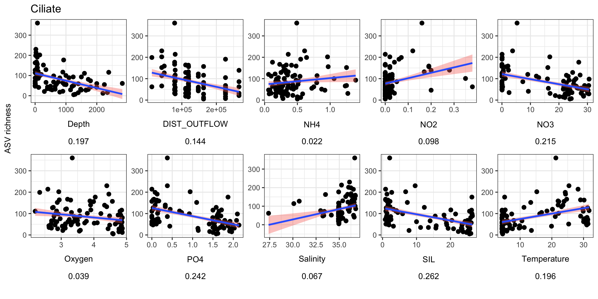
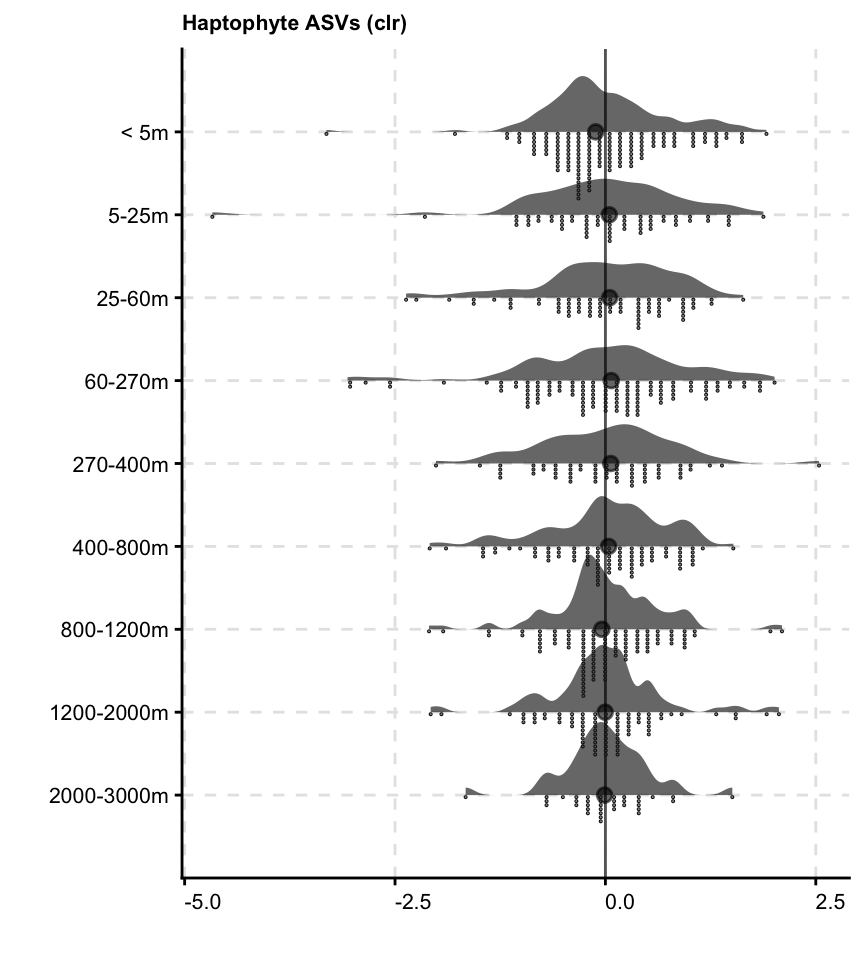
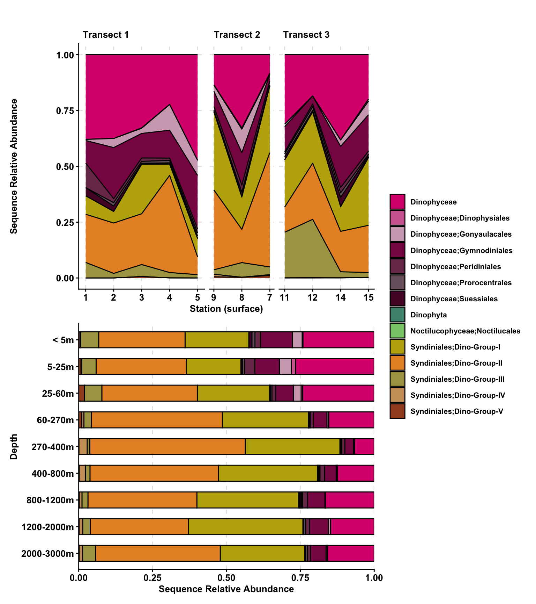
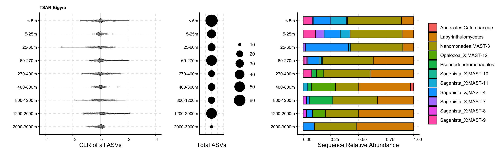
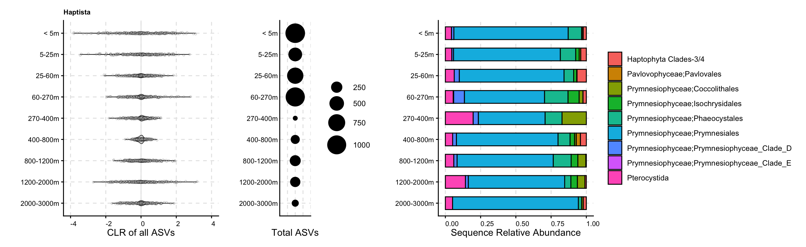
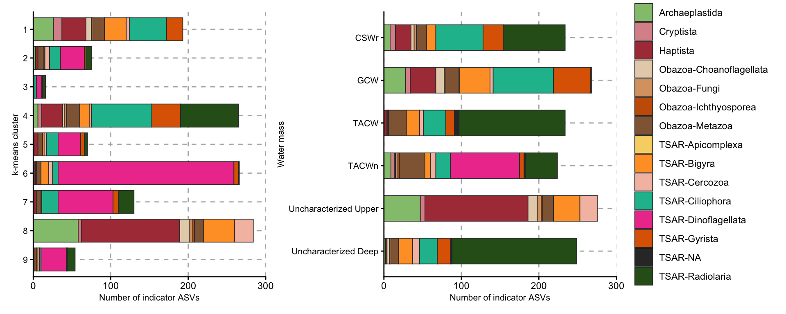
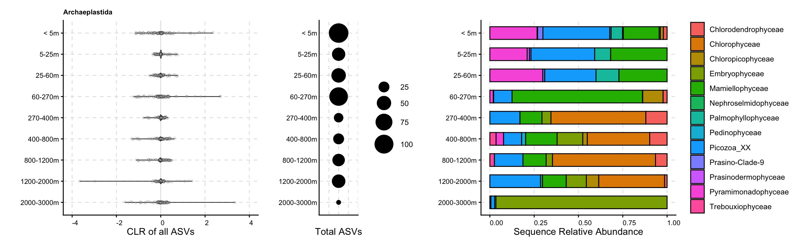
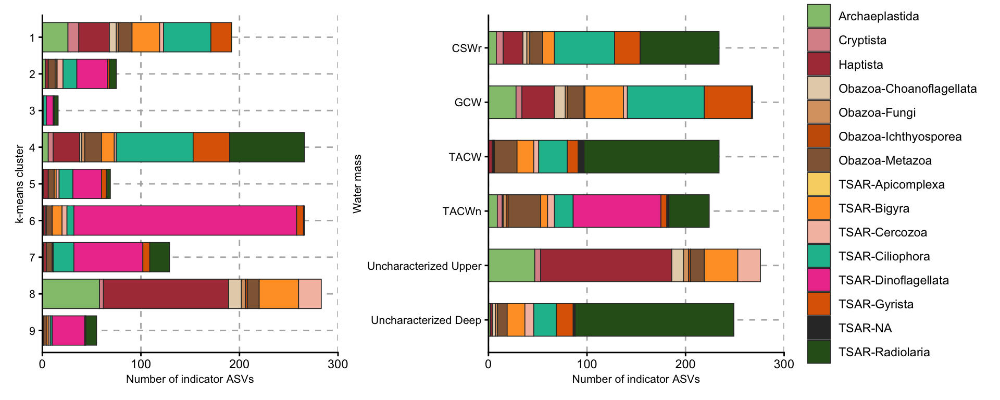

library(tidyverse);library(phyloseq); library(decontam)
library(compositions); library(patchwork);
library(ggupset); library(gt)
library(plotly); library(viridis); library(vegan)2023 Gulf data analysis
1 Contents & introduction
Physical Connectivity Shapes Signature Microeukaryotic Communities Across the Northern Gulf River Plumes & Eddy Fields observations of microeukaryotic biodiversity in the Northern Gulf Eddies, Riverine Inputs, and Environmental Niches Shape Signature Microeukaryotic Taxa of the Northern Gulf Community connectivity and functional partitioning across plume-to-pelagic gradients
Core questions:
How does the single-celled eukaryotic (microeukaryote or protistan) community composition and diversity change from the Mississippi River plume to offshore?
What environmental factors play a role in shaping the microeukaryotic community dynamics at shallow versus deep depths in the Gulf of Mexico?
How do putative functional roles among microeukaryotes vary across critical environmental gradients?
Are there specific taxonomic groups, classes, or species that may be considered indicative of the Northern Gulf ecosystem? Especially along specific temperature, salinity, oxygen, and nutrient trends?
1.1 Set up R environment
Set up R & import starting data
Below is direct from GoM-2023-amplicons.qmd
load("input-data/gulf-2023-sequence-analysis_02062026.RData", verbose = TRUE)Loading objects:
asv_long_avg_wtax_clean
asv_long_wtax_clean
tax_key
metadata_allsamples
metadata_seqsamples
metadata_stn_info1.2 Ordering & factoring
offshore_on_shore_order <- c("S1", "S2", "S3", "S4", "S5",
"S9", "S8", "S7",
"S11", "S12", "S14", "S15")
stn_order_shore_offshore <- c(1, 2, 3, 4, 5,
9, 8, 7, 6,
10, 11, 12, 13, 14, 15, 16, 17)
transect_labels <- c("transect1", "transect1", "transect1", "transect1", "transect1", "transect2", "transect2", "transect2", "transect3", "transect3", "transect3", "transect3")
depth_order <- as.character(sort((unique(metadata_seqsamples$Depth))))
depth_order_round <- as.character(sort(round(unique(metadata_seqsamples$Depth), digits = 0)))
depth_bin <- c("< 5m","5-25m","25-60m",
"60-270m","270-400m","400-800m",
"800-1200m","1200-2000m","2000-3000m")
blues <- c("#dde4f0","#b7cae8","#96b3e3",
"#6b94d6","#3473d9", "#0b4fbd",
"#0b429c", "#07214a", "#081730")
names(blues) <- depth_bin
watercol_features <- c("other", "DCM", "Salinity maximum", "Oxygen minimum", "Salinity maximum, DCM")
watercol_features_label <- c("Depth with no feature", "DCM", "Salinity maximum", "Oxygen minimum", "Salinity maximum, DCM")
watercol_shape <- c(21, 24, 25, 22, 23)
names(watercol_shape) <- watercol_features_label
# watercol_shape1.3 Study stats
(unique(asv_long_wtax_clean$Station)) # 12 stations [1] 15 1 11 12 14 2 3 4 5 7 8 9length(unique(asv_long_wtax_clean$Station)) # 12 stations[1] 12length(unique(asv_long_wtax_clean$STN_NISKIN)) # 90 unique samples[1] 902 K-means clustering by environmental parameters
library(anomalize)
library(cluster)
library(factoextra)Welcome! Want to learn more? See two factoextra-related books at https://goo.gl/ve3WBaset.seed(9450)Normalize across variables. Will not include categorical values. We are grouping STN_NISKIN.
env_only_mat <- metadata_seqsamples %>%
select(STN_NISKIN, Depth, ENV_VARIABLE, value) %>% distinct() %>%
pivot_wider(names_from = ENV_VARIABLE, values_from = value) %>% distinct() %>%
select(-Prok_count) %>%
drop_na() %>%
column_to_rownames(var = "STN_NISKIN") %>%
as.matrixNormalize matrix of numeric metadata.
# Normalize
standarize_metadata <- decostand(env_only_mat, MARGIN = 2, method = "standardize")
# Output from here should be stn_niskin
rownames(standarize_metadata) [1] "S1_N5" "S1_N10" "S2_N1" "S2_N3" "S2_N6" "S2_N8" "S2_N11"
[8] "S3_N1" "S3_N3" "S3_N4" "S3_N6" "S3_N7" "S3_N8" "S3_N9"
[15] "S4_N1" "S4_N3" "S4_N4" "S4_N5" "S4_N6" "S4_N9" "S4_N11"
[22] "S5_N1" "S5_N2" "S5_N3" "S5_N4" "S5_N10" "S5_N11" "S5_N12"
[29] "S7_N4" "S7_N5" "S7_N6" "S7_N7" "S7_N9" "S7_N10" "S7_N11"
[36] "S7_N12" "S8_N3" "S8_N5" "S8_N7" "S8_N8" "S8_N10" "S8_N11"
[43] "S9_N5" "S9_N9" "S11_N1" "S11_N4" "S11_N6" "S11_N7" "S11_N10"
[50] "S11_N11" "S11_N12" "S12_N1" "S12_N2" "S12_N4" "S12_N5" "S12_N11"
[57] "S12_N12" "S14_N1" "S14_N2" "S14_N3" "S14_N5" "S14_N6" "S14_N7"
[64] "S14_N8" "S14_N10" "S14_N11" "S14_N12" "S15_N6" "S15_N8" "S15_N9"
[71] "S15_N10" "S15_N12"First group to see how many clusters we need.
kclusts <-
tibble(k = 2:10) %>%
mutate(
kclust = map(k, ~ kmeans(standarize_metadata, .x)),
glanced = map(kclust, broom::glance))
# Unnest
output_kclusts <- kclusts %>%
unnest(cols = c(glanced))
# ?kmeans
# plot
output_kclusts %>%
ggplot(aes(x = k, y = tot.withinss)) +
geom_line(alpha = 0.5, linewidth = 1.2, color = "darkgreen") +
geom_point(size = 2, color = "darkgreen") +
theme_linedraw()
Above plot shows hypothetical numbers of k clusters (x-axis) with the variance within the cluster (y-axis). We want to isolate the number of clusters where we cover as much variance as possible - BUT if we add more clusters, not much will be helpful. This means “the bend” here. In this case, We are going to go with 6 clusters.
Use chosen number of clusters (n=6) to compute kmeans.
kmeans_env_6 <- kmeans(standarize_metadata, centers = 6)
summary(kmeans_env_6) Length Class Mode
cluster 72 -none- numeric
centers 72 -none- numeric
totss 1 -none- numeric
withinss 6 -none- numeric
tot.withinss 1 -none- numeric
betweenss 1 -none- numeric
size 6 -none- numeric
iter 1 -none- numeric
ifault 1 -none- numeric# Report some findings using "broom"
broom::tidy(kmeans_env_6)# A tibble: 6 × 15
Depth DIC NH4 NO2 NO3 Oxygen_CTD PO4 SIL Salinity TA
<dbl> <dbl> <dbl> <dbl> <dbl> <dbl> <dbl> <dbl> <dbl> <dbl>
1 -0.838 -1.58 -0.230 -0.174 -1.17 -0.731 -1.19 -1.00 -0.799 0.648
2 -0.0638 0.792 -0.552 -0.248 0.934 -0.705 0.999 0.533 0.0543 -0.802
3 -0.750 -0.0980 -0.165 1.15 -0.840 0.162 -0.890 -0.948 0.982 1.12
4 0.238 0.763 2.41 -0.309 0.722 0.0153 0.589 0.421 0.123 -0.763
5 0.904 0.706 -0.112 -0.365 0.826 1.16 0.869 1.27 -0.0692 -0.373
6 2.10 0.671 -0.0709 -0.440 0.675 1.45 0.734 1.05 -0.0609 -0.722
# ℹ 5 more variables: Temperature <dbl>, pH <dbl>, size <int>, withinss <dbl>,
# cluster <fct>broom::glance(kmeans_env_6)# A tibble: 1 × 4
totss tot.withinss betweenss iter
<dbl> <dbl> <dbl> <int>
1 852 223. 629. 2Combine kmeans clustering with original data.
# Combine with data
output_kmeans_env_6 <- broom::augment(kmeans_env_6, standarize_metadata)
head(data.frame(output_kmeans_env_6)) # Prints cluster membership at end of this dataframe. .rownames Depth DIC NH4 NO2 NO3 Oxygen_CTD
1 S1_N5 -0.8262511 -0.82888840 0.6528865 0.3583483 -1.1681386 -1.6906836
2 S1_N10 -0.8476423 -1.76236305 0.9971516 4.1670793 -1.1536887 -0.6056390
3 S2_N1 -0.3819318 0.82982146 2.4993992 -0.1331008 1.0290939 -1.2358670
4 S2_N3 -0.4939049 0.71603240 2.5619928 -0.2559631 0.1952505 -1.0153499
5 S2_N6 -0.6520469 0.63653224 1.6543849 -0.2559631 0.2539001 -0.9589676
6 S2_N8 -0.8188642 0.04645576 0.5589961 0.9726598 -0.8561911 0.8841046
PO4 SIL Salinity TA Temperature pH .cluster
1 -1.16155525 -0.9467803 0.7804681 0.4860991 0.82203047 1.1178770 1
2 -1.02968522 -0.2329261 -5.0363815 0.5641700 1.45334005 2.1065798 1
3 0.90880435 0.1582268 0.1412179 -0.8494363 -0.46738469 -0.8606697 4
4 0.18351914 -0.4969544 0.4133090 -0.5462876 -0.20593515 -0.5075208 4
5 -0.02747292 -0.5458485 0.6159021 -0.6372824 -0.02515662 -0.3529112 4
6 -0.76594514 -0.2720414 0.6821219 0.8941954 0.93308283 0.5753170 3kmeans_membership_6 <- data.frame(output_kmeans_env_6) %>%
select(STN_NISKIN = `.rownames`, CLUSTER = `.cluster`) %>% distinct()
# save(kmeans_membership_6, file = "input-data/kmeans-membership.RData")2.0.0.1 Table with features
load("input-data/kmeans-membership.RData", verbose = TRUE)Loading objects:
kmeans_membership_6head(metadata_stn_info) Station Date Latitude Longitude Transect OilRig_Count MLD SAL_MAX
1 1 7/30/23 28.849 89.460 1 9 11.500 18.603
2 2 7/30/23 28.648 89.136 1 0 8.500 32.750
3 3 7/31/23 28.438 88.805 1 0 10.500 64.991
4 4 7/31/23 28.235 88.478 1 5 8.500 70.191
5 5 7/31/23 27.987 88.136 1 4 12.913 121.043
6 7 7/31/23 28.431 88.325 2 3 13.906 98.397
O2_MIN DCM Depth_range Surface_temp Sample_n STN_CATEGORY_3
1 46.453 2.482 2.482-18.603 30.918 2 Coastal
2 353.408 25.800 2.9-353.454 31.751 5 Coastal
3 401.190 64.991 2.579-1234.265 29.075 10 Mid
4 499.891 70.191 2.231-1723.756 31.252 9 Mid
5 500.443 65.000 2.376-2386.695 31.347 9 Offshore
6 431.500 59.472 2.746-1648.465 30.326 10 Mid
STN_CATEGORY_4 PROX_TOSHORE DEPTH_MAX
1 Coastal 1 49.9
2 Coastal 2 355.0
3 Near-coast 3 1250.0
4 Near-coast 4 1744.0
5 Offshore 5 2400.0
6 Near-coast 4 1939.0head(metadata_seqsamples)# A tibble: 6 × 23
Station Niskin Depth Latitude Longitude Pressure Date Time_UTC ENV_VARIABLE
<int> <int> <dbl> <dbl> <dbl> <dbl> <chr> <chr> <chr>
1 1 5 18.6 28.8 89.5 18.7 7/30/2… 18:56:28 DIC
2 1 5 18.6 28.8 89.5 18.7 7/30/2… 18:56:28 NH4
3 1 5 18.6 28.8 89.5 18.7 7/30/2… 18:56:28 NO2
4 1 5 18.6 28.8 89.5 18.7 7/30/2… 18:56:28 NO3
5 1 5 18.6 28.8 89.5 18.7 7/30/2… 18:56:28 Oxygen_CTD
6 1 5 18.6 28.8 89.5 18.7 7/30/2… 18:56:28 PO4
# ℹ 14 more variables: value <dbl>, DATE_GMT <date>, TIME_GMT <chr>,
# datetime_cst <dttm>, SUNRISE <dttm>, SUNSET <dttm>, DAY_NIGHT <chr>,
# HR_OF_DAY <int>, stn <chr>, STN_ORDER <fct>, TRANSECT <fct>,
# DIST_OUTFLOW <dbl>, DEPTH_BIN <chr>, STN_NISKIN <chr>head(kmeans_membership_6) STN_NISKIN CLUSTER
1 S1_N5 2
2 S1_N10 1
3 S2_N1 6
4 S2_N3 6
5 S2_N6 6
6 S2_N8 2unique(kmeans_membership_6$STN_NISKIN) [1] "S1_N5" "S1_N10" "S2_N1" "S2_N3" "S2_N6" "S2_N8" "S2_N11"
[8] "S3_N1" "S3_N2" "S3_N3" "S3_N4" "S3_N5" "S3_N6" "S3_N7"
[15] "S3_N8" "S3_N9" "S3_N12" "S4_N1" "S4_N2" "S4_N3" "S4_N4"
[22] "S4_N5" "S4_N6" "S4_N9" "S4_N10" "S4_N11" "S5_N1" "S5_N2"
[29] "S5_N3" "S5_N4" "S5_N5" "S5_N6" "S5_N10" "S5_N11" "S5_N12"
[36] "S7_N2" "S7_N3" "S7_N4" "S7_N5" "S7_N6" "S7_N7" "S7_N9"
[43] "S7_N10" "S7_N11" "S7_N12" "S8_N1" "S8_N3" "S8_N4" "S8_N5"
[50] "S8_N7" "S8_N8" "S8_N9" "S8_N10" "S8_N11" "S9_N5" "S9_N9"
[57] "S11_N1" "S11_N4" "S11_N5" "S11_N6" "S11_N7" "S11_N10" "S11_N11"
[64] "S11_N12" "S12_N1" "S12_N2" "S12_N3" "S12_N4" "S12_N5" "S12_N6"
[71] "S12_N11" "S12_N12" "S14_N1" "S14_N2" "S14_N3" "S14_N4" "S14_N5"
[78] "S14_N6" "S14_N7" "S14_N8" "S14_N9" "S14_N10" "S14_N11" "S14_N12"
[85] "S15_N6" "S15_N7" "S15_N8" "S15_N9" "S15_N10" "S15_N12"table_wfeature <- metadata_seqsamples %>%
left_join(metadata_stn_info %>%
select(Station, Transect, OilRig_Count, MLD, SAL_MAX, O2_MIN, DCM, STN_CATEGORY_3, STN_CATEGORY_4)) %>%
left_join(kmeans_membership_6) %>%
mutate(SAL_THRESHOLD = case_when(
Depth > SAL_MAX ~ "Below salinity maximum", #At and below the salinity maximum
Depth <= SAL_MAX ~ "Above salinity maximum",
)) %>%
mutate(MLD_THRESHOLD = case_when(
Depth > MLD ~ "Below MLD", #At and below the salinity maximum
Depth <= MLD ~ "Above MLD",
)) %>%
mutate(DCM_THRESHOLD = case_when(
Depth > DCM ~ "Below DCM",
Depth <= DCM ~ "Above DCM", #At and above the DCM
)) %>%
mutate(O2_THRESHOLD = case_when(
Depth > O2_MIN ~ "Below oxygen minimum",
Depth <= O2_MIN ~ "Above oxygen minimum", #At and above the O2 minimum
))Joining with `by = join_by(Station)`
Joining with `by = join_by(STN_NISKIN)`# head(table_wfeature)
table_wstn_wdepth <- table_wfeature %>%
select(-ENV_VARIABLE, -value) %>% distinct()2.0.1 Create Table S1
head(asv_long_wtax_clean)# A tibble: 6 × 19
FeatureID Taxon Domain Supergroup Division Subdivision Class Order Family
<chr> <chr> <chr> <chr> <chr> <chr> <chr> <chr> <chr>
1 5bf3b429509ca… Euka… Eukar… Obazoa Opistho… Metazoa Arth… Crus… Maxil…
2 5bf3b429509ca… Euka… Eukar… Obazoa Opistho… Metazoa Arth… Crus… Maxil…
3 5bf3b429509ca… Euka… Eukar… Obazoa Opistho… Metazoa Arth… Crus… Maxil…
4 5bf3b429509ca… Euka… Eukar… Obazoa Opistho… Metazoa Arth… Crus… Maxil…
5 5bf3b429509ca… Euka… Eukar… Obazoa Opistho… Metazoa Arth… Crus… Maxil…
6 5bf3b429509ca… Euka… Eukar… Obazoa Opistho… Metazoa Arth… Crus… Maxil…
# ℹ 10 more variables: Genus <chr>, Species <chr>, STN_NISKIN <chr>,
# SEQUENCE_COUNT <dbl>, Station <int>, Niskin <int>, stn <chr>,
# DIVISION <chr>, SUPERGROUP_CLASS <chr>, Supergroup_simplified <chr>tmp_seq_stats <- read.csv(file = "output-tables/seq-asv-stats.csv") %>%
unite(STN_NISKIN, STN, NISKIN, sep = "_") %>%
select(STN_NISKIN, Sequence_files, Total_ASVs, Total_sequences)
# head(tmp_seq_stats)table_supp <- table_wfeature %>%
select(-Pressure, -datetime_cst, -starts_with("SUN"), -HR_OF_DAY, -stn) %>%
pivot_wider(names_from = ENV_VARIABLE, values_from = value) %>%
left_join(tmp_seq_stats)Joining with `by = join_by(STN_NISKIN)`glimpse(table_supp)Rows: 90
Columns: 43
$ Station <int> 1, 1, 2, 2, 2, 2, 2, 3, 3, 3, 3, 3, 3, 3, 3, 3, 3, 4, …
$ Niskin <int> 5, 10, 1, 3, 6, 8, 11, 1, 2, 3, 4, 5, 6, 7, 8, 9, 12, …
$ Depth <dbl> 18.603, 2.482, 353.454, 269.068, 149.888, 24.170, 2.90…
$ Latitude <dbl> 28.849, 28.849, 28.648, 28.648, 28.648, 28.648, 28.648…
$ Longitude <dbl> 89.460, 89.460, 89.136, 89.136, 89.136, 89.136, 89.136…
$ Date <chr> "7/30/2023", "7/30/2023", "7/30/2023", "7/30/2023", "7…
$ Time_UTC <chr> "18:56:28", "18:56:28", "21:36:00", "21:36:00", "21:36…
$ DATE_GMT <date> 2023-07-30, 2023-07-30, 2023-07-30, 2023-07-30, 2023-…
$ TIME_GMT <chr> "18:56:28", "18:56:28", "21:36:00", "21:36:00", "21:36…
$ DAY_NIGHT <chr> "Day", "Day", "Day", "Day", "Day", "Day", "Day", "Day"…
$ STN_ORDER <fct> S1, S1, S2, S2, S2, S2, S2, S3, S3, S3, S3, S3, S3, S3…
$ TRANSECT <fct> transect1, transect1, transect1, transect1, transect1,…
$ DIST_OUTFLOW <dbl> 13151.06, 13151.06, 41762.97, 41762.97, 41762.97, 4176…
$ DEPTH_BIN <chr> "5-25m", "< 5m", "270-400m", "60-270m", "60-270m", "5-…
$ STN_NISKIN <chr> "S1_N5", "S1_N10", "S2_N1", "S2_N3", "S2_N6", "S2_N8",…
$ Transect <int> 1, 1, 1, 1, 1, 1, 1, 1, 1, 1, 1, 1, 1, 1, 1, 1, 1, 1, …
$ OilRig_Count <int> 9, 9, 0, 0, 0, 0, 0, 0, 0, 0, 0, 0, 0, 0, 0, 0, 0, 5, …
$ MLD <dbl> 11.5, 11.5, 8.5, 8.5, 8.5, 8.5, 8.5, 10.5, 10.5, 10.5,…
$ SAL_MAX <dbl> 18.603, 18.603, 32.750, 32.750, 32.750, 32.750, 32.750…
$ O2_MIN <dbl> 46.453, 46.453, 353.408, 353.408, 353.408, 353.408, 35…
$ DCM <dbl> 2.482, 2.482, 25.800, 25.800, 25.800, 25.800, 25.800, …
$ STN_CATEGORY_3 <chr> "Coastal", "Coastal", "Coastal", "Coastal", "Coastal",…
$ STN_CATEGORY_4 <chr> "Coastal", "Coastal", "Coastal", "Coastal", "Coastal",…
$ CLUSTER <fct> 2, 1, 6, 6, 6, 2, 4, 5, 5, 3, 3, 3, 3, 2, 2, 2, 2, 6, …
$ SAL_THRESHOLD <chr> "Above salinity maximum", "Above salinity maximum", "B…
$ MLD_THRESHOLD <chr> "Below MLD", "Above MLD", "Below MLD", "Below MLD", "B…
$ DCM_THRESHOLD <chr> "Below DCM", "Above DCM", "Below DCM", "Below DCM", "B…
$ O2_THRESHOLD <chr> "Above oxygen minimum", "Above oxygen minimum", "Below…
$ DIC <dbl> 2098.112, 2033.992, 2212.046, 2204.230, 2198.769, 2158…
$ NH4 <dbl> 0.64, 0.75, 1.23, 1.25, 0.96, 0.61, 0.80, 0.48, NA, 0.…
$ NO2 <dbl> 0.07, 0.38, 0.03, 0.02, 0.02, 0.12, 0.00, 0.02, NA, 0.…
$ NO3 <dbl> 0.06, 0.23, 25.91, 16.10, 16.79, 3.73, 0.05, 23.57, NA…
$ Oxygen_CTD <dbl> 2.341, 3.207, 2.704, 2.880, 2.925, 4.396, 3.563, 4.743…
$ PO4 <dbl> 0.08, 0.18, 1.65, 1.10, 0.94, 0.38, 0.16, 1.62, NA, 1.…
$ SIL <dbl> 2.7, 10.0, 14.0, 7.3, 6.8, 9.6, 4.1, 26.4, NA, 20.1, 2…
$ Salinity <dbl> 36.253, 27.381, 35.278, 35.693, 36.002, 36.103, 30.101…
$ TA <dbl> 0.002417433, 0.002420547, 0.002364161, 0.002376253, 0.…
$ Temperature <dbl> 24.227, 30.918, 10.561, 13.332, 15.248, 25.404, 31.751…
$ pH <dbl> 8.0718, 8.2451, 7.7250, 7.7869, 7.8140, 7.9767, 7.5511…
$ Prok_count <dbl> NA, NA, NA, NA, NA, NA, NA, NA, NA, NA, NA, NA, NA, NA…
$ Sequence_files <chr> "GOM23_S1_N5_18S_REP1,GOM23_S1_N5_18S_REP1_orig", "GOM…
$ Total_ASVs <int> 3380, 1155, 2239, 3320, 6415, 4013, 3013, 3466, 2352, …
$ Total_sequences <int> 452806, 439363, 513337, 545869, 944938, 466075, 802360…# write.csv(table_supp, file = "output-tables/supp-table-allsampleinfo.csv")3 Sample comparison & taxonomic classification
3.1 PCA analysis
Create wide format matrix with sequence counts averaged across replicates (by ASV) Make wide format and as a matrix.
asv_wide_avg_matrix <- asv_long_avg_wtax_clean %>%
select(FeatureID, STN_NISKIN, MEAN_REPS_seq) %>%
pivot_wider(names_from = STN_NISKIN, values_from = MEAN_REPS_seq, values_fn = mean, values_fill = 0) %>%
column_to_rownames(var = "FeatureID") %>%
as.matrix()
# dim(asv_wide_avg_matrix)
# Working with 10563 ASVs
# dim(asv_long_avg_wtax_clean)pca_clr <- prcomp(data.frame(compositions::clr(t(asv_wide_avg_matrix))))variance_clr <- (pca_clr$sdev^2)/sum(pca_clr$sdev^2)
barplot(variance_clr, main = "Log-Ratio PCA Screeplot", xlab = "PC Axis", ylab = "% Variance",
cex.names = 1.5, cex.axis = 1.5, cex.lab = 1.5, cex.main = 1.5)
3.1.0.1 Plot PCA
Using MLD
blues <- c("#dde4f0","#b7cae8","#96b3e3",
"#6b94d6","#3473d9", "#0b4fbd",
"#0b429c", "#07214a", "#081730")
names(blues) <- depth_bin
PCA_PLOT <- data.frame(pca_clr$x, STN_NISKIN = rownames(pca_clr$x)) %>%
select(PC1, PC2, PC3, STN_NISKIN) %>%
left_join(table_wstn_wdepth) %>%
# Factoring
mutate(depth_order = factor(DEPTH_BIN, levels = depth_bin)) %>%
## Generate PCA plot
ggplot(aes(x = PC1, y = PC2,
shape = MLD_THRESHOLD,
# fill = CLUSTER)) + # Try this for a supplementary figure.
fill = depth_order)) +
geom_hline(yintercept = 0) + geom_vline(xintercept = 0, color = "#525252") +
geom_jitter(stroke = 0.6, size = 2.5, width = 0.8) +
# geom_jitter(stroke = 0.6, size = 2.5, width = 0.8, shape = 21) +
ylab(paste0('PC2 ',round(variance_clr[2]*100,2),'%')) +
xlab(paste0('PC1 ',round(variance_clr[1]*100,2),'%')) +
scale_shape_manual(values = c(21, 23)) +
scale_fill_manual(values = blues) +
theme_bw() +
theme(axis.text = element_text(color="black", size=12),
legend.title = element_blank(),
panel.grid.major = element_line(color = "grey70", linetype = "dashed"),
axis.title = element_text(color="black", size= 12),
legend.text = element_text(color = "black", size = 8, face = "bold"),
plot.margin = margin(2, 1, 2, 1, "cm")) +
guides(fill = guide_legend(override.aes = list(
color = "black",
shape = 22,
size = 5)),
shape = guide_legend(override.aes = list(
color = "black",
size = 5)))Joining with `by = join_by(STN_NISKIN)`PCA_PLOT
# ggsave("figures/pca-plot.svg", width = 6, height = 5, device = "svg", limitsize = FALSE)3.1.1 PCA above DCM
# head(table1_wfeature)
above_DCM_df <- table_wstn_wdepth %>%
filter(DCM_THRESHOLD == "Above DCM")
above_dcm_list <- as.character(unique(above_DCM_df$STN_NISKIN))Make wide format and as a matrix.
aboveDMC_wide_matrix <- asv_long_avg_wtax_clean %>%
filter(STN_NISKIN %in% above_dcm_list) %>%
select(FeatureID, STN_NISKIN, MEAN_REPS_seq) %>%
pivot_wider(names_from = STN_NISKIN, values_from = MEAN_REPS_seq, values_fn = mean, values_fill = 0) %>%
column_to_rownames(var = "FeatureID") %>%
as.matrix()pca_clr_abovedcm <- prcomp(data.frame(compositions::clr(t(aboveDMC_wide_matrix))))variance_clr_abovedcm <- (pca_clr_abovedcm$sdev^2)/sum(pca_clr_abovedcm$sdev^2)
barplot(variance_clr_abovedcm, main = "Log-Ratio PCA Screeplot", xlab = "PC Axis", ylab = "% Variance",
cex.names = 1.5, cex.axis = 1.5, cex.lab = 1.5, cex.main = 1.5)
blues <- c("#dde4f0","#b7cae8","#96b3e3",
"#6b94d6","#3473d9", "#0b4fbd",
"#0b429c", "#07214a", "#081730")
names(blues) <- depth_bin
pca_abovedcm <- data.frame(pca_clr_abovedcm$x, STN_NISKIN = rownames(pca_clr_abovedcm$x)) %>%
select(PC1, PC2, PC3, STN_NISKIN) %>%
left_join(table_wstn_wdepth) %>%
# Factoring
mutate(depth_order = factor(DEPTH_BIN, levels = depth_bin)) %>%
# mutate(FEATURE = str_replace_na(Features_list, replacement = "other")) %>%
# mutate(FEATURE_ORDER = factor(FEATURE, levels = watercol_features, labels = watercol_features_label)) %>%
## Generate PCA plot
ggplot(aes(x = PC1, y = PC2,
shape = ,
fill = depth_order)) +
geom_hline(yintercept = 0) + geom_vline(xintercept = 0, color = "#525252") +
geom_jitter(stroke = 0.6, size = 2.5, width = 0.8, shape = 21, color = "black") +
ylab(paste0('PC2 ',round(variance_clr_abovedcm[2]*100,2),'%')) +
xlab(paste0('PC1 ',round(variance_clr_abovedcm[1]*100,2),'%')) +
# scale_shape_manual(values = watercol_shape) +
scale_fill_manual(values = blues) +
theme_bw() +
theme(axis.text = element_text(color="black", size=12),
legend.title = element_blank(),
panel.grid.major = element_line(color = "grey70", linetype = "dashed"),
axis.title = element_text(color="black", size= 12),
legend.text = element_text(color = "black", size = 8, face = "bold"),
plot.margin = margin(2, 1, 2, 1, "cm")) +
guides(fill = guide_legend(override.aes = list(
color = "black",
shape = 22,
size = 5)),
shape = guide_legend(override.aes = list(
color = "black",
size = 5)))Joining with `by = join_by(STN_NISKIN)`pca_abovedcm
# ggsave("figures/pca-plot.svg", width = 6, height = 5, device = "svg", limitsize = FALSE)4 Diversity indices
Use wide dataframe from above.
head(asv_wide_avg_matrix)[,1:3] S11_N7 S14_N10 S2_N3
0009645516609bda2246e1955ff9ec1d 25 43 12
00170876c27b5c06fb835ad64c2125e1 11 0 0
0030ad8ce44f257c42daf3673bf92197 0 0 0
0031878bb9396df83dc75d335c478287 0 0 0
0031bd7a8b2eceaf8e92456e9cae584d 0 332 98
00372866120200b41a8ee26a79bf474d 0 132 0shannon_all <- vegan::diversity(asv_wide_avg_matrix, index = "shannon", MARGIN = 2)# ?diversity
invsimp_all <- vegan::diversity(asv_wide_avg_matrix, index = "invsimpson", MARGIN = 2)
# head(data.frame(invsimp_all))4.1 Plot diversity
4.1.1 Shannon
By depth
depth_bin <- c("< 5m","5-25m","25-60m",
"60-270m","270-400m","400-800m",
"800-1200m","1200-2000m","2000-3000m")
SHANNON <- data.frame(shannon_all) %>%
rownames_to_column(var = "STN_NISKIN") %>%
left_join(table_wstn_wdepth) %>%
# Factoring
mutate(depth_order = factor(DEPTH_BIN, levels = rev(depth_bin))) %>%
ggplot(aes(y = depth_order,
x = shannon_all,
fill = depth_order,
shape = MLD_THRESHOLD)) +
geom_jitter(stroke = 0.6, size = 2.5, width = 0.8) +
scale_shape_manual(values = c(21, 23)) +
scale_fill_manual(values = blues) +
theme_classic() + theme(
legend.position = "right",
legend.title = element_blank(),
legend.text = element_text(color = "black"),
axis.title = element_text(color = "black", size = 10),
axis.text.y = element_text(color = "black", vjust = 0.5, hjust = 1, size = 10),
panel.grid.major = element_line(color = "grey80", linetype = "dashed")) +
labs(x = "Shannon Diversity", y = "") +
guides(fill = guide_legend(override.aes = list(
color = "black",
shape = 22,
size = 5)),
shape = guide_legend(override.aes = list(
color = "black",
size = 5)))Joining with `by = join_by(STN_NISKIN)`SHANNON_ <- data.frame(shannon_all) %>%
rownames_to_column(var = "STN_NISKIN") %>%
left_join(table_wstn_wdepth) %>%
# Factoring
mutate(depth_order = factor(DEPTH_BIN, levels = rev(depth_bin))) %>%
mutate(STN_ORDER = factor(as.character(Station), levels = stn_order_shore_offshore)) %>%
#
ggplot(aes(x = STN_ORDER, y = shannon_all,
shape = MLD_THRESHOLD, fill = depth_order)) +
facet_grid(cols = vars(Transect), scale = "free_x") +
geom_jitter(stroke = 0.6, width = 0.2, size = 2) +
scale_shape_manual(values = c(21, 23)) +
scale_fill_manual(values = blues) +
theme_classic() + theme(
legend.position = "right",
legend.title = element_blank(),
legend.text = element_text(color = "black"),
axis.title = element_text(color = "black", size = 10),
axis.text.y = element_text(color = "black", vjust = 0.5, hjust = 1, size = 10),
strip.background = element_blank(),
panel.grid.major = element_line(color = "grey80", linetype = "dashed")) +
labs(y = "Shannon Diversity", x = "Station") +
guides(fill = guide_legend(override.aes = list(
color = "black",
shape = 22,
size = 5)),
shape = guide_legend(override.aes = list(
color = "black",
size = 5)))Joining with `by = join_by(STN_NISKIN)`SHANNON_
4.1.2 Inverse Simpson
SIMPSON <- data.frame(invsimp_all) %>%
rownames_to_column(var = "STN_NISKIN") %>%
left_join(table_wstn_wdepth) %>%
# Factoring
mutate(depth_order = factor(DEPTH_BIN, levels = rev(depth_bin))) %>%
ggplot(aes(y = depth_order, x = invsimp_all,
fill = depth_order, shape = MLD_THRESHOLD)) +
geom_jitter(stroke = 0.6, size = 2.5, width = 0.8) +
scale_shape_manual(values = c(21, 23)) +
scale_fill_manual(values = blues) +
theme_classic() + theme(
legend.position = "right",
legend.title = element_blank(),
legend.text = element_text(color = "black"),
axis.title = element_text(color = "black", size = 10),
axis.text.y = element_text(color = "black", vjust = 0.5, hjust = 1, size = 10),
panel.grid.major = element_line(color = "grey80", linetype = "dashed")) +
labs(x = "Inverse Simpsons", y = "") +
guides(fill = guide_legend(override.aes = list(
color = "black",
shape = 22,
size = 5)),
shape = guide_legend(override.aes = list(
color = "black",
size = 5)))Joining with `by = join_by(STN_NISKIN)`SIMPSON
4.2 T-S plot
# Import table from Portela et al.
water_mass <- read.csv("input-data/water-mass-data.csv")water_mass %>%
ggplot() +
geom_rect(data = water_mass, aes(xmin = SAL_MIN, xmax = SAL_MAX, ymin = TEMP_MIN, ymax = TEMP_MAX,
fill = Watermass, color = Watermass),
alpha = 0.1, linetype = "dashed") +
theme_minimal()
4.3 Plot K-means T-S plot
# head(table1_wfeature)
CLUSTER_COLOR <- c("#c85e82", "#efc85a", "#df9147","#6e9b4a", "#606aa9", "#126580")
CLUSTER_NUM <- c(1, 2, 3, 4, 5, 6)
names(CLUSTER_NUM) <- CLUSTER_COLOR
ts_cluster <- table_supp %>%
mutate(cluster_order = factor(CLUSTER, levels = (CLUSTER_NUM)))
ggplot() +
geom_rect(data = water_mass, aes(xmin = SAL_MIN, xmax = SAL_MAX, ymin = TEMP_MIN, ymax = TEMP_MAX, color = Watermass),
linetype = "solid", fill = NA) +
geom_jitter(data = ts_cluster, aes(x = Salinity, y = Temperature, fill = cluster_order), stroke = 0.6, size = 2.5, width = 0.2, stat = "identity", shape = 21, color = "black") +
scale_fill_manual(values = CLUSTER_COLOR) +
theme_bw() +
theme(axis.text = element_text(color="black", size=12),
legend.title = element_blank(),
panel.grid.major = element_line(color = "grey70", linetype = "dashed"),
axis.title = element_text(color="black", size= 12),
legend.text = element_text(color = "black", size = 8, face = "bold"),
plot.margin = margin(2, 1, 2, 1, "cm")) +
guides(fill = guide_legend(override.aes = list(
color = "black",
shape = 21,
size = 5)),
shape = guide_legend(override.aes = list(
color = "black",
size = 5))) +
labs(x = "Salinity (ppt)", y = "Temperature (°C)")
# ts_cluster4.3.1 Combine pca and diversity
Without TS cluster
(PCA_PLOT + coord_fixed()) /
((SHANNON + theme(legend.position = "none")) |
(SIMPSON + theme(legend.position = "none", axis.text.y = element_blank()))) +
plot_layout(axis_titles = "collect", widths = c(1, 2)) + plot_annotation(tag_levels = c("A"))
# ggsave("figures/pca-diversity-plot.svg", width = 10, height = 9, device = "svg", limitsize = FALSE)# ts + PCA_PLOT + SHANNON_
(PCA_PLOT + coord_fixed()) /
((SHANNON + theme(legend.position = "none")) |
(SIMPSON + theme(legend.position = "none", axis.text.y = element_blank()))) +
plot_layout(axis_titles = "collect", widths = c(1, 2)) + plot_annotation(tag_levels = c("A"))
# ggsave("figures/pca-diversity-plot.svg", width = 10, height = 9, device = "svg", limitsize = FALSE)# (ts_cluster ) | (PCA_PLOT + coord_fixed()) / (SHANNON_ +theme(legend.position = "none")) +
# plot_layout(nrow = 2, widths = c(1, 2, 8)) + plot_annotation(tag_levels = c("A"))5 Dendrogram by community dist
Take the matrix of all data, divide by column total so dendrogram is based on relative sequence abundance by samples.
library(ggdendro)
# CLR transformations
clr_comm <- (compositions::clr(t(asv_wide_avg_matrix)))
#
clr_eucl_comm <- stats::dist((clr_comm), method = "euclidean")
class(clr_eucl_comm)[1] "dist"# clr_eucl_comm
# dim(data.frame(clr_eucl_comm))
# Calculate the maximum distance between each sample pair (dist( method = "maximum")). Then take dissimilarity structure and assemble using the average hierarchical clustering as a dendrogram.
# head(clr_comm)
cluster_gom <- hclust(clr_eucl_comm, method = "average")
# head(cluster_gom)
# cluster_gom$labels
# Convert object to a dendrogram object in R
dendro <- as.dendrogram(cluster_gom)
gom_dendro <- dendro_data(dendro, type = "rectangle")
# rownames(segment(gom_dendro))gom_dendro_plot <- ggplot(segment(gom_dendro)) +
geom_segment(aes(x = x, y = y, xend = xend,
yend = yend)) +
coord_flip() +
scale_x_continuous(expand = c(0.005, 0.3)) +
scale_y_reverse(expand = c(0.5, 0.5)) +
geom_text(size = 3, aes(x = x, y = y, label = str_replace_all(label, "_", " "), angle = 0, hjust = 0), data = label(gom_dendro)) +
theme_dendro() + labs(y = "Dissimilarity") +
theme(axis.text.x = element_text(color = "black", size = 8, face = "bold"),
axis.line.x = element_line(color = "#252525"),
axis.ticks.x = element_line(), axis.title.x = element_text(color = "black",
size = 8))
# svg('figs/SUPPLEMENTARY-dendrogram-wreps.svg', w = 10, h = 8)
gom_dendro_plot
Isolate label names that correspond to dendrogram.
tmp <- data.frame(gom_dendro$labels)
class(tmp)[1] "data.frame"labels_for_dendro <- as.character(tmp$label)
setdiff(labels_for_dendro, table_wfeature$STN_NISKIN)character(0)head(table_wfeature)# A tibble: 6 × 36
Station Niskin Depth Latitude Longitude Pressure Date Time_UTC ENV_VARIABLE
<int> <int> <dbl> <dbl> <dbl> <dbl> <chr> <chr> <chr>
1 1 5 18.6 28.8 89.5 18.7 7/30/2… 18:56:28 DIC
2 1 5 18.6 28.8 89.5 18.7 7/30/2… 18:56:28 NH4
3 1 5 18.6 28.8 89.5 18.7 7/30/2… 18:56:28 NO2
4 1 5 18.6 28.8 89.5 18.7 7/30/2… 18:56:28 NO3
5 1 5 18.6 28.8 89.5 18.7 7/30/2… 18:56:28 Oxygen_CTD
6 1 5 18.6 28.8 89.5 18.7 7/30/2… 18:56:28 PO4
# ℹ 27 more variables: value <dbl>, DATE_GMT <date>, TIME_GMT <chr>,
# datetime_cst <dttm>, SUNRISE <dttm>, SUNSET <dttm>, DAY_NIGHT <chr>,
# HR_OF_DAY <int>, stn <chr>, STN_ORDER <fct>, TRANSECT <fct>,
# DIST_OUTFLOW <dbl>, DEPTH_BIN <chr>, STN_NISKIN <chr>, Transect <int>,
# OilRig_Count <int>, MLD <dbl>, SAL_MAX <dbl>, O2_MIN <dbl>, DCM <dbl>,
# STN_CATEGORY_3 <chr>, STN_CATEGORY_4 <chr>, CLUSTER <fct>,
# SAL_THRESHOLD <chr>, MLD_THRESHOLD <chr>, DCM_THRESHOLD <chr>, …5.0.1 Dendrogram annotation
Set up metadata for dendrogram annotation.
dendro_annotation <- table_supp %>%
filter(STN_NISKIN %in% labels_for_dendro) %>%
# Factor labeling order
mutate(label_order = factor(as.character(STN_NISKIN), levels = labels_for_dendro)) %>%
distinct()blues <- c("#dde4f0","#b7cae8","#96b3e3",
"#6b94d6","#3473d9", "#0b4fbd",
"#0b429c", "#07214a", "#081730")
names(blues) <- depth_bin
DEPTH <- dendro_annotation %>%
# Factoring
mutate(depth_order = factor(DEPTH_BIN, levels = rev(depth_bin))) %>%
ggplot(aes(y = label_order, x = 1, fill = depth_order)) +
geom_point(shape = 22, color = "black", size = 4) +
scale_fill_manual(values = blues) +
scale_y_discrete(position = "right") +
theme_void() + theme(
legend.position = "right",
legend.title = element_blank(),
legend.text = element_text(color = "black"),
strip.background = element_blank(),
axis.ticks = element_blank(),
axis.title = element_text(color = "black"),
axis.text.y = element_text(color = "black", size = 6),
axis.text.x = element_blank()) +
guides(fill = guide_legend(reverse = TRUE, ncol = 1)) +
labs(x = "", y = "")
DEPTH
# (unique(dendro_annotation$Station))
stn_order_seqs <- c(1, 2, 3, 4, 5,
9, 8, 7,
11, 12, 14, 15)
stn_order_color <- c("#e8dddc", "#e09f99", "#db756b","#d94638", "#db1e0d",
"#a89492", "#ad6f6a", "#a6453c",
"#4f4948", "#523735", "#4a221e", "#450d08")
names(stn_order_color) <- stn_order_seqs
STN <- dendro_annotation %>%
mutate(STN = factor(Station, levels = stn_order_seqs)) %>%
ggplot(aes(y = label_order, x = 1, fill = STN)) +
geom_point(shape = 22, color = "black", size = 4) +
scale_fill_manual(values = stn_order_color) +
scale_y_discrete(position = "right") +
theme_void() + theme(
legend.position = "right",
legend.title = element_blank(),
legend.text = element_text(color = "black"),
strip.background = element_blank(),
axis.ticks = element_blank(),
axis.title = element_text(color = "black"),
axis.text.y = element_text(color = "black", size = 6),
axis.text.x = element_blank()) +
guides(fill = guide_legend(reverse = TRUE, ncol = 1)) +
labs(x = "", y = "")
STN
CLUSTER_COLOR <- c("#c85e82", "#efc85a", "#df9147","#6e9b4a", "#606aa9", "#126580")
CLUSTER_NUM <- c(1, 2, 3, 4, 5, 6)
names(CLUSTER_NUM) <- CLUSTER_COLOR
KMEANS <- dendro_annotation %>%
# Factoring
mutate(cluster_order = factor(CLUSTER, levels = (CLUSTER_NUM))) %>%
ggplot(aes(y = label_order, x = 1, fill = cluster_order)) +
geom_point(shape = 22, color = "black", size = 4) +
scale_fill_manual(values = CLUSTER_COLOR) +
scale_y_discrete(position = "right") +
theme_void() + theme(
legend.position = "right",
legend.title = element_blank(),
legend.text = element_text(color = "black"),
strip.background = element_blank(),
axis.ticks = element_blank(),
axis.title = element_text(color = "black"),
axis.text.y = element_text(color = "black", size = 6),
axis.text.x = element_blank()) +
guides(fill = guide_legend(reverse = TRUE, ncol = 1)) +
labs(x = "", y = "")
KMEANS
DIST <- dendro_annotation %>%
mutate(dist_outflow = DIST_OUTFLOW/1000) %>%
ggplot(aes(y = label_order, x = 1, fill = dist_outflow)) +
geom_point(shape = 22, color = "black", size = 4) +
# scale_fill_continuous(option = "magma") +
scale_fill_viridis_c(option = "magma", direction = -1) +
# scale_fill_stepsn(colors = blues, breaks = c(50, 100, 300, 500, 1000, 1500, 2000)) +
scale_y_discrete(position = "right") +
theme_void() + theme(
legend.position = "right",
legend.title = element_blank(),
legend.text = element_text(color = "black"),
strip.background = element_blank(),
axis.ticks = element_blank(),
axis.title = element_text(color = "black"),
axis.text.y = element_text(color = "black", size = 6),
axis.text.x = element_blank()) +
guides(fill = guide_legend(reverse = TRUE, ncol = 1)) +
labs(x = "x10^3 km", y = "")
DIST
PROFILES <- dendro_annotation %>%
ungroup() %>%
select(STN_NISKIN, label_order, ends_with("_THRESHOLD")) %>%
distinct() %>%
pivot_longer(cols = ends_with("_THRESHOLD"), names_to = "FEATURE", values_to = "CATEGORY") %>%
mutate(VAL = case_when(
grepl("Above", CATEGORY) ~ "above",
TRUE ~ "below"
)) %>%
mutate(Feature_order = factor(FEATURE, levels = c("MLD_THRESHOLD","DCM_THRESHOLD","SAL_THRESHOLD","O2_THRESHOLD"), labels = c("MLD","DCM","Salinity","Oxycline"))) %>%
ggplot(aes(y = label_order, x = Feature_order, fill = VAL)) +
geom_point(color = "black", shape = 22, size = 4) +
coord_fixed(ratio = 1) +
scale_fill_manual(values = c("#d8d8f0", "#181752")) + #above, below
scale_y_discrete(position = "right") +
theme_void() + theme(
legend.position = "right",
legend.title = element_blank(),
legend.text = element_text(color = "black"),
strip.background = element_blank(),
axis.ticks = element_blank(),
panel.grid.major = element_line(color = "grey70", linetype = "dashed"),
axis.line.x = element_line(color = "black", linewidth = 0.2),
axis.line.y = element_line(color = "black", linewidth = 0.2),
axis.title = element_text(color = "black"),
axis.text.y = element_text(color = "black", size = 6),
axis.text.x = element_text(color = "black", size = 8, angle = 90, hjust = 1, vjust = 0.5)) +
# guides(fill = guide_legend(reverse = TRUE, ncol = 1)) +
labs(x = "", y = "")
PROFILES
TRANSECT <- dendro_annotation %>%
ggplot(aes(y = label_order, x = 1, fill = TRANSECT)) +
geom_point(shape = 22, color = "black", size = 4) +
# scale_fill_manual(values = c("#ff8787", "#eaf576", "#76aff5")) +
scale_fill_manual(values = c("#e0a8d8", "#9c388d", "#540548")) +
scale_y_discrete(position = "right") +
theme_void() + theme(
legend.position = "right",
legend.title = element_blank(),
legend.text = element_text(color = "black"),
strip.background = element_blank(),
axis.ticks = element_blank(),
axis.title = element_text(color = "black"),
axis.text.y = element_text(color = "black", size = 6),
axis.text.x = element_blank()) +
guides(fill = guide_legend(reverse = TRUE, ncol = 1)) +
labs(x = "", y = "")
TRANSECT
CATEGORY <- dendro_annotation %>%
ggplot(aes(y = label_order, x = 1, fill = STN_CATEGORY_4)) +
geom_point(shape = 22, color = "black", size = 4) +
# scale_fill_manual(values = c("#ff8787", "#eaf576", "#76aff5")) +
scale_fill_manual(values = c("#e3c69d","#e3ab5d", "#c4770a", "#523711")) +
scale_y_discrete(position = "right") +
theme_void() + theme(
legend.position = "right",
legend.title = element_blank(),
legend.text = element_text(color = "black"),
strip.background = element_blank(),
axis.ticks = element_blank(),
axis.title = element_text(color = "black"),
axis.text.y = element_text(color = "black", size = 6),
axis.text.x = element_blank()) +
guides(fill = guide_legend(reverse = TRUE, ncol = 1)) +
labs(x = "", y = "")
CATEGORY
OIL <- dendro_annotation %>%
mutate(OIL_COUNT = as.character(OilRig_Count)) %>%
ggplot(aes(y = label_order, x = 1, fill = OIL_COUNT)) +
geom_point(shape = 22, color = "black", size = 4) +
scale_fill_manual(values = c("grey90","#e38aa6","#ba4e70","#a13356","#8a1a3d","#54051e"))+
scale_y_discrete(position = "right") +
theme_void() + theme(
legend.position = "right",
legend.title = element_blank(),
legend.text = element_text(color = "black"),
strip.background = element_blank(),
axis.ticks = element_blank(),
axis.title = element_text(color = "black"),
axis.text.y = element_text(color = "black", size = 6),
axis.text.x = element_blank()) +
guides(fill = guide_legend(reverse = TRUE, ncol = 1)) +
labs(x = "", y = "")
OIL
DAY <- dendro_annotation %>%
ggplot(aes(y = label_order, x = 1, fill = DAY_NIGHT)) +
geom_point(shape = 22, color = "black", size = 4) +
scale_fill_manual(values = c("#afa7d1","#413c59"))+
scale_y_discrete(position = "right") +
theme_void() + theme(
legend.position = "right",
legend.title = element_blank(),
legend.text = element_text(color = "black"),
strip.background = element_blank(),
axis.ticks = element_blank(),
axis.title = element_text(color = "black"),
axis.text.y = element_text(color = "black", size = 6),
axis.text.x = element_blank()) +
guides(fill = guide_legend(reverse = TRUE, ncol = 1)) +
labs(x = "", y = "")
DAY
# range(dendro_annotation$DEPTH_MAX)
# MAX <- dendro_annotation %>%
# ggplot(aes(y = label_order, x = 1, fill = DEPTH_MAX)) +
# geom_point(shape = 22, color = "black", size = 4) +
# scale_fill_viridis_c(option = "mako", direction = -1, breaks = c(0, 50, 300, 500, 1000, 2000, 3000)) +
# scale_y_discrete(position = "right") +
# theme_void() + theme(
# legend.position = "right",
# legend.title = element_blank(),
# legend.text = element_text(color = "black"),
# strip.background = element_blank(),
# axis.ticks = element_blank(),
# axis.title = element_text(color = "black"),
# axis.text.y = element_text(color = "black", size = 6),
# axis.text.x = element_blank()) +
# # guides(fill = guide_legend(reverse = TRUE, ncol = 1)) +
# labs(x = "", y = "")
# MAXPROK <- dendro_annotation %>%
ggplot(aes(y = label_order, x = 1, fill = Prok_count)) +
geom_point(shape = 22, color = "black", size = 4) +
scale_fill_fermenter(na.value = "grey50", palette = "Reds", direction = 1) +
scale_y_discrete(position = "right") +
theme_void() + theme(
legend.position = "right",
legend.title = element_blank(),
legend.text = element_text(color = "black"),
strip.background = element_blank(),
axis.ticks = element_blank(),
axis.title = element_text(color = "black"),
axis.text.y = element_text(color = "black", size = 6),
axis.text.x = element_blank()) +
guides(fill = guide_legend(reverse = TRUE, ncol = 1)) +
labs(x = "", y = "")
PROK
6 Nutrient profiles for dendrogram
head(dendro_annotation)# A tibble: 6 × 44
Station Niskin Depth Latitude Longitude Date Time_UTC DATE_GMT TIME_GMT
<int> <int> <dbl> <dbl> <dbl> <chr> <chr> <date> <chr>
1 1 5 18.6 28.8 89.5 7/30/20… 18:56:28 2023-07-30 18:56:28
2 1 10 2.48 28.8 89.5 7/30/20… 18:56:28 2023-07-30 18:56:28
3 2 1 353. 28.6 89.1 7/30/20… 21:36:00 2023-07-30 21:36:00
4 2 3 269. 28.6 89.1 7/30/20… 21:36:00 2023-07-30 21:36:00
5 2 6 150. 28.6 89.1 7/30/20… 21:36:00 2023-07-30 21:36:00
6 2 8 24.2 28.6 89.1 7/30/20… 21:36:00 2023-07-30 21:36:00
# ℹ 35 more variables: DAY_NIGHT <chr>, STN_ORDER <fct>, TRANSECT <fct>,
# DIST_OUTFLOW <dbl>, DEPTH_BIN <chr>, STN_NISKIN <chr>, Transect <int>,
# OilRig_Count <int>, MLD <dbl>, SAL_MAX <dbl>, O2_MIN <dbl>, DCM <dbl>,
# STN_CATEGORY_3 <chr>, STN_CATEGORY_4 <chr>, CLUSTER <fct>,
# SAL_THRESHOLD <chr>, MLD_THRESHOLD <chr>, DCM_THRESHOLD <chr>,
# O2_THRESHOLD <chr>, DIC <dbl>, NH4 <dbl>, NO2 <dbl>, NO3 <dbl>,
# Oxygen_CTD <dbl>, PO4 <dbl>, SIL <dbl>, Salinity <dbl>, TA <dbl>, …ta <- dendro_annotation %>%
ggplot(aes(y = label_order, x = TA)) +
geom_point(color = "black") +
# scale_y_discrete(position = "right") +
theme_classic() + theme(
legend.position = "right",
legend.title = element_blank(),
legend.text = element_text(color = "black"),
axis.title = element_text(color = "black", size = 10),
axis.text.y = element_text(color = "black", vjust = 0.5, hjust = 1, size = 8),
panel.grid.major = element_line(color = "grey80", linetype = "dashed")) +
labs(x = "Total Alkalinity", y = "")
dic <- dendro_annotation %>%
ggplot(aes(y = label_order, x = DIC)) +
geom_point(color = "black") +
# scale_y_discrete(position = "right") +
theme_classic() + theme(
legend.position = "right",
legend.title = element_blank(),
legend.text = element_text(color = "black"),
axis.title = element_text(color = "black", size = 10),
axis.text.y = element_text(color = "black", vjust = 0.5, hjust = 1, size = 8),
panel.grid.major = element_line(color = "grey80", linetype = "dashed")) +
labs(x = "DIC", y = "")
sil <- dendro_annotation %>%
ggplot(aes(y = label_order, x = SIL)) +
geom_point(color = "black") +
# scale_y_discrete(position = "right") +
theme_classic() + theme(
legend.position = "right",
legend.title = element_blank(),
legend.text = element_text(color = "black"),
axis.title = element_text(color = "black", size = 10),
axis.text.y = element_text(color = "black", vjust = 0.5, hjust = 1, size = 8),
panel.grid.major = element_line(color = "grey80", linetype = "dashed")) +
labs(x = expression("Si(OH)"["4"] ~ "µmol" ~ L^-1), y = "")
po4 <- dendro_annotation %>%
ggplot(aes(y = label_order, x = PO4)) +
geom_point(color = "black") +
# scale_y_discrete(position = "right") +
theme_classic() + theme(
legend.position = "right",
legend.title = element_blank(),
legend.text = element_text(color = "black"),
axis.title = element_text(color = "black", size = 10),
axis.text.y = element_text(color = "black", vjust = 0.5, hjust = 1, size = 8),
panel.grid.major = element_line(color = "grey80", linetype = "dashed")) +
labs(x = expression("PO"["4"] ~ "µmol" ~ L^-1), y = "")
oxy <- dendro_annotation %>%
ggplot(aes(y = label_order, x = Oxygen_CTD)) +
geom_point(color = "black") +
# scale_y_discrete(position = "right") +
theme_classic() + theme(
legend.position = "right",
legend.title = element_blank(),
legend.text = element_text(color = "black"),
axis.title = element_text(color = "black", size = 10),
axis.text.y = element_text(color = "black", vjust = 0.5, hjust = 1, size = 8),
panel.grid.major = element_line(color = "grey80", linetype = "dashed")) +
labs(x = expression("O"["2"] ~ "ml" ~ L^-1), y = "")
no3 <- dendro_annotation %>%
ggplot(aes(y = label_order, x = NO3)) +
geom_point(color = "black") +
# scale_y_discrete(position = "right") +
theme_classic() + theme(
legend.position = "right",
legend.title = element_blank(),
legend.text = element_text(color = "black"),
axis.title = element_text(color = "black", size = 10),
axis.text.y = element_text(color = "black", vjust = 0.5, hjust = 1, size = 8),
panel.grid.major = element_line(color = "grey80", linetype = "dashed")) +
labs(x = expression("NO"["3"] ~ "µmol" ~ L^-1), y = "")
no2 <- dendro_annotation %>%
ggplot(aes(y = label_order, x = NO2)) +
geom_point(color = "black") +
# scale_y_discrete(position = "right") +
theme_classic() + theme(
legend.position = "right",
legend.title = element_blank(),
legend.text = element_text(color = "black"),
axis.title = element_text(color = "black", size = 10),
axis.text.y = element_text(color = "black", vjust = 0.5, hjust = 1, size = 8),
panel.grid.major = element_line(color = "grey80", linetype = "dashed")) +
labs(x = expression("NO"["2"] ~ "µmol" ~ L^-1), y = "")
nh4 <- dendro_annotation %>%
ggplot(aes(y = label_order, x = NH4)) +
geom_point(color = "black") +
# scale_y_discrete(position = "right") +
theme_classic() + theme(
legend.position = "right",
legend.title = element_blank(),
legend.text = element_text(color = "black"),
axis.title = element_text(color = "black", size = 10),
axis.text.y = element_text(color = "black", vjust = 0.5, hjust = 1, size = 8),
panel.grid.major = element_line(color = "grey80", linetype = "dashed")) +
labs(x = expression("NH"["4"] ~ "µmol" ~ L^-1), y = ""); nh4Warning: Removed 5 rows containing missing values or values outside the scale range
(`geom_point()`).
7 Taxonomy
Richness by depth, station, and feature.
head(table_wstn_wdepth)# A tibble: 6 × 34
Station Niskin Depth Latitude Longitude Pressure Date Time_UTC DATE_GMT
<int> <int> <dbl> <dbl> <dbl> <dbl> <chr> <chr> <date>
1 1 5 18.6 28.8 89.5 18.7 7/30/20… 18:56:28 2023-07-30
2 1 10 2.48 28.8 89.5 2.50 7/30/20… 18:56:28 2023-07-30
3 2 1 353. 28.6 89.1 356. 7/30/20… 21:36:00 2023-07-30
4 2 3 269. 28.6 89.1 271. 7/30/20… 21:36:00 2023-07-30
5 2 6 150. 28.6 89.1 151. 7/30/20… 21:36:00 2023-07-30
6 2 8 24.2 28.6 89.1 24.3 7/30/20… 21:36:00 2023-07-30
# ℹ 25 more variables: TIME_GMT <chr>, datetime_cst <dttm>, SUNRISE <dttm>,
# SUNSET <dttm>, DAY_NIGHT <chr>, HR_OF_DAY <int>, stn <chr>,
# STN_ORDER <fct>, TRANSECT <fct>, DIST_OUTFLOW <dbl>, DEPTH_BIN <chr>,
# STN_NISKIN <chr>, Transect <int>, OilRig_Count <int>, MLD <dbl>,
# SAL_MAX <dbl>, O2_MIN <dbl>, DCM <dbl>, STN_CATEGORY_3 <chr>,
# STN_CATEGORY_4 <chr>, CLUSTER <fct>, SAL_THRESHOLD <chr>,
# MLD_THRESHOLD <chr>, DCM_THRESHOLD <chr>, O2_THRESHOLD <chr>asv_long_avg_wtax_clean %>%
left_join(table_wstn_wdepth) %>%
group_by(Station, DEPTH_BIN, TRANSECT) %>%
summarise(SEQ_SUM = sum(MEAN_REPS_seq),
ASV_COUNT = n()) %>%
mutate(depth_bin_order = factor(DEPTH_BIN, levels = rev(depth_bin))) |>
ggplot(aes(x = as.factor(Station), y = depth_bin_order,
size = ASV_COUNT, fill = TRANSECT)) +
geom_jitter(shape = 21, color = "black", stroke = 1.5) +
scale_x_discrete(position = "top") +
scale_fill_manual(values = c("#6edb8f", "#ab70e6", "#ebb923")) +
scale_size(range=c(3,7), guide="legend") +
theme_classic() +
theme(
axis.text.x = element_text(color = "black", size = 14),
axis.text.y = element_text(color = "black", size = 14),
panel.grid.major = element_line(color = "grey90", linetype = "dotted")
) +
labs(x = "", y = "Depth (m)")Joining with `by = join_by(STN_NISKIN)`
`summarise()` has grouped output by 'Station', 'DEPTH_BIN'. You can override
using the `.groups` argument.
tax_color <- c("#607080","#2f97f7","#2c5c1d","#6da65b", "grey20",
"#de6600", #Gyrista
"#ee429b", #dinos
"#1abc9c", # ciliates
"#23b521","#f5bfb0","#fea02f", "#f7d472",
"#d7b6d7","#460e57",
"#572f0e","#916643","#c95e06", "#dba272", "#e6d2b8", "#b09b10",
"#ad3d46", #Haptista
"#5e0810", "grey30", "#db9399","#93c47d","#ca7ade")
tax_simplified_list <- as.character(rev(sort(unique(asv_long_avg_wtax_clean $Supergroup_simplified))))
tax_simplified_list [1] "TSAR-Telonemia_X" "TSAR-Stramenopiles_X"
[3] "TSAR-Radiolaria" "TSAR-Perkinsea"
[5] "TSAR-NA" "TSAR-Gyrista"
[7] "TSAR-Dinoflagellata" "TSAR-Ciliophora"
[9] "TSAR-Chrompodellids" "TSAR-Cercozoa"
[11] "TSAR-Bigyra" "TSAR-Apicomplexa"
[13] "TSAR-Alveolata_X" "Provora"
[15] "Obazoa-Opisthokonta_X" "Obazoa-Metazoa"
[17] "Obazoa-Ichthyosporea" "Obazoa-Fungi"
[19] "Obazoa-Choanoflagellata" "Obazoa-Apusomonada_X"
[21] "Haptista" "Excavata"
[23] "Eukaryota_X" "Cryptista"
[25] "Archaeplastida" "Amoebozoa" names(tax_color) <- tax_simplified_list
names(tax_simplified_list) <- tax_color
# view(tax_simplified_list)Low taxonomic resolution should be at DIVISION level. Then to SUPERGROUP_CLASS level.
7.0.1 For dendrogram
# Sum by taxonomic groups
TAX <- asv_long_avg_wtax_clean %>%
left_join(table_wstn_wdepth) %>%
filter(Supergroup_simplified != "Eukaryota") %>%
filter(Supergroup_simplified != "TSAR-NA") %>%
filter(Supergroup_simplified != "Obazoa-Metazoa") %>%
group_by(STN_NISKIN, Station, Niskin,
Depth, DEPTH_BIN, Supergroup_simplified) |>
summarise(SUM_SEQ = sum(MEAN_REPS_seq),
ASV_COUNT = n()) %>%
# Factoring and ordering
mutate(label_order = factor(STN_NISKIN, levels = labels_for_dendro),
tax_order = factor(Supergroup_simplified, levels = (tax_simplified_list))) %>%
# mutate(label_order = str_remove(label_order, "_")) |>
ggplot(aes(y = (label_order), x = SUM_SEQ, fill = tax_order)) +
geom_bar(stat = "identity", position = "fill",
color = "grey20", width = 0.7, linewidth = 0.3) +
scale_fill_manual(values = tax_color) +
# scale_y_discrete(position = "right") +
scale_y_discrete(position = "left") +
scale_x_continuous(expand = c(0,0)) +
theme_classic() + theme(
legend.position = "right",
legend.title = element_blank(),
legend.text = element_text(color = "black"),
strip.background = element_blank(),
# axis.ticks = element_blank(),
axis.title = element_text(color = "black", size = 8),
axis.text.y = element_text(color = "black", vjust = 0.5, hjust = 0, size = 5),
panel.grid.major = element_line(color = "grey70", linetype = "dashed")) +
guides(fill = guide_legend(reverse = TRUE, ncol = 1)) +
labs(x = "Relative Abundance", y = "")Joining with `by = join_by(STN_NISKIN)`
`summarise()` has grouped output by 'STN_NISKIN', 'Station', 'Niskin', 'Depth',
'DEPTH_BIN'. You can override using the `.groups` argument.TAX
7.0.2 Plot ASV totals
Total ASVs
# Sum by taxonomic groups
ASV_TOTAL <- asv_long_avg_wtax_clean %>%
left_join(table_wstn_wdepth) %>%
filter(Supergroup_simplified != "Eukaryota") %>%
filter(Supergroup_simplified != "TSAR-NA") %>%
filter(Supergroup_simplified != "Obazoa-Metazoa") %>%
group_by(STN_NISKIN, Station, Niskin) |>
summarise(ASV_COUNT = n()) %>%
# Factoring and ordering
mutate(label_order = factor(STN_NISKIN, levels = labels_for_dendro)) %>%
ggplot(aes(y = (label_order), x = ASV_COUNT)) +
geom_bar(stat = "identity", position = "stack",
color = "black", fill = "grey40", width = 0.7, linewidth = 0.3) +
scale_y_discrete(position = "left") +
scale_x_continuous(expand = c(0,0)) +
theme_classic() + theme(
legend.position = "right",
legend.title = element_blank(),
legend.text = element_text(color = "black"),
strip.background = element_blank(),
# axis.ticks = element_blank(),
axis.title = element_text(color = "black", size = 8),
axis.text.y = element_text(color = "black", vjust = 0.5, hjust = 0, size = 5),
panel.grid.major = element_line(color = "grey70", linetype = "dashed")) +
guides(fill = guide_legend(reverse = TRUE, ncol = 1)) +
labs(x = "Total ASVs", y = "")Joining with `by = join_by(STN_NISKIN)`
`summarise()` has grouped output by 'STN_NISKIN', 'Station'. You can override
using the `.groups` argument.ASV_TOTAL
# Sum by taxonomic groups
four <- c("TSAR-Dinoflagellata", "TSAR-Radiolaria", "TSAR-Ciliophora", "TSAR-Gyrista")
TAX_TOP_FOUR <- asv_long_avg_wtax_clean %>%
left_join(table_wstn_wdepth) %>%
filter(Supergroup_simplified != "Eukaryota") %>%
filter(Supergroup_simplified != "TSAR-NA") %>%
filter(Supergroup_simplified != "Obazoa-Metazoa") %>%
filter(Supergroup_simplified %in% four) %>%
group_by(STN_NISKIN, Station, Niskin, Supergroup_simplified) %>%
summarise(ASV_COUNT = n()) %>%
# Factoring and ordering
mutate(label_order = factor(STN_NISKIN, levels = labels_for_dendro),
tax_order = factor(Supergroup_simplified, levels = (tax_simplified_list))) %>%
ggplot(aes(y = (label_order), x = ASV_COUNT, fill = tax_order)) +
geom_bar(stat = "identity", position = "stack",
color = "black", width = 0.7, linewidth = 0.3) +
scale_fill_manual(values = tax_color) +
facet_grid(cols = vars(tax_order), scales = "free") +
scale_y_discrete(position = "left") +
scale_x_continuous(expand = c(0,0)) +
theme_classic() + theme(
legend.position = "right",
legend.title = element_blank(),
legend.text = element_text(color = "black"),
strip.background = element_blank(),
strip.text = element_blank(),
axis.title = element_text(color = "black", size = 8),
axis.text.y = element_text(color = "black", vjust = 0.5, hjust = 0, size = 5),
panel.grid.major = element_line(color = "grey70", linetype = "dashed")) +
guides(fill = guide_legend(reverse = TRUE, ncol = 1)) +
labs(x = "Total ASVs", y = "")Joining with `by = join_by(STN_NISKIN)`
`summarise()` has grouped output by 'STN_NISKIN', 'Station', 'Niskin'. You can
override using the `.groups` argument.TAX_TOP_FOUR
7.0.3 Dashboard data: sequence abundance
supergroup_relabun <- asv_long_avg_wtax_clean %>%
left_join(table_wstn_wdepth) %>%
group_by(Station, DEPTH_BIN, Supergroup, Supergroup_simplified) %>%
summarise(SUM_SEQ = sum(MEAN_REPS_seq),
ASV_COUNT = n()) %>%
filter(Supergroup_simplified != "Eukaryota") %>%
filter(Supergroup_simplified != "TSAR-NA") %>%
filter(Supergroup_simplified != "Obazoa-Metazoa") Joining with `by = join_by(STN_NISKIN)`
`summarise()` has grouped output by 'Station', 'DEPTH_BIN', 'Supergroup'. You
can override using the `.groups` argument.# write.csv(supergroup_relabun, file = "dashboard-data/supergroup_relabun.csv")unique(supergroup_relabun$Supergroup_simplified) [1] "Archaeplastida" "Cryptista"
[3] "Haptista" "Obazoa-Choanoflagellata"
[5] "Obazoa-Fungi" "Obazoa-Ichthyosporea"
[7] "Obazoa-Opisthokonta_X" "TSAR-Bigyra"
[9] "TSAR-Cercozoa" "TSAR-Ciliophora"
[11] "TSAR-Dinoflagellata" "TSAR-Gyrista"
[13] "TSAR-Radiolaria" "TSAR-Stramenopiles_X"
[15] "TSAR-Telonemia_X" "TSAR-Chrompodellids"
[17] "Obazoa-Apusomonada_X" "TSAR-Apicomplexa"
[19] "Eukaryota_X" "TSAR-Alveolata_X"
[21] "Provora" "Amoebozoa"
[23] "TSAR-Perkinsea" "Excavata" 7.0.4 Plot sequence relative abundance
asv_long_avg_wtax_clean %>%
left_join(table_wstn_wdepth) %>%
group_by(Station, DEPTH_BIN, Supergroup, Supergroup_simplified) %>%
summarise(SUM_SEQ = sum(MEAN_REPS_seq),
ASV_COUNT = n()) %>%
filter(Supergroup_simplified != "Eukaryota") %>%
filter(Supergroup_simplified != "TSAR-NA") %>%
filter(Supergroup_simplified != "Obazoa-Metazoa") %>%
mutate(depth_bin_order = factor(DEPTH_BIN, levels = rev(depth_bin)),
tax_order = factor(Supergroup_simplified, levels = rev(tax_simplified_list))) |>
ggplot(aes(y = depth_bin_order, x = SUM_SEQ, fill = tax_order)) +
geom_bar(stat = "identity", position = "fill", color = "black", width = 0.9) +
scale_fill_manual(values = tax_color) +
scale_x_continuous(expand = c(0,0)) +
facet_grid(rows = vars(Station), scales = "free_y", space = "free", axis.labels = "all_x") +
theme_classic() + theme(
legend.position = "right",
legend.title = element_blank(),
legend.text = element_text(color = "black", face = "bold"),
strip.background = element_blank(),
strip.text.y = element_text(angle = 0, color = "black", face = "bold"),
axis.title = element_text(color = "black", face = "bold"),
axis.text.y = element_text(color = "black", face = "bold"),
axis.text.x = element_text(color = "black", face = "bold")) +
guides(fill = guide_legend(reverse = TRUE, ncol = 1)) +
labs(x = "Sequence Relative Abundace", y = "Depth (m)")Joining with `by = join_by(STN_NISKIN)`
`summarise()` has grouped output by 'Station', 'DEPTH_BIN', 'Supergroup'. You
can override using the `.groups` argument.
7.0.5 NASEM plot
unique(asv_long_avg_wtax_clean$Supergroup_simplified) [1] "TSAR-Radiolaria" "TSAR-Dinoflagellata"
[3] "TSAR-Bigyra" "TSAR-Gyrista"
[5] "TSAR-Ciliophora" "TSAR-NA"
[7] "Haptista" "Obazoa-Metazoa"
[9] "Obazoa-Choanoflagellata" "TSAR-Cercozoa"
[11] "Archaeplastida" "Obazoa-Fungi"
[13] "TSAR-Telonemia_X" "TSAR-Stramenopiles_X"
[15] "Cryptista" "Obazoa-Opisthokonta_X"
[17] "Excavata" "TSAR-Perkinsea"
[19] "Amoebozoa" "TSAR-Alveolata_X"
[21] "Provora" "Obazoa-Ichthyosporea"
[23] "Eukaryota_X" "TSAR-Apicomplexa"
[25] "TSAR-Chrompodellids" "Obazoa-Apusomonada_X" % of data used
tax_nasem <- c("TSAR-Dinoflagellata", "TSAR-Ciliophora", "TSAR-Gyrista", "TSAR-Radiolaria", "Haptista")
tmp_n <- asv_long_avg_wtax_clean %>%
filter(Supergroup_simplified %in% tax_nasem)
(length(unique(tmp_n$FeatureID)) / length(unique(asv_long_avg_wtax_clean$FeatureID)))[1] 0.8251444# 82% of the data.
head(table_wstn_wdepth)# A tibble: 6 × 34
Station Niskin Depth Latitude Longitude Pressure Date Time_UTC DATE_GMT
<int> <int> <dbl> <dbl> <dbl> <dbl> <chr> <chr> <date>
1 1 5 18.6 28.8 89.5 18.7 7/30/20… 18:56:28 2023-07-30
2 1 10 2.48 28.8 89.5 2.50 7/30/20… 18:56:28 2023-07-30
3 2 1 353. 28.6 89.1 356. 7/30/20… 21:36:00 2023-07-30
4 2 3 269. 28.6 89.1 271. 7/30/20… 21:36:00 2023-07-30
5 2 6 150. 28.6 89.1 151. 7/30/20… 21:36:00 2023-07-30
6 2 8 24.2 28.6 89.1 24.3 7/30/20… 21:36:00 2023-07-30
# ℹ 25 more variables: TIME_GMT <chr>, datetime_cst <dttm>, SUNRISE <dttm>,
# SUNSET <dttm>, DAY_NIGHT <chr>, HR_OF_DAY <int>, stn <chr>,
# STN_ORDER <fct>, TRANSECT <fct>, DIST_OUTFLOW <dbl>, DEPTH_BIN <chr>,
# STN_NISKIN <chr>, Transect <int>, OilRig_Count <int>, MLD <dbl>,
# SAL_MAX <dbl>, O2_MIN <dbl>, DCM <dbl>, STN_CATEGORY_3 <chr>,
# STN_CATEGORY_4 <chr>, CLUSTER <fct>, SAL_THRESHOLD <chr>,
# MLD_THRESHOLD <chr>, DCM_THRESHOLD <chr>, O2_THRESHOLD <chr>tax_nasem <- c("TSAR-Dinoflagellata", "TSAR-Ciliophora", "TSAR-Gyrista", "TSAR-Radiolaria", "Haptista")
labels_nasem <- c("Dinoflagellates", "Ciliates", "Gyrista", "Radiolaria", "Haptista")
colors_nasem <- c("#d11141", "#00aedb", "#f37735", "#00b159", "#ffc425")
asv_long_avg_wtax_clean %>%
left_join(table_wstn_wdepth) %>%
filter(Station <= 5) %>%
# Filter for diatoms, dinoflagellates, ciliates, haptophytes.
filter(Supergroup_simplified %in% tax_nasem) %>%
mutate(Taxon = factor(Supergroup_simplified, levels = tax_nasem, labels = labels_nasem)) %>%
group_by(Station, DEPTH_BIN, Taxon) %>%
summarise(SUM_SEQ = sum(MEAN_REPS_seq),
ASV_COUNT = n()) %>%
mutate(depth_bin_order = factor(DEPTH_BIN, levels = rev(depth_bin))) |>
ggplot(aes(y = depth_bin_order, x = SUM_SEQ, fill = Taxon)) +
geom_bar(stat = "identity", position = "fill", color = "black", width = 0.8) +
scale_fill_manual(values = colors_nasem) +
scale_x_continuous(expand = c(0,0)) +
# facet_wrap(vars(Station)) +
facet_grid(rows = vars(Station), scales = "free_y", space = "free", axis.labels = "all_x") +
theme_classic() + theme(
legend.position = "right",
legend.title = element_blank(),
legend.text = element_text(color = "black", face = "bold"),
strip.background = element_blank(),
strip.text.y = element_text(angle = 0, color = "black", face = "bold"),
axis.title = element_text(color = "black", face = "bold"),
axis.text.y = element_text(color = "black", face = "bold"),
axis.text.x = element_text(color = "black", face = "bold")) +
guides(fill = guide_legend(reverse = TRUE, ncol = 1)) +
labs(x = "Sequence Relative Abundace", y = "Depth (m)")Joining with `by = join_by(STN_NISKIN)`
`summarise()` has grouped output by 'Station', 'DEPTH_BIN'. You can override
using the `.groups` argument.
# ggsave("figures/nasem_barplot.svg", width = 5, height = 6, device = "svg", limitsize = FALSE)tax_nasem <- c("Syndiniales","TSAR-Dinoflagellata", "TSAR-Ciliophora", "TSAR-Gyrista", "TSAR-Radiolaria", "Haptista")
labels_nasem <- c("Syndiniales","Dinoflagellates", "Ciliates", "Gyrista", "Radiolaria", "Haptista")
colors_nasem <- c("#d998a8","#d11141", "#00aedb", "#f37735", "#00b159", "#ffc425")
asv_long_avg_wtax_clean %>%
left_join(table_wstn_wdepth) %>%
filter(Station <= 5) %>%
# Filter for diatoms, dinoflagellates, ciliates, haptophytes.
filter(Supergroup_simplified %in% tax_nasem) %>%
# include parasitsm
mutate(TAX = case_when(
Class == "Syndiniales" ~ "Syndiniales",
TRUE ~ Supergroup_simplified
)) %>%
mutate(Taxon = factor(TAX, levels = tax_nasem, labels = labels_nasem)) %>%
group_by(Station, DEPTH_BIN, Taxon) %>%
summarise(SUM_SEQ = sum(MEAN_REPS_seq),
ASV_COUNT = n()) %>%
mutate(depth_bin_order = factor(DEPTH_BIN, levels = rev(depth_bin))) |>
ggplot(aes(y = depth_bin_order, x = SUM_SEQ, fill = Taxon)) +
geom_bar(stat = "identity", position = "fill", color = "black", width = 0.8) +
scale_fill_manual(values = colors_nasem) +
scale_x_continuous(expand = c(0,0)) +
# facet_wrap(vars(Station)) +
facet_grid(rows = vars(Station), scales = "free_y", space = "free", axis.labels = "all_x") +
theme_classic() + theme(
legend.position = "right",
legend.title = element_blank(),
legend.text = element_text(color = "black", face = "bold"),
strip.background = element_blank(),
strip.text.y = element_text(angle = 0, color = "black", face = "bold"),
axis.title = element_text(color = "black", face = "bold"),
axis.text.y = element_text(color = "black", face = "bold"),
axis.text.x = element_text(color = "black", face = "bold")) +
guides(fill = guide_legend(reverse = TRUE, ncol = 1)) +
labs(x = "Sequence Relative Abundace", y = "Depth (m)")Joining with `by = join_by(STN_NISKIN)`
`summarise()` has grouped output by 'Station', 'DEPTH_BIN'. You can override
using the `.groups` argument.
# ggsave("figures/nasem_barplot_parasites.svg", width = 5, height = 6, device = "svg", limitsize = FALSE)7.0.6 Plot sequence relative abundance with depths
asv_long_avg_wtax_clean %>%
left_join(table_wstn_wdepth) %>%
group_by(Station, Depth, Supergroup_simplified) %>%
summarise(SUM_SEQ = sum(MEAN_REPS_seq),
ASV_COUNT = n()) %>%
filter(Supergroup_simplified != "Eukaryota") %>%
filter(Supergroup_simplified != "TSAR-NA") %>%
filter(Supergroup_simplified != "Obazoa-Metazoa") %>%
mutate(tax_order = factor(Supergroup_simplified, levels = rev(tax_simplified_list))) |>
ggplot(aes(y = as.factor(Depth), x = SUM_SEQ, fill = tax_order)) +
geom_bar(stat = "identity", position = "fill", color = "white", width = 0.9) +
scale_fill_manual(values = tax_color) +
# scale_y_reverse() +
scale_x_continuous(expand = c(0,0)) +
facet_grid(rows = vars(Station), scales = "free_y", space = "free", axis.labels = "all_x") +
theme_classic() + theme(
legend.position = "right",
legend.title = element_blank(),
legend.text = element_text(color = "black", face = "bold"),
strip.background = element_blank(),
strip.text.y = element_text(angle = 0, color = "black", face = "bold"),
axis.title = element_text(color = "black", face = "bold"),
axis.text.y = element_text(color = "black", face = "bold"),
axis.text.x = element_text(color = "black", face = "bold")) +
guides(fill = guide_legend(reverse = TRUE, ncol = 1)) +
labs(x = "Sequence Relative Abundace", y = "Depth (m)")Joining with `by = join_by(STN_NISKIN)`
`summarise()` has grouped output by 'Station', 'Depth'. You can override using
the `.groups` argument.
Plot ASV richness by taxonomic groups
# tax_color
asv_long_avg_wtax_clean %>%
left_join(table_wstn_wdepth) %>%
group_by(DEPTH_BIN, Supergroup_simplified, Class) %>%
summarise(ASV_COUNT = n()) %>%
filter(Supergroup_simplified != "Eukaryota") %>%
filter(Supergroup_simplified != "Eukaryota_X") %>%
filter(Supergroup_simplified != "TSAR-NA") %>%
filter(Supergroup_simplified != "Obazoa-Metazoa") %>%
mutate(depth_bin_order = factor(DEPTH_BIN, levels = rev(depth_bin)),
tax_order = factor(Supergroup_simplified, levels = rev(tax_simplified_list))) |>
ggplot(aes(y = depth_bin_order, x = Class, fill = tax_order, size = ASV_COUNT)) +
geom_point(shape = 21, color = "grey10", alpha = 0.7, stroke = 0.5) +
scale_fill_manual(values = tax_color) +
scale_size_continuous(range = c(1,10), breaks = c(1, 10, 50, 100, 500, 1000, 2000)) +
facet_grid(cols = vars(tax_order), scales = "free_x", space = "free_x", axis.labels = "all_x") +
theme_classic() + theme(
legend.position = "bottom",
legend.title = element_blank(),
legend.text = element_text(color = "black", face = "bold"),
strip.background = element_blank(),
panel.grid.major = element_line(color = "grey90", linetype = "dashed"),
strip.text.y = element_text(angle = 90, hjust = 0, vjust = 0.5, size = 8, color = "black", face = "bold"),
strip.text.x = element_text(angle = 90, hjust = 0, vjust = 0.5, size = 8, color = "black", face = "bold"),
axis.title = element_text(color = "black", face = "bold"),
axis.text.y = element_text(color = "black", face = "bold"),
axis.text.x = element_text(color = "black", face = "bold", angle = 90,
hjust = 1, vjust = 0, size = 8)) +
guides(fill = "none",
size = guide_legend(nrow = 1, shape = 21, color = "black", fill = "black")) +
labs(x = "", y = "Depth (m)")Joining with `by = join_by(STN_NISKIN)`
`summarise()` has grouped output by 'DEPTH_BIN', 'Supergroup_simplified'. You
can override using the `.groups` argument.Warning in guide_legend(nrow = 1, shape = 21, color = "black", fill = "black"): Arguments in `...` must be used.
✖ Problematic arguments:
• shape = 21
• color = "black"
• fill = "black"
ℹ Did you misspell an argument name?
# ggsave("figures/tax-dotplot.svg", width = 22, height = 5, device = "svg", limitsize = FALSE)8 Plot Dendrogram compilation
# (TAX_TOP_FOUR + theme(legend.position = "none"))
gom_dendro_plot + DEPTH + STN + KMEANS + PROFILES +
oxy + nh4 + no3 + no2 + po4 + sil + dic + ta +
DAY + DIST +
CATEGORY + TRANSECT + OIL +
PROK + TAX + ASV_TOTAL +
plot_layout(nrow = 1,
widths = c(2.5, 1, 1, 1, 1,
0.5, 0.5, 0.5, 0.5, 0.5, 0.5,0.5, 0.5,
1, 1,
1, 1, 1,
1, 1, 1))Warning: Removed 5 rows containing missing values or values outside the scale range
(`geom_point()`).
Removed 5 rows containing missing values or values outside the scale range
(`geom_point()`).
Removed 5 rows containing missing values or values outside the scale range
(`geom_point()`).
Removed 5 rows containing missing values or values outside the scale range
(`geom_point()`).
Removed 5 rows containing missing values or values outside the scale range
(`geom_point()`).Warning: Removed 15 rows containing missing values or values outside the scale range
(`geom_point()`).
Removed 15 rows containing missing values or values outside the scale range
(`geom_point()`).
# ggsave("figures/dendrogram-compiled.svg", width = 45, height = 13, device = "svg", limitsize = FALSE)9 Kmeans supplementary
Add water masses too.
Get order of kmeans clusters 1 to 6, with station niskin order.
table_kmeans_order <- table_supp %>%
mutate(cluster_order = factor(CLUSTER, levels = (CLUSTER_NUM))) %>%
select(cluster_order, CLUSTER, STN_NISKIN) %>% distinct() %>%
arrange(cluster_order)
stn_bykmeans <- rev(as.character(table_kmeans_order$STN_NISKIN))CLUSTER_COLOR <- c("#c85e82", "#efc85a", "#df9147","#6e9b4a", "#606aa9", "#126580")
CLUSTER_NUM <- c(1, 2, 3, 4, 5, 6)
names(CLUSTER_NUM) <- CLUSTER_COLOR
bykmeans_cluster <- table_supp %>%
# Factoring
mutate(cluster_order = factor(CLUSTER, levels = (CLUSTER_NUM))) %>%
mutate(stn_order = factor(STN_NISKIN, levels = (stn_bykmeans))) %>%
ggplot(aes(y = stn_order, x = 1, fill = cluster_order)) +
geom_point(shape = 22, color = "black", size = 4) +
scale_fill_manual(values = CLUSTER_COLOR) +
scale_y_discrete(position = "left") +
theme_void() + theme(
legend.position = "left",
legend.title = element_blank(),
legend.text = element_text(color = "black"),
strip.background = element_blank(),
axis.ticks = element_blank(),
axis.title = element_text(color = "black"),
axis.text.y = element_text(color = "black", size = 6),
axis.text.x = element_blank()) +
guides(fill = guide_legend(reverse = TRUE, ncol = 1)) +
labs(x = "", y = "")
# bykmeans_clusterblues <- c("#dde4f0","#b7cae8","#96b3e3",
"#6b94d6","#3473d9", "#0b4fbd",
"#0b429c", "#07214a", "#081730")
names(blues) <- depth_bin
bykmeans_depth <- table_supp %>%
# Factoring
mutate(cluster_order = factor(CLUSTER, levels = (CLUSTER_NUM))) %>%
mutate(stn_order = factor(STN_NISKIN, levels = (stn_bykmeans))) %>%
mutate(depth_order = factor(DEPTH_BIN, levels = rev(depth_bin))) %>%
ggplot(aes(y = stn_order, x = 1, fill = depth_order)) +
geom_point(shape = 22, color = "black", size = 4) +
scale_fill_manual(values = blues) +
scale_y_discrete(position = "right") +
theme_void() + theme(
legend.position = "right",
legend.title = element_blank(),
legend.text = element_text(color = "black"),
strip.background = element_blank(),
axis.ticks = element_blank(),
axis.title = element_text(color = "black"),
axis.text.y = element_text(color = "black", size = 6),
axis.text.x = element_blank()) +
guides(fill = guide_legend(reverse = TRUE, ncol = 1)) +
labs(x = "", y = "")head(table_supp)# A tibble: 6 × 43
Station Niskin Depth Latitude Longitude Date Time_UTC DATE_GMT TIME_GMT
<int> <int> <dbl> <dbl> <dbl> <chr> <chr> <date> <chr>
1 1 5 18.6 28.8 89.5 7/30/20… 18:56:28 2023-07-30 18:56:28
2 1 10 2.48 28.8 89.5 7/30/20… 18:56:28 2023-07-30 18:56:28
3 2 1 353. 28.6 89.1 7/30/20… 21:36:00 2023-07-30 21:36:00
4 2 3 269. 28.6 89.1 7/30/20… 21:36:00 2023-07-30 21:36:00
5 2 6 150. 28.6 89.1 7/30/20… 21:36:00 2023-07-30 21:36:00
6 2 8 24.2 28.6 89.1 7/30/20… 21:36:00 2023-07-30 21:36:00
# ℹ 34 more variables: DAY_NIGHT <chr>, STN_ORDER <fct>, TRANSECT <fct>,
# DIST_OUTFLOW <dbl>, DEPTH_BIN <chr>, STN_NISKIN <chr>, Transect <int>,
# OilRig_Count <int>, MLD <dbl>, SAL_MAX <dbl>, O2_MIN <dbl>, DCM <dbl>,
# STN_CATEGORY_3 <chr>, STN_CATEGORY_4 <chr>, CLUSTER <fct>,
# SAL_THRESHOLD <chr>, MLD_THRESHOLD <chr>, DCM_THRESHOLD <chr>,
# O2_THRESHOLD <chr>, DIC <dbl>, NH4 <dbl>, NO2 <dbl>, NO3 <dbl>,
# Oxygen_CTD <dbl>, PO4 <dbl>, SIL <dbl>, Salinity <dbl>, TA <dbl>, …bykmeans_dist <- table_supp %>%
# Factoring
mutate(cluster_order = factor(CLUSTER, levels = (CLUSTER_NUM))) %>%
mutate(stn_order = factor(STN_NISKIN, levels = (stn_bykmeans))) %>%
mutate(dist_outflow = DIST_OUTFLOW/1000) %>%
ggplot(aes(y = stn_order, x = 1, fill = dist_outflow)) +
geom_point(shape = 22, color = "black", size = 4) +
# scale_fill_continuous(option = "magma") +
scale_fill_viridis_c(option = "magma", direction = -1) +
# scale_fill_stepsn(colors = blues, breaks = c(50, 100, 300, 500, 1000, 1500, 2000)) +
scale_y_discrete(position = "right") +
theme_void() + theme(
legend.position = "right",
legend.title = element_blank(),
legend.text = element_text(color = "black"),
strip.background = element_blank(),
axis.ticks = element_blank(),
axis.title = element_text(color = "black"),
axis.text.y = element_text(color = "black", size = 6),
axis.text.x = element_blank()) +
guides(fill = guide_legend(reverse = TRUE, ncol = 1)) +
labs(x = "x10^3 km", y = "")# Sum by taxonomic groups
bykmeans_tax <- asv_long_avg_wtax_clean %>%
left_join(table_wstn_wdepth) %>%
filter(Supergroup_simplified != "Eukaryota") %>%
filter(Supergroup_simplified != "TSAR-NA") %>%
filter(Supergroup_simplified != "Obazoa-Metazoa") %>%
group_by(STN_NISKIN, Station, Niskin,
Depth, DEPTH_BIN, Supergroup_simplified) |>
summarise(SUM_SEQ = sum(MEAN_REPS_seq),
ASV_COUNT = n()) %>%
# Factoring and ordering
mutate(stn_order = factor(STN_NISKIN, levels = (stn_bykmeans)),
tax_order = factor(Supergroup_simplified, levels = (tax_simplified_list))) %>%
# mutate(label_order = str_remove(label_order, "_")) |>
ggplot(aes(y = (stn_order), x = SUM_SEQ, fill = tax_order)) +
geom_bar(stat = "identity", position = "fill",
color = "grey20", width = 0.7, linewidth = 0.3) +
scale_fill_manual(values = tax_color) +
# scale_y_discrete(position = "right") +
scale_y_discrete(position = "right") +
scale_x_continuous(expand = c(0,0)) +
theme_classic() + theme(
legend.position = "right",
legend.title = element_blank(),
legend.text = element_text(color = "black"),
strip.background = element_blank(),
# axis.ticks = element_blank(),
axis.title = element_text(color = "black", size = 8),
axis.text.y = element_text(color = "black", vjust = 0.5, hjust = 0, size = 5),
panel.grid.major = element_line(color = "grey70", linetype = "dashed")) +
guides(fill = guide_legend(reverse = TRUE, ncol = 1)) +
labs(x = "Relative Abundance", y = "")Joining with `by = join_by(STN_NISKIN)`
`summarise()` has grouped output by 'STN_NISKIN', 'Station', 'Niskin', 'Depth',
'DEPTH_BIN'. You can override using the `.groups` argument.# bykmeans_taxCombined kmeans
bykmeans_cluster + bykmeans_depth + bykmeans_dist + bykmeans_tax +
plot_layout(nrow = 1)
# ggsave("figures/bykeamsn_dendrogram-compiled.svg", width = 12, height = 12, device = "svg", limitsize = FALSE)10 CLR targets & plots
Confirming what core protistan groups are the most prominent members of the community across all of the samples.
# head(asv_long_avg_wtax)
top_taxa <- asv_long_avg_wtax_clean %>%
left_join(table_wstn_wdepth) %>%
filter(!(grepl("Obazoa", Supergroup_simplified))) %>%
group_by(Supergroup_simplified, STN_NISKIN) %>%
summarise(SUM_SEQ = sum(MEAN_REPS_seq),
ASV_COUNT = n()) %>%
ungroup() %>%
# Subset the top 2 groups with the highest ASV count
group_by(STN_NISKIN) %>%
slice_max(order_by = ASV_COUNT, n = 2)Joining with `by = join_by(STN_NISKIN)`
`summarise()` has grouped output by 'Supergroup_simplified'. You can override
using the `.groups` argument.# top_taxa
list_top <- unique(top_taxa$Supergroup_simplified)
list_top[1] "TSAR-Dinoflagellata" "TSAR-Radiolaria" "TSAR-Ciliophora"
[4] "Haptista" "TSAR-Gyrista" list_top[1] "TSAR-Dinoflagellata" "TSAR-Radiolaria" "TSAR-Ciliophora"
[4] "Haptista" "TSAR-Gyrista" Top taxa by ASV total and location from coastline.
# head(asv_long_avg_wtax_clean)
top_taxa_category <- asv_long_avg_wtax_clean %>%
left_join(table_wstn_wdepth) %>%
filter(!(grepl("Obazoa", Supergroup_simplified))) %>%
group_by(Supergroup_simplified, STN_NISKIN, STN_CATEGORY_4) %>%
summarise(SUM_SEQ = sum(MEAN_REPS_seq),
ASV_COUNT = n()) %>%
ungroup() %>%
# Subset the top 2 groups with the highest ASV count
group_by(STN_NISKIN, STN_CATEGORY_4) %>%
slice_max(order_by = ASV_COUNT, n = 2) %>%
ungroup()Joining with `by = join_by(STN_NISKIN)`
`summarise()` has grouped output by 'Supergroup_simplified', 'STN_NISKIN'. You
can override using the `.groups` argument.table(top_taxa_category %>% select(Supergroup_simplified, STN_CATEGORY_4)) STN_CATEGORY_4
Supergroup_simplified Coastal Near-coast Offshore Offshore deep
Haptista 0 7 3 2
TSAR-Ciliophora 1 3 0 0
TSAR-Dinoflagellata 9 46 17 18
TSAR-Gyrista 2 0 0 0
TSAR-Radiolaria 6 36 14 1610.1 Dinoflagellates
class_dino_mat <- asv_long_avg_wtax_clean %>%
left_join(table_wstn_wdepth) %>%
filter(Supergroup_simplified == "TSAR-Dinoflagellata") %>%
ungroup() %>%
mutate(CLASS = case_when(
is.na(Class) ~ "Dinoflagellata-Unannotated",
TRUE ~ Class)) %>%
group_by(CLASS, Station, DEPTH_BIN) %>%
summarise(SUM_SEQ = sum(MEAN_REPS_seq)) %>%
unite(SAMPLE, Station, DEPTH_BIN, sep = ";") %>%
pivot_wider(names_from = CLASS, values_from = SUM_SEQ, values_fn = mean, values_fill = 0) %>%
column_to_rownames(var = "SAMPLE") %>%
as.matrixJoining with `by = join_by(STN_NISKIN)`
`summarise()` has grouped output by 'CLASS', 'Station'. You can override using
the `.groups` argument.head(class_dino_mat) Dinoflagellata-Unannotated Dinophyceae Dinophyta_X
1;5-25m 155.0 20883.50 0.00
2;270-400m 1008.0 17996.00 64.00
2;5-25m 504.0 27623.50 5.00
2;60-270m 520.5 42207.58 483.75
3;1200-2000m 761.0 21434.50 241.00
3;25-60m 876.0 42236.50 0.00
Noctilucophyceae Syndiniales
1;5-25m 0 36729.0
2;270-400m 111 56041.5
2;5-25m 0 75772.5
2;60-270m 0 108500.1
3;1200-2000m 40 77814.5
3;25-60m 0 68859.0class_dino_clr <- vegan::decostand(class_dino_mat, MARGIN = 1, method = "rclr")
##
colnames(class_dino_clr) <- colnames(class_dino_mat)
rownames(class_dino_clr) <- rownames(class_dino_mat)
# data.frame(class_dino_clr)plot_dino_clr <- data.frame(class_dino_clr) %>%
rownames_to_column(var = "SAMPLE") %>%
pivot_longer(cols = -c(SAMPLE), names_to = "Class", values_to = "CLR") %>%
separate(SAMPLE, into = c("Station", "DEPTH_BIN"), sep = ";") %>%
mutate(stn = paste("S", Station, sep = "")) %>%
mutate(STN_ORDER = factor(stn, levels = offshore_on_shore_order)) %>%
mutate(DEPTH_BIN_ORDER = factor(DEPTH_BIN, levels = rev(depth_bin))) %>%
ggplot(aes(y = DEPTH_BIN_ORDER, x = Class, fill = CLR)) +
geom_tile(color = "grey30", linewidth = 0.4) +
facet_grid(rows = vars(STN_ORDER), space = "free_y", scale = "free_y") +
scale_x_discrete(position = "top") +
scale_fill_fermenter(type = "div", palette = 4, breaks = c(-3,-1,0,1,3)) +
theme_classic() +
theme(axis.ticks = element_blank(),
axis.text.x = element_text(color = "black", angle = 45, size = 7,
hjust = 0, vjust = 0.5),
axis.text.y = element_text(color = "black"),
strip.text.y = element_text(color = "black", angle = 0),
strip.background = element_blank()) +
labs(x = "", y = "")
plot_dino_clr
10.1.0.1 Syndiniales
class_syn_mat <- asv_long_avg_wtax_clean %>%
left_join(table_wstn_wdepth) %>%
filter(Supergroup_simplified == "TSAR-Dinoflagellata") %>%
filter(Class == "Syndiniales") %>%
filter(!is.na(Order)) %>%
ungroup() %>%
mutate(CLASS = case_when(
is.na(Class) ~ "Dinoflagellata-Unannotated",
TRUE ~ Class)) %>%
group_by(Order, Station, DEPTH_BIN) %>%
summarise(SUM_SEQ = sum(MEAN_REPS_seq)) %>%
unite(SAMPLE, Station, DEPTH_BIN, sep = ";") %>%
pivot_wider(names_from = Order, values_from = SUM_SEQ, values_fn = mean, values_fill = 0) %>%
column_to_rownames(var = "SAMPLE") %>%
as.matrixJoining with `by = join_by(STN_NISKIN)`
`summarise()` has grouped output by 'Order', 'Station'. You can override using
the `.groups` argument.head(class_syn_mat) Dino-Group-I Dino-Group-II Dino-Group-III Dino-Group-IV Dino-Group-V
1;5-25m 12681.500 21539.50 1505.000 41.50 941.0
1;< 5m 734.000 1914.50 618.000 0.00 0.0
2;270-400m 24230.000 29275.00 1486.500 984.00 66.0
2;5-25m 17268.000 53527.00 3491.500 332.50 1146.5
2;60-270m 40657.083 62667.92 1680.167 3196.25 189.0
2;< 5m 1469.083 6429.25 576.250 7.00 0.0class_syn_clr <- vegan::decostand(class_syn_mat, MARGIN = 1, method = "rclr")
##
colnames(class_syn_clr) <- colnames(class_syn_mat)
rownames(class_syn_clr) <- rownames(class_syn_mat)plot_syn_clr <- data.frame(class_syn_clr) %>%
rownames_to_column(var = "SAMPLE") %>%
pivot_longer(cols = -c(SAMPLE), names_to = "Class", values_to = "CLR") %>%
separate(SAMPLE, into = c("Station", "DEPTH_BIN"), sep = ";") %>%
mutate(stn = paste("S", Station, sep = "")) %>%
mutate(STN_ORDER = factor(stn, levels = offshore_on_shore_order)) %>%
mutate(DEPTH_BIN_ORDER = factor(DEPTH_BIN, levels = rev(depth_bin))) %>%
ggplot(aes(y = DEPTH_BIN_ORDER, x = Class, fill = CLR)) +
geom_tile(color = "grey30", linewidth = 0.4) +
facet_grid(rows = vars(STN_ORDER), space = "free_y", scale = "free_y") +
scale_x_discrete(position = "top") +
scale_fill_fermenter(type = "div", palette = 4, breaks = c(-3,-1,0,1,3)) +
theme_classic() +
theme(axis.ticks = element_blank(),
axis.text.x = element_text(color = "black", angle = 45, size = 7,
hjust = 0, vjust = 0.5),
axis.text.y = element_text(color = "black"),
strip.text.y = element_text(color = "black", angle = 0),
strip.background = element_blank()) +
labs(x = "", y = "")
# plot_syn_clr10.2 Radiolaria
list_top[1] "TSAR-Dinoflagellata" "TSAR-Radiolaria" "TSAR-Ciliophora"
[4] "Haptista" "TSAR-Gyrista" class_rad_mat <- asv_long_avg_wtax_clean %>%
left_join(table_wstn_wdepth) %>%
filter(STN_NISKIN != "S12_N10") %>%
filter(Supergroup_simplified == "TSAR-Radiolaria") %>%
ungroup() %>%
mutate(CLASS = case_when(
is.na(Class) ~ "Radiolaria-Unannotated",
(is.na(Order) & Class == "X") ~ "Radiolaria-Unannotated",
TRUE ~ Class)) %>%
group_by(CLASS, Station, DEPTH_BIN) %>%
summarise(SUM_SEQ = sum(MEAN_REPS_seq)) %>%
unite(SAMPLE, Station, DEPTH_BIN, sep = ";") %>%
pivot_wider(names_from = CLASS, values_from = SUM_SEQ, values_fn = mean, values_fill = 0) %>%
column_to_rownames(var = "SAMPLE") %>%
as.matrixJoining with `by = join_by(STN_NISKIN)`
`summarise()` has grouped output by 'CLASS', 'Station'. You can override using
the `.groups` argument.#
head(class_rad_mat) Acantharea Polycystinea RAD-A RAD-B RAD-C Radiolaria_X
1;5-25m 799.000 12927.5000 856.500 1612.500 144.0000 0.0
1;< 5m 12.500 13.0000 0.000 6.000 2.0000 0.0
2;270-400m 5342.000 37411.0000 176.000 9956.000 649.5000 1049.0
2;5-25m 2158.500 10029.0000 1767.500 1409.500 1310.0000 0.0
2;60-270m 7391.667 38397.6667 1448.083 7516.333 897.9167 5832.0
2;< 5m 177.750 499.4167 3.000 62.000 8.0000 18.5class_rad_clr <- vegan::decostand(class_rad_mat, MARGIN = 1, method = "rclr")
##
colnames(class_rad_clr) <- colnames(class_rad_mat)
rownames(class_rad_clr) <- rownames(class_rad_mat)
# data.frame(class_rad_clr)plot_rad_clr <- data.frame(class_rad_clr) %>%
rownames_to_column(var = "SAMPLE") %>%
pivot_longer(cols = -c(SAMPLE), names_to = "Class", values_to = "CLR") %>%
separate(SAMPLE, into = c("Station", "DEPTH_BIN"), sep = ";") %>%
mutate(stn = paste("S", Station, sep = "")) %>%
mutate(STN_ORDER = factor(stn, levels = offshore_on_shore_order)) %>%
mutate(DEPTH_BIN_ORDER = factor(DEPTH_BIN, levels = rev(depth_bin))) %>%
ggplot(aes(y = DEPTH_BIN_ORDER, x = Class, fill = CLR)) +
geom_tile(color = "grey30", linewidth = 0.4) +
facet_grid(rows = vars(STN_ORDER), space = "free_y", scale = "free_y") +
scale_x_discrete(position = "top") +
scale_fill_fermenter(type = "div", palette = 4, breaks = c(-3,-1,0,1,3)) +
theme_classic() +
theme(axis.ticks = element_blank(),
axis.text.x = element_text(color = "black", angle = 45, size = 7,
hjust = 0, vjust = 0.5),
axis.text.y = element_text(color = "black"),
strip.text.y = element_text(color = "black", angle = 0),
strip.background = element_blank()) +
labs(x = "", y = "")10.3 Ciliate
list_top[1] "TSAR-Dinoflagellata" "TSAR-Radiolaria" "TSAR-Ciliophora"
[4] "Haptista" "TSAR-Gyrista" tmp <- asv_long_avg_wtax_clean %>%
left_join(table_wstn_wdepth) %>%
filter(STN_NISKIN != "S12_N10") %>%
filter(Supergroup_simplified == "TSAR-Ciliophora"); unique(tmp$Class)Joining with `by = join_by(STN_NISKIN)` [1] "Oligohymenophorea" "Phyllopharyngea" "Spirotrichea"
[4] "Ciliophora_X" "CONThreeP" "Litostomatea"
[7] "CONTH_6" "Heterotrichea" NA
[10] "Prostomatea" "Prostomatea_1" "CONTH_8"
[13] "Colpodea" class_cil_mat <- asv_long_avg_wtax_clean %>%
left_join(table_wstn_wdepth) %>%
filter(STN_NISKIN != "S12_N10") %>%
filter(Supergroup_simplified == "TSAR-Ciliophora") %>%
ungroup() %>%
mutate(CLASS = case_when(
is.na(Class) ~ "Ciliophora-Unannotated",
(is.na(Order) & Class == "X") ~ "Ciliophora-Unannotated",
TRUE ~ Class)) %>%
group_by(CLASS, Station, DEPTH_BIN) %>%
summarise(SUM_SEQ = sum(MEAN_REPS_seq)) %>%
unite(SAMPLE, Station, DEPTH_BIN, sep = ";") %>%
pivot_wider(names_from = CLASS, values_from = SUM_SEQ, values_fn = mean, values_fill = 0) %>%
column_to_rownames(var = "SAMPLE") %>%
as.matrixJoining with `by = join_by(STN_NISKIN)`
`summarise()` has grouped output by 'CLASS', 'Station'. You can override using
the `.groups` argument.#
head(class_cil_mat) CONTH_6 CONTH_8 CONThreeP Ciliophora-Unannotated Ciliophora_X
1;5-25m 571.50 12.00 357.0 5709.5 0.0
2;< 5m 69.75 4.25 546.5 217.5 0.0
3;25-60m 555.00 0.00 522.0 408.0 0.0
3;< 5m 121.50 0.00 354.5 9.5 0.0
4;25-60m 1338.00 67.00 379.0 0.0 0.0
4;800-1200m 19.00 0.00 246.0 17.0 19.5
Colpodea Heterotrichea Litostomatea Oligohymenophorea
1;5-25m 0 22.5 0.00 735.00
2;< 5m 2 0.0 27.25 150.75
3;25-60m 0 40.0 0.00 588.00
3;< 5m 0 12.0 30.00 439.50
4;25-60m 0 0.0 7.50 570.50
4;800-1200m 3 6.0 13.00 1384.00
Phyllopharyngea Prostomatea Prostomatea_1 Spirotrichea
1;5-25m 301.00 0.00 0 7988.000
2;< 5m 502.25 13.25 0 9146.833
3;25-60m 278.50 0.00 0 4219.000
3;< 5m 917.00 52.00 0 3202.000
4;25-60m 1473.50 41.50 0 6320.500
4;800-1200m 76.00 0.00 0 1329.000class_cil_clr <- vegan::decostand(class_cil_mat, MARGIN = 1, method = "rclr")
##
colnames(class_cil_clr) <- colnames(class_cil_mat)
rownames(class_cil_clr) <- rownames(class_cil_mat)
# data.frame(class_rad_clr)plot_cil_clr <- data.frame(class_cil_clr) %>%
rownames_to_column(var = "SAMPLE") %>%
pivot_longer(cols = -c(SAMPLE), names_to = "Class", values_to = "CLR") %>%
separate(SAMPLE, into = c("Station", "DEPTH_BIN"), sep = ";") %>%
mutate(stn = paste("S", Station, sep = "")) %>%
mutate(STN_ORDER = factor(stn, levels = offshore_on_shore_order)) %>%
mutate(DEPTH_BIN_ORDER = factor(DEPTH_BIN, levels = rev(depth_bin))) %>%
ggplot(aes(y = DEPTH_BIN_ORDER, x = Class, fill = CLR)) +
geom_tile(color = "grey30", linewidth = 0.4) +
facet_grid(rows = vars(STN_ORDER), space = "free_y", scale = "free_y") +
scale_x_discrete(position = "top") +
scale_fill_fermenter(type = "div", palette = 4, breaks = c(-3,-1,0,1,3)) +
theme_classic() +
theme(axis.ticks = element_blank(),
axis.text.x = element_text(color = "black", angle = 45, size = 7,
hjust = 0, vjust = 0.5),
axis.text.y = element_text(color = "black"),
strip.text.y = element_text(color = "black", angle = 0),
strip.background = element_blank()) +
labs(x = "", y = "")10.4 Gyrista
list_top[1] "TSAR-Dinoflagellata" "TSAR-Radiolaria" "TSAR-Ciliophora"
[4] "Haptista" "TSAR-Gyrista" tmp <- asv_long_avg_wtax_clean %>%
left_join(table_wstn_wdepth) %>%
filter(STN_NISKIN != "S12_N10") %>%
filter(Supergroup_simplified == "TSAR-Gyrista"); unique(tmp$Class)Joining with `by = join_by(STN_NISKIN)` [1] "Bacillariophyceae" "Chrysophyceae" "Mediophyceae"
[4] "Gyrista_X" "Dictyochophyceae" "Pirsoniales"
[7] "MOCH-3" "MOCH-5" "Coscinodiscophyceae"
[10] "Eustigmatophyceae" "Peronosporomycetes" NA
[13] "Bolidophyceae" "MOCH-4" "Hyphochytriomyceta"
[16] "Pelagophyceae" "MOCH-2" "Pinguiophyceae"
[19] "Raphidophyceae" class_gyrista_mat <- asv_long_avg_wtax_clean %>%
left_join(table_wstn_wdepth) %>%
filter(STN_NISKIN != "S12_N10") %>%
filter(Supergroup_simplified == "TSAR-Gyrista") %>%
ungroup() %>%
mutate(CLASS = case_when(
is.na(Class) ~ "Gyrista-Unannotated",
(is.na(Order) & Class == "X") ~ "Gyrista-Unannotated",
TRUE ~ Class)) %>%
group_by(CLASS, Station, DEPTH_BIN) %>%
summarise(SUM_SEQ = sum(MEAN_REPS_seq)) %>%
unite(SAMPLE, Station, DEPTH_BIN, sep = ";") %>%
pivot_wider(names_from = CLASS, values_from = SUM_SEQ, values_fn = mean, values_fill = 0) %>%
column_to_rownames(var = "SAMPLE") %>%
as.matrixJoining with `by = join_by(STN_NISKIN)`
`summarise()` has grouped output by 'CLASS', 'Station'. You can override using
the `.groups` argument.#
head(class_gyrista_mat) Bacillariophyceae Bolidophyceae Chrysophyceae Coscinodiscophyceae
1;5-25m 901.00 0.0 159.0000 1284.00
1;< 5m 302.50 0.0 51.0000 12911.50
2;270-400m 655.00 71.0 21.0000 9468.50
2;5-25m 1231.50 0.0 279.0000 790.00
2;60-270m 1290.25 75.0 59.0000 13015.25
2;< 5m 6865.25 6.5 199.5833 54649.75
Dictyochophyceae Eustigmatophyceae Gyrista-Unannotated Gyrista_X
1;5-25m 43.5 12.5 98.00 284.50000
1;< 5m 0.0 6.5 2043.50 17.00000
2;270-400m 0.0 72.0 43.00 146.00000
2;5-25m 153.5 11.0 85.00 412.50000
2;60-270m 40.0 0.0 288.75 278.33333
2;< 5m 0.0 0.0 620.25 81.91667
Hyphochytriomyceta MOCH-2 MOCH-3 MOCH-4 MOCH-5 Mediophyceae
1;5-25m 0 25.0 0.00 0.00 8.00000 6178.500
1;< 5m 0 0.0 33.00 0.00 48.00000 126520.000
2;270-400m 0 0.0 0.00 0.00 9.00000 36012.000
2;5-25m 0 30.5 0.00 5.00 0.00000 2287.500
2;60-270m 0 40.0 27.00 53.25 55.66667 44273.667
2;< 5m 0 6.5 25.75 0.00 75.00000 3960.833
Pelagophyceae Peronosporomycetes Pinguiophyceae Pirsoniales
1;5-25m 345.50000 10.0000 0.0 0
1;< 5m 12.00000 0.0000 0.0 27
2;270-400m 11.00000 0.0000 0.0 0
2;5-25m 876.00000 32.0000 0.0 0
2;60-270m 10.00000 119.1667 9.0 39
2;< 5m 50.66667 15.0000 5.5 0
Raphidophyceae
1;5-25m 7
1;< 5m 7
2;270-400m 0
2;5-25m 0
2;60-270m 0
2;< 5m 0class_gyrista_clr <- vegan::decostand(class_gyrista_mat, MARGIN = 1, method = "rclr")
##
colnames(class_gyrista_clr) <- colnames(class_gyrista_mat)
rownames(class_gyrista_clr) <- rownames(class_gyrista_mat)plot_gyrista_clr <- data.frame(class_gyrista_clr) %>%
rownames_to_column(var = "SAMPLE") %>%
pivot_longer(cols = -c(SAMPLE), names_to = "Class", values_to = "CLR") %>%
separate(SAMPLE, into = c("Station", "DEPTH_BIN"), sep = ";") %>%
mutate(stn = paste("S", Station, sep = "")) %>%
mutate(STN_ORDER = factor(stn, levels = offshore_on_shore_order)) %>%
mutate(DEPTH_BIN_ORDER = factor(DEPTH_BIN, levels = rev(depth_bin))) %>%
ggplot(aes(y = DEPTH_BIN_ORDER, x = Class, fill = CLR)) +
geom_tile(color = "grey30", linewidth = 0.4) +
facet_grid(rows = vars(STN_ORDER), space = "free_y", scale = "free_y") +
scale_x_discrete(position = "top") +
scale_fill_fermenter(type = "div", palette = 4, breaks = c(-3,-1,0,1,3)) +
theme_classic() +
theme(axis.ticks = element_blank(),
axis.text.x = element_text(color = "black", angle = 45, size = 7,
hjust = 0, vjust = 0.5),
axis.text.y = element_text(color = "black"),
strip.text.y = element_text(color = "black", angle = 0),
strip.background = element_blank()) +
labs(x = "", y = "") +
guides(aesthetic = guide_legend(ncol = 1, reverse = FALSE)) list_top[1] "TSAR-Dinoflagellata" "TSAR-Radiolaria" "TSAR-Ciliophora"
[4] "Haptista" "TSAR-Gyrista" tmp <- asv_long_avg_wtax_clean %>%
left_join(table_wstn_wdepth) %>%
filter(Class == "Mediophyceae" | Class == "Coscinodiscophyceae")Joining with `by = join_by(STN_NISKIN)`unique(tmp$Order) [1] "Thalassiosirales" "Chaetocerotales" NA "Hemiaulales"
[5] "Rhizosoleniales" "Lithodesmiales" "Coscinodiscales" "Corethrales"
[9] "Cymatosirales" "Mediophyceae_X" order_gyrista_mat <- asv_long_avg_wtax_clean %>%
left_join(table_wstn_wdepth) %>%
filter(Class == "Mediophyceae" | Class == "Coscinodiscophyceae") %>%
ungroup() %>%
mutate(ORDER = case_when(
is.na(Order) ~ "Unannotated",
# (is.na(Order) & Class == "X") ~ "Gyrista-Unannotated",
TRUE ~ Order)) %>%
group_by(Class, ORDER, Station, DEPTH_BIN) %>%
summarise(SUM_SEQ = sum(MEAN_REPS_seq)) %>%
unite(SAMPLE, Station, DEPTH_BIN, sep = ";") %>%
unite(TAXA, Class, ORDER, sep = ";") %>%
pivot_wider(names_from = TAXA, values_from = SUM_SEQ, values_fn = mean, values_fill = 0) %>%
column_to_rownames(var = "SAMPLE") %>%
as.matrixJoining with `by = join_by(STN_NISKIN)`
`summarise()` has grouped output by 'Class', 'ORDER', 'Station'. You can
override using the `.groups` argument.#
head(order_gyrista_mat) Coscinodiscophyceae;Corethrales
2;5-25m 9.0
3;60-270m 5.0
4;1200-2000m 19.0
4;60-270m 6.5
5;60-270m 5.5
7;60-270m 18.0
Coscinodiscophyceae;Coscinodiscales
2;5-25m 38.5
3;60-270m 0.0
4;1200-2000m 0.0
4;60-270m 0.0
5;60-270m 16.0
7;60-270m 0.0
Coscinodiscophyceae;Rhizosoleniales
2;5-25m 546.5
3;60-270m 3904.5
4;1200-2000m 3754.5
4;60-270m 10.0
5;60-270m 0.0
7;60-270m 14.0
Coscinodiscophyceae;Unannotated Mediophyceae;Chaetocerotales
2;5-25m 196 150.5
3;60-270m 28 922.0
4;1200-2000m 292 898.0
4;60-270m 0 360.0
5;60-270m 0 136.0
7;60-270m 0 316.5
Mediophyceae;Cymatosirales Mediophyceae;Hemiaulales
2;5-25m 0 66.5
3;60-270m 0 0.0
4;1200-2000m 0 29.5
4;60-270m 0 0.0
5;60-270m 0 0.0
7;60-270m 19 0.0
Mediophyceae;Lithodesmiales Mediophyceae;Mediophyceae_X
2;5-25m 9 72.5
3;60-270m 18 234.0
4;1200-2000m 547 39.5
4;60-270m 96 94.0
5;60-270m 0 0.0
7;60-270m 3 273.0
Mediophyceae;Thalassiosirales Mediophyceae;Unannotated
2;5-25m 155.5 1833.5
3;60-270m 295.5 608.0
4;1200-2000m 360.0 17895.0
4;60-270m 104.0 49.0
5;60-270m 24.5 59.5
7;60-270m 47.0 268.5order_gyrista_clr <- vegan::decostand(order_gyrista_mat, MARGIN = 1, method = "rclr")
##
colnames(order_gyrista_clr) <- colnames(order_gyrista_mat)
rownames(order_gyrista_clr) <- rownames(order_gyrista_mat)plot_gyrista_order_clr <- data.frame(order_gyrista_clr) %>%
rownames_to_column(var = "SAMPLE") %>%
pivot_longer(cols = -c(SAMPLE), names_to = "Class", values_to = "CLR") %>%
separate(SAMPLE, into = c("Station", "DEPTH_BIN"), sep = ";") %>%
separate(Class, into = c("CLASS", "ORDER"), sep = "\\.") %>%
mutate(stn = paste("S", Station, sep = "")) %>%
mutate(STN_ORDER = factor(stn, levels = offshore_on_shore_order)) %>%
mutate(DEPTH_BIN_ORDER = factor(DEPTH_BIN, levels = rev(depth_bin))) %>%
ggplot(aes(y = DEPTH_BIN_ORDER, x = ORDER, fill = CLR)) +
geom_tile(color = "grey30", linewidth = 0.4) +
facet_grid(rows = vars(STN_ORDER), cols = vars(CLASS), space = "free", scale = "free") +
scale_x_discrete(position = "top") +
scale_fill_fermenter(type = "div", palette = 4, breaks = c(-3,-1,0,1,3)) +
theme_classic() +
theme(axis.ticks = element_blank(),
axis.text.x = element_text(color = "black", angle = 45, size = 7,
hjust = 0, vjust = 0.5),
axis.text.y = element_text(color = "black"),
strip.text.y = element_text(color = "black", angle = 0),
strip.background = element_blank(),
strip.placement = "outside") +
labs(x = "", y = "") +
guides(aesthetic = guide_legend(ncol = 1, reverse = FALSE))
# plot_gyrista_order_clr10.5 Bigyra
list_top[1] "TSAR-Dinoflagellata" "TSAR-Radiolaria" "TSAR-Ciliophora"
[4] "Haptista" "TSAR-Gyrista" tmp <- asv_long_avg_wtax_clean %>%
left_join(table_wstn_wdepth) %>%
filter(STN_NISKIN != "S12_N10") %>%
filter(Supergroup_simplified == "TSAR-Bigyra"); unique(tmp$Class)Joining with `by = join_by(STN_NISKIN)`[1] "Opalozoa" "Sagenista" "Bicoecea" NA class_bigyra_mat <- asv_long_avg_wtax_clean %>%
left_join(table_wstn_wdepth) %>%
filter(STN_NISKIN != "S12_N10") %>%
filter(Supergroup_simplified == "TSAR-Bigyra") %>%
ungroup() %>%
mutate(CLASS = case_when(
is.na(Class) ~ "Bigyra-Unannotated",
(is.na(Order) & Class == "X") ~ "Bigyra-Unannotated",
TRUE ~ Class)) %>%
group_by(CLASS, Station, DEPTH_BIN) %>%
summarise(SUM_SEQ = sum(MEAN_REPS_seq)) %>%
unite(SAMPLE, Station, DEPTH_BIN, sep = ";") %>%
pivot_wider(names_from = CLASS, values_from = SUM_SEQ, values_fn = mean, values_fill = 0) %>%
column_to_rownames(var = "SAMPLE") %>%
as.matrixJoining with `by = join_by(STN_NISKIN)`
`summarise()` has grouped output by 'CLASS', 'Station'. You can override using
the `.groups` argument.#
head(class_bigyra_mat) Bicoecea Bigyra-Unannotated Opalozoa Sagenista
1;5-25m 41.5 0 775.00000 501.0000
1;< 5m 19.0 0 108.50000 189.0000
2;5-25m 12.5 0 537.00000 530.5000
2;60-270m 16.0 0 487.75000 1284.4167
2;< 5m 8.0 0 72.16667 353.1667
3;25-60m 71.5 0 448.50000 972.5000class_bigyra_clr <- vegan::decostand(class_bigyra_mat, MARGIN = 1, method = "rclr")
##
colnames(class_bigyra_clr) <- colnames(class_bigyra_mat)
rownames(class_bigyra_clr) <- rownames(class_bigyra_mat)plot_bigya_clr <- data.frame(class_bigyra_clr) %>%
rownames_to_column(var = "SAMPLE") %>%
pivot_longer(cols = -c(SAMPLE), names_to = "Class", values_to = "CLR") %>%
separate(SAMPLE, into = c("Station", "DEPTH_BIN"), sep = ";") %>%
mutate(stn = paste("S", Station, sep = "")) %>%
mutate(STN_ORDER = factor(stn, levels = offshore_on_shore_order)) %>%
mutate(DEPTH_BIN_ORDER = factor(DEPTH_BIN, levels = rev(depth_bin))) %>%
ggplot(aes(y = DEPTH_BIN_ORDER, x = Class, fill = CLR)) +
geom_tile(color = "grey30", linewidth = 0.4) +
facet_grid(rows = vars(STN_ORDER), space = "free_y", scale = "free_y") +
scale_x_discrete(position = "top") +
scale_fill_fermenter(type = "div", palette = 4, breaks = c(-3,-1,0,1,3)) +
theme_classic() +
theme(axis.ticks = element_blank(),
axis.text.x = element_text(color = "black", angle = 45, size = 7,
hjust = 0, vjust = 0.5),
axis.text.y = element_text(color = "black"),
strip.text.y = element_text(color = "black", angle = 0),
strip.background = element_blank()) +
labs(x = "", y = "")10.6 Haptista
# list_top
class_hapto_mat <- asv_long_avg_wtax_clean %>%
left_join(table_wstn_wdepth) %>%
filter(STN_NISKIN != "S12_N10") %>%
filter(Supergroup_simplified == "Haptista") %>%
ungroup() %>%
mutate(CLASS = case_when(
is.na(Class) ~ "Haptista-Unannotated",
(is.na(Order) & Class == "X") ~ "Haptista-Unannotated",
TRUE ~ Order)) %>%
group_by(CLASS, Station, DEPTH_BIN) %>%
summarise(SUM_SEQ = sum(MEAN_REPS_seq)) %>%
unite(SAMPLE, Station, DEPTH_BIN, sep = ";") %>%
pivot_wider(names_from = CLASS, values_from = SUM_SEQ, values_fn = mean, values_fill = 0) %>%
column_to_rownames(var = "SAMPLE") %>%
as.matrixJoining with `by = join_by(STN_NISKIN)`
`summarise()` has grouped output by 'CLASS', 'Station'. You can override using
the `.groups` argument.#
head(class_hapto_mat) Coccolithales Haptista-Unannotated Haptophyta_Clade_HAP3_X
1;5-25m 98.0 77.0000 38.0
1;< 5m 120.0 0.0000 0.0
2;270-400m 140.0 30.0000 0.0
2;5-25m 13.5 460.5000 64.5
2;60-270m 212.5 215.9167 105.5
2;< 5m 7.0 11.2500 29.5
Haptophyta_Clade_HAP4_X Isochrysidales Pavlovales Phaeocystales
1;5-25m 0.0 990.5 0 119.50
1;< 5m 0.0 40.5 165 17.00
2;270-400m 0.0 0.0 0 0.00
2;5-25m 37.5 316.0 0 468.00
2;60-270m 0.0 38.0 41 142.00
2;< 5m 0.0 6.0 0 75.25
Prymnesiales Prymnesiophyceae_Clade_D Prymnesiophyceae_Clade_E
1;5-25m 789.500 66.0 0
1;< 5m 2125.500 0.0 0
2;270-400m 398.000 0.0 0
2;5-25m 1655.000 77.0 14
2;60-270m 939.000 34.5 0
2;< 5m 1543.333 17.0 0
Pterocystida_X NA
1;5-25m 106.0000 224.5000
1;< 5m 43.0000 393.5000
2;270-400m 152.5000 42.0000
2;5-25m 124.0000 684.0000
2;60-270m 249.7500 255.1667
2;< 5m 114.6667 185.0000class_hapto_clr <- vegan::decostand(class_hapto_mat, MARGIN = 1, method = "rclr")
##
colnames(class_hapto_clr) <- colnames(class_hapto_mat)
rownames(class_hapto_clr) <- rownames(class_hapto_mat)
# data.frame(class_hapto_clr)plot_hapto_clr <- data.frame(class_hapto_clr) %>%
rownames_to_column(var = "SAMPLE") %>%
pivot_longer(cols = -c(SAMPLE), names_to = "Class", values_to = "CLR") %>%
separate(SAMPLE, into = c("Station", "DEPTH_BIN"), sep = ";") %>%
mutate(stn = paste("S", Station, sep = "")) %>%
mutate(STN_ORDER = factor(stn, levels = offshore_on_shore_order)) %>%
mutate(DEPTH_BIN_ORDER = factor(DEPTH_BIN, levels = rev(depth_bin))) %>%
ggplot(aes(y = DEPTH_BIN_ORDER, x = Class, fill = CLR)) +
geom_tile(color = "grey30", linewidth = 0.4) +
facet_grid(rows = vars(STN_ORDER), space = "free_y", scale = "free_y") +
scale_x_discrete(position = "top") +
scale_fill_fermenter(type = "div", palette = 4, breaks = c(-3,-1,0,1,3)) +
theme_classic() +
theme(axis.ticks = element_blank(),
axis.text.x = element_text(color = "black", angle = 45, size = 7,
hjust = 0, vjust = 0.5),
axis.text.y = element_text(color = "black"),
strip.text.y = element_text(color = "black", angle = 0),
strip.background = element_blank()) +
labs(x = "", y = "")Try boxplot version.
data.frame(class_hapto_clr) %>%
rownames_to_column(var = "SAMPLE") %>%
pivot_longer(cols = -c(SAMPLE), names_to = "Class", values_to = "CLR") %>%
separate(SAMPLE, into = c("Station", "DEPTH_BIN"), sep = ";") %>%
mutate(stn = paste("S", Station, sep = "")) %>%
mutate(STN_ORDER = factor(stn, levels = offshore_on_shore_order)) %>%
mutate(DEPTH_BIN_ORDER = factor(DEPTH_BIN, levels = rev(depth_bin))) %>%
ggplot(aes(y = DEPTH_BIN_ORDER, x = CLR, fill = stn, group = DEPTH_BIN_ORDER)) +
geom_vline(xintercept = 0, color = "grey40") +
ggdist::stat_halfeye(side = "top", adjust = 0.5, width = 0.2,
justification = 0, .width = 0, fill = "black", alpha = 0.6,
overflow = "compress") +
# geom_boxplot(width = 0.2, fill = "grey20", color = "grey10",
# alpha = 0.6, linewidth = 0.3) +
ggdist::stat_dots(side = "bottom", layout = "bin",
justification = 1.0,
overflow = "compress", dotsize = 0.4,
fill = "grey40", color = "grey10") +
theme_classic() +
theme(axis.text.x = element_text(color = "black", angle = 0, size = 8,
hjust = 0, vjust = 0.5),
axis.text.y = element_text(color = "black", size = 8),
plot.title = element_text(color = "black", size = 8, face = "bold"),
panel.grid.major = element_line(color = "grey90", linetype = "dashed"),
strip.text.y = element_text(color = "black", angle = 0),
strip.background = element_blank()) +
labs(x = "", y = "", title = "Haptophyte ASVs (clr)")Warning in layer_slabinterval(data = data, mapping = mapping, stat =
StatSlabinterval, : Ignoring unknown parameters: `overflow`
10.7 Archaeplastida
class_arch_mat <- asv_long_avg_wtax_clean %>%
left_join(table_wstn_wdepth) %>%
filter(Supergroup_simplified == "Archaeplastida") %>%
ungroup() %>%
mutate(CLASS = case_when(
is.na(Class) ~ "Dinoflagellata-Unannotated",
TRUE ~ Class)) %>%
group_by(CLASS, Station, DEPTH_BIN) %>%
summarise(SUM_SEQ = sum(MEAN_REPS_seq)) %>%
unite(SAMPLE, Station, DEPTH_BIN, sep = ";") %>%
pivot_wider(names_from = CLASS, values_from = SUM_SEQ, values_fn = mean, values_fill = 0) %>%
column_to_rownames(var = "SAMPLE") %>%
as.matrixJoining with `by = join_by(STN_NISKIN)`
`summarise()` has grouped output by 'CLASS', 'Station'. You can override using
the `.groups` argument.head(class_arch_mat) Chlorodendrophyceae Chlorophyceae Chlorophyta_XX Chloropicophyceae
1;5-25m 37.0 13.5 10.50000 53.5
1;< 5m 724.5 23.0 0.00000 0.0
2;270-400m 522.5 34.0 61.00000 54.0
2;5-25m 8.0 0.0 7.00000 163.5
2;60-270m 1918.5 26.0 17.66667 11.0
2;< 5m 25.0 0.0 0.00000 4.0
Dinoflagellata-Unannotated Embryophyceae Mamiellophyceae
1;5-25m 43.50000 0 944.00
1;< 5m 86.00000 0 730.50
2;270-400m 76.00000 103 628.00
2;5-25m 0.00000 0 5804.00
2;60-270m 31.83333 0 141.50
2;< 5m 5.50000 0 270.75
Nephroselmidophyceae Palmophyllophyceae Pedinophyceae Picozoa_XX
1;5-25m 0.00 0.00000 9.0 320.5000
1;< 5m 223.50 35.00000 278.5 120.5000
2;270-400m 35.00 33.00000 78.0 419.0000
2;5-25m 0.00 0.00000 0.0 401.5000
2;60-270m 109.00 28.16667 19.5 451.2500
2;< 5m 12.25 0.00000 0.0 414.5833
Porphyridiophyceae Prasino-Clade-9 Prasinodermophyceae
1;5-25m 5.0 49.00 0
1;< 5m 42.5 0.00 66
2;270-400m 45.0 54.00 0
2;5-25m 2.0 37.00 0
2;60-270m 14.0 69.50 0
2;< 5m 0.0 17.75 15
Pyramimonadophyceae Streptophyta_XX Trebouxiophyceae Ulvophyceae
1;5-25m 74 0.0 27.5 6.5
1;< 5m 627 0.0 92.5 19.0
2;270-400m 31 0.0 47.0 0.0
2;5-25m 73 12.5 17.0 0.0
2;60-270m 142 40.5 45.0 0.0
2;< 5m 78 0.0 10.0 0.0class_arch_clr <- vegan::decostand(class_arch_mat, MARGIN = 1, method = "rclr")
##
colnames(class_arch_clr) <- colnames(class_arch_mat)
rownames(class_arch_clr) <- rownames(class_arch_mat)
# data.frame(class_dino_clr)plot_arch_clr <- data.frame(class_arch_clr) %>%
rownames_to_column(var = "SAMPLE") %>%
pivot_longer(cols = -c(SAMPLE), names_to = "Class", values_to = "CLR") %>%
separate(SAMPLE, into = c("Station", "DEPTH_BIN"), sep = ";") %>%
mutate(stn = paste("S", Station, sep = "")) %>%
mutate(STN_ORDER = factor(stn, levels = offshore_on_shore_order)) %>%
mutate(DEPTH_BIN_ORDER = factor(DEPTH_BIN, levels = rev(depth_bin))) %>%
ggplot(aes(y = DEPTH_BIN_ORDER, x = Class, fill = CLR)) +
geom_tile(color = "grey30", linewidth = 0.4) +
facet_grid(rows = vars(STN_ORDER), space = "free_y", scale = "free_y") +
scale_x_discrete(position = "top") +
scale_fill_fermenter(type = "div", palette = 4, breaks = c(-3,-1,0,1,3)) +
theme_classic() +
theme(axis.ticks = element_blank(),
axis.text.x = element_text(color = "black", angle = 45, size = 7,
hjust = 0, vjust = 0.5),
axis.text.y = element_text(color = "black"),
strip.text.y = element_text(color = "black", angle = 0),
strip.background = element_blank()) +
labs(x = "", y = "")
# plot_arch_clr10.8 Compile taxa CLR plots
plot_dino_clr + plot_hapto_clr + plot_rad_clr + plot_cil_clr + plot_gyrista_clr + plot_bigya_clr + plot_layout(nrow = 1, widths = c(1, 2.6, 1.2, 2.6, 3.5, 0.8))
# ggsave("figures/clr-top-taxa.svg", width = 22, height = 11, device = "svg", limitsize = FALSE)11 Taxa by depth - curated
11.0.0.1 Area plot w/ bar plot function
area_wbar <- function(DF, COLORS){
area_plot <- (DF %>%
filter(DEPTH_BIN == "< 5m") %>%
group_by(TAXA, Station, TRANSECT) %>%
summarise(SEQ_SUM = sum(MEAN_REPS_seq)) %>%
ungroup() %>%
group_by(Station) %>%
mutate(PERC = (SEQ_SUM/sum(SEQ_SUM))) %>%
select(-SEQ_SUM) %>%
pivot_wider(names_from = TAXA, values_from = PERC, values_fill = 0) %>%
mutate(STATION_ORDER = factor(Station, levels = stn_order_shore_offshore)) %>%
mutate(TRANSECT_ORDER = factor(TRANSECT, levels = c("transect1", "transect2", "transect3"), labels = c("Transect 1", "Transect 2", "Transect 3"))) %>%
pivot_longer(cols = -c(Station, STATION_ORDER, TRANSECT, TRANSECT_ORDER), names_to = "TAXA", values_to = "PERC") %>%
ggplot() +
geom_area(aes(x = as.factor(STATION_ORDER),
y = PERC, fill = TAXA, group = TAXA),
stat = "identity", position = "stack",
color = "black") +
scale_fill_manual(values = COLORS) +
facet_grid(cols = vars(TRANSECT_ORDER), space = "free", scales = "free_x") +
theme_classic() +
scale_x_discrete(expand = c(0.05,0.05)) +
theme(axis.text.x = element_text(color = "black", size = 10, face = "bold"),
axis.text.y = element_text(color = "black", size = 10, face = "bold"),
axis.title = element_text(color = "black", size = 10, face = "bold"),
panel.grid.major = element_line(color = "grey90", linetype = "dashed"),
strip.text.x = element_text(color = "black", angle = 0,
size = 10, face = "bold",
hjust = 0, vjust = 1),
strip.background = element_blank(),
legend.position = "none",
legend.title = element_blank()) +
labs(y = "Sequence Relative Abundance", x = "Station (surface)", title = "") +
guides(aesthetic = guide_legend(ncol = 1, reverse = FALSE)))
bar_plot <- (DF %>%
group_by(TAXA, DEPTH_BIN, Class) %>%
summarise(SEQ_SUM = sum(MEAN_REPS_seq)) %>%
mutate(DEPTH_BIN_ORDER = factor(DEPTH_BIN, levels = rev(depth_bin))) %>%
ggplot(aes(y = DEPTH_BIN_ORDER, x = SEQ_SUM, fill = TAXA, pattern = Class)) +
geom_bar(stat = "identity", color = "black", position = "fill", width = 0.6) +
scale_fill_manual(values = COLORS) +
scale_x_continuous(expand = c(0,0)) +
theme_classic() +
theme(axis.text.x = element_text(color = "black", size = 10, face = "bold"),
axis.text.y = element_text(color = "black", size = 10, face = "bold"),
axis.title = element_text(color = "black", size = 10, face = "bold"),
panel.grid.major = element_line(color = "grey90", linetype = "dashed"),
strip.text.x = element_text(color = "black", angle = 0, size = 10, face = "bold"),
strip.background = element_blank(),
legend.position = "right",
legend.title = element_blank(),
legend.text = element_text(size = 8, color = "black", face = "bold")) +
labs(x = "Sequence Relative Abundance", y = "Depth") +
guides(aesthetic = guide_legend(ncol = 1, reverse = FALSE),
shape = guide_legend(override.aes = list(size = 0.5)),
color = guide_legend(override.aes = list(size = 0.5))))
##
area_plot + bar_plot +
plot_layout(ncol = 1, widths = c(1, 0.6), heights = c(1, 1), guides = 'collect')
}11.1 Dinoflagellata
DINO <- {mat_tmp <- asv_long_avg_wtax_clean %>%
left_join(table_wstn_wdepth) %>%
filter(Supergroup_simplified == "TSAR-Dinoflagellata") %>%
ungroup() %>%
unite(TAXA, FeatureID, Family, sep = ";") %>%
unite(SAMPLE, DEPTH_BIN, sep = "_") %>%
group_by(TAXA, SAMPLE) %>%
summarise(SUM_SEQ = sum(MEAN_REPS_seq)) %>%
pivot_wider(names_from = TAXA, values_from = SUM_SEQ, values_fn = mean, values_fill = 0) %>%
column_to_rownames(var = "SAMPLE") %>%
as.matrix
# colnames(mat_tmp)
clr_tmp <- vegan::decostand(mat_tmp, MARGIN = 1, method = "rclr")
##
colnames(clr_tmp) <- colnames(mat_tmp)
rownames(clr_tmp) <- rownames(mat_tmp)
##
data.frame(clr_tmp) %>%
rownames_to_column(var = "SAMPLE") %>%
pivot_longer(cols = -c(SAMPLE), names_to = "TAXA", values_to = "CLR") %>%
# separate(FAMILY_GENUS_SPECIES, into = c("Family", "Genus", "Species"), sep = ";", remove = FALSE) %>%
separate(SAMPLE, into = c("DEPTH_BIN", "Station"), sep = "_") %>%
# mutate(stn = paste("S", Station, sep = "")) %>%
# mutate(STN_ORDER = factor(stn, levels = offshore_on_shore_order)) %>%
mutate(DEPTH_BIN_ORDER = factor(DEPTH_BIN, levels = rev(depth_bin))) %>%
ggplot(aes(y = DEPTH_BIN_ORDER, x = CLR, group = DEPTH_BIN_ORDER)) +
geom_vline(xintercept = 0, color = "grey90") +
geom_violin(width = 0.8, fill = "grey80",
color = "grey10",
alpha = 0.8, linewidth = 0.3) +
geom_jitter(height = 0.04, alpha = 0.2, shape = 21, fill = "white", color = "black", size = 0.75) +
# geom_violin(fill = NA) +
# ggdist::stat_halfeye(side = "top", adjust = 0.6, width = 0.1,
# justification = -0.1,
# fill = "black", alpha = 0.6) +
scale_x_continuous(limits = c(-4, 4)) +
theme_classic() +
theme(axis.text.x = element_text(color = "black", angle = 0, size = 8,
hjust = 0, vjust = 0.5),
axis.text.y = element_text(color = "black", size = 8),
plot.title = element_text(color = "black", size = 8, face = "bold"),
panel.grid.major = element_line(color = "grey90", linetype = "dashed"),
strip.text.y = element_text(color = "black", angle = 0),
strip.background = element_blank(),
legend.position = "right") +
labs(x = "CLR of all ASVs", y = "", title = "TSAR-Dinoflagellata") +
##
asv_long_avg_wtax_clean %>%
left_join(table_wstn_wdepth) %>%
filter(Supergroup_simplified == "TSAR-Dinoflagellata") %>%
ungroup() %>%
group_by(DEPTH_BIN) %>%
summarise(ASV_COUNT = n()) %>%
mutate(DEPTH_BIN_ORDER = factor(DEPTH_BIN, levels = rev(depth_bin))) %>%
ggplot(aes(y = DEPTH_BIN_ORDER, x = 1, size = ASV_COUNT)) +
geom_point(shape = 21, fill = "black", color = "black") +
scale_size_continuous(range = c(2, 10)) +
theme_classic() +
theme(axis.text.x = element_blank(),
axis.text.y = element_text(color = "black", size = 8),
plot.title = element_text(color = "black", size = 8, face = "bold"),
panel.grid.major = element_line(color = "grey90", linetype = "dashed"),
strip.text.y = element_text(color = "black", angle = 0),
strip.background = element_blank(),
axis.ticks = element_blank(),
legend.position = "right",
legend.title = element_blank()) +
labs(x = "Total ASVs", y = "") +
##
asv_long_avg_wtax_clean %>%
left_join(table_wstn_wdepth) %>%
unite(TAXA, Class, Order, sep = ";", remove = FALSE) %>%
mutate(TAXA = case_when(
grepl("Labyrinthulomycetes", TAXA) ~ "Labyrinthulomycetes",
grepl("Pseudodendromonadales", TAXA) ~ "Pseudodendromonadales",
grepl("Dinophyceae_X", TAXA) ~ "Dinophyceae",
grepl("Dinophyta_X", TAXA) ~ "Dinophyta",
TRUE ~ TAXA
)) %>%
filter(!is.na(Order)) %>%
filter(Supergroup_simplified == "TSAR-Dinoflagellata") %>%
ungroup() %>%
group_by(TAXA, DEPTH_BIN, Class) %>%
summarise(SEQ_SUM = sum(MEAN_REPS_seq)) %>%
mutate(DEPTH_BIN_ORDER = factor(DEPTH_BIN, levels = rev(depth_bin))) %>%
ggplot(aes(y = DEPTH_BIN_ORDER, x = SEQ_SUM, fill = TAXA, pattern = Class)) +
geom_bar(stat = "identity", color = "black", position = "fill", width = 0.6) +
scale_fill_manual(values = c("#db1f7d", "#d16b9e", "#d1a9bd", "#8a1751", "#7a3759", "#78616c", "#540c30",
"#4d917b", "#89c977",
"#bfad0a", "#e8912e","#aba250", "#cc9e6a", "#a34e27")) +
scale_x_continuous(expand = c(0,0)) +
theme_classic() +
theme(axis.text.x = element_text(color = "black", angle = 0, size = 8,
hjust = 0, vjust = 0.5),
axis.text.y = element_text(color = "black", size = 8),
plot.title = element_text(color = "black", size = 8, face = "bold"),
panel.grid.major = element_line(color = "grey90", linetype = "dashed"),
strip.text.y = element_text(color = "black", angle = 0),
strip.background = element_blank(),
legend.position = "right",
legend.title = element_blank()) +
labs(x = "Sequence Relative Abundance", y = "") +
guides(aesthetic = guide_legend(ncol = 1, reverse = FALSE)) +
plot_layout(nrow = 1, widths = c(1, 0.2, 1))}Joining with `by = join_by(STN_NISKIN)`
`summarise()` has grouped output by 'TAXA'. You can override using the
`.groups` argument.Warning: Expected 2 pieces. Missing pieces filled with `NA` in 49689 rows [1, 2, 3, 4,
5, 6, 7, 8, 9, 10, 11, 12, 13, 14, 15, 16, 17, 18, 19, 20, ...].Joining with `by = join_by(STN_NISKIN)`
Joining with `by = join_by(STN_NISKIN)`
`summarise()` has grouped output by 'TAXA', 'DEPTH_BIN'. You can override using
the `.groups` argument.DINOWarning: Removed 8 rows containing non-finite outside the scale range
(`stat_ydensity()`).Warning: Removed 8 rows containing missing values or values outside the scale range
(`geom_point()`).
11.1.1 Dinoflagellate area map
Prep dinoflagellate dataframe
dino_tax_df <- asv_long_avg_wtax_clean %>%
left_join(table_wstn_wdepth) %>%
filter(Supergroup_simplified == "TSAR-Dinoflagellata") %>%
ungroup() %>%
unite(TAXA, Class, Order, sep = ";", remove = FALSE) %>%
mutate(TAXA = case_when(
grepl("Labyrinthulomycetes", TAXA) ~ "Labyrinthulomycetes",
grepl("Pseudodendromonadales", TAXA) ~ "Pseudodendromonadales",
grepl("Dinophyceae_X", TAXA) ~ "Dinophyceae",
grepl("Dinophyta_X", TAXA) ~ "Dinophyta",
TRUE ~ TAXA
)) %>%
filter(!is.na(Order)) %>%
filter(Supergroup_simplified == "TSAR-Dinoflagellata") %>%
ungroup()Joining with `by = join_by(STN_NISKIN)`tax_dino_order <- (sort(unique(dino_tax_df$TAXA)))
dino_colors <- c("#db1f7d", "#d16b9e", "#d1a9bd", "#8a1751", "#7a3759", "#78616c", "#540c30",
"#4d917b", "#89c977",
"#bfad0a", "#e8912e","#aba250", "#cc9e6a", "#a34e27")
names(dino_colors) <- tax_dino_order
# dino_colorsDINO_AREA <- area_wbar(dino_tax_df, dino_colors)`summarise()` has grouped output by 'TAXA', 'Station'. You can override using
the `.groups` argument.
`summarise()` has grouped output by 'TAXA', 'DEPTH_BIN'. You can override using
the `.groups` argument.DINO_AREA
11.2 Radiolaria
RAD <- {mat_tmp <- asv_long_avg_wtax_clean %>%
left_join(table_wstn_wdepth) %>%
filter(Supergroup_simplified == "TSAR-Radiolaria") %>%
ungroup() %>%
unite(TAXA, FeatureID, Family, sep = ";") %>%
unite(SAMPLE, DEPTH_BIN, sep = "_") %>%
group_by(TAXA, SAMPLE) %>%
summarise(SUM_SEQ = sum(MEAN_REPS_seq)) %>%
pivot_wider(names_from = TAXA, values_from = SUM_SEQ, values_fn = mean, values_fill = 0) %>%
column_to_rownames(var = "SAMPLE") %>%
as.matrix
colnames(mat_tmp)
clr_tmp <- vegan::decostand(mat_tmp, MARGIN = 1, method = "rclr")
##
colnames(clr_tmp) <- colnames(mat_tmp)
rownames(clr_tmp) <- rownames(mat_tmp)
##
data.frame(clr_tmp) %>%
rownames_to_column(var = "SAMPLE") %>%
pivot_longer(cols = -c(SAMPLE), names_to = "TAXA", values_to = "CLR") %>%
# separate(FAMILY_GENUS_SPECIES, into = c("Family", "Genus", "Species"), sep = ";", remove = FALSE) %>%
separate(SAMPLE, into = c("DEPTH_BIN", "Station"), sep = "_") %>%
# mutate(stn = paste("S", Station, sep = "")) %>%
# mutate(STN_ORDER = factor(stn, levels = offshore_on_shore_order)) %>%
mutate(DEPTH_BIN_ORDER = factor(DEPTH_BIN, levels = rev(depth_bin))) %>%
ggplot(aes(y = DEPTH_BIN_ORDER, x = CLR, group = DEPTH_BIN_ORDER)) +
geom_vline(xintercept = 0, color = "grey90") +
geom_violin(width = 0.4, fill = "grey80", color = "grey10",
alpha = 0.8, linewidth = 0.3) +
geom_jitter(height = 0.04, alpha = 0.2, shape = 21, fill = "white", color = "black", size = 0.75) +
scale_x_continuous(limits = c(-4, 4)) +
theme_classic() +
theme(axis.text.x = element_text(color = "black", angle = 0, size = 8,
hjust = 0, vjust = 0.5),
axis.text.y = element_text(color = "black", size = 8),
plot.title = element_text(color = "black", size = 8, face = "bold"),
panel.grid.major = element_line(color = "grey90", linetype = "dashed"),
strip.text.y = element_text(color = "black", angle = 0),
strip.background = element_blank(),
legend.position = "right") +
labs(x = "CLR of all ASVs", y = "", title = "TSAR-Radiolaria") +
##
asv_long_avg_wtax_clean %>%
left_join(table_wstn_wdepth) %>%
filter(Supergroup_simplified == "TSAR-Radiolaria") %>%
ungroup() %>%
group_by(DEPTH_BIN) %>%
summarise(ASV_COUNT = n()) %>%
mutate(DEPTH_BIN_ORDER = factor(DEPTH_BIN, levels = rev(depth_bin))) %>%
ggplot(aes(y = DEPTH_BIN_ORDER, x = 1, size = ASV_COUNT)) +
geom_point(shape = 21, fill = "black", color = "black") +
scale_size_continuous(range = c(2, 10)) +
theme_classic() +
theme(axis.text.x = element_blank(),
axis.text.y = element_text(color = "black", size = 8),
plot.title = element_text(color = "black", size = 8, face = "bold"),
panel.grid.major = element_line(color = "grey90", linetype = "dashed"),
strip.text.y = element_text(color = "black", angle = 0),
strip.background = element_blank(),
axis.ticks = element_blank(),
legend.position = "right",
legend.title = element_blank()) +
labs(x = "Total ASVs", y = "") +
##
asv_long_avg_wtax_clean %>%
left_join(table_wstn_wdepth) %>%
unite(TAXA, Class, Order, sep = ";", remove = FALSE) %>%
mutate(TAXA = case_when(
grepl("Acantharea", TAXA) ~ "Acantharea",
grepl("RAD_A", TAXA) ~ "RAD_A",
grepl("RAD_B", TAXA) ~ "RAD_B",
grepl("RAD_C", TAXA) ~ "RAD_C",
grepl("Radiolaria_XX", TAXA) ~ "Radiolaria",
TRUE ~ TAXA
)) %>%
filter(!is.na(Order)) %>%
filter(Supergroup_simplified == "TSAR-Radiolaria") %>%
ungroup() %>%
group_by(TAXA, DEPTH_BIN) %>%
summarise(SEQ_SUM = sum(MEAN_REPS_seq)) %>%
mutate(DEPTH_BIN_ORDER = factor(DEPTH_BIN, levels = rev(depth_bin))) %>%
ggplot(aes(y = DEPTH_BIN_ORDER, x = SEQ_SUM, fill = TAXA)) +
geom_bar(stat = "identity", color = "black", position = "fill", width = 0.6) +
scale_fill_manual(values = c("#805edb", "#afe3cd", "#164531", "#e3e340", "#c4c49b", "#5b6940", "#648bb3")) +
scale_x_continuous(expand = c(0,0)) +
theme_classic() +
theme(axis.text.x = element_text(color = "black", angle = 0, size = 8,
hjust = 0, vjust = 0.5),
axis.text.y = element_text(color = "black", size = 8),
plot.title = element_text(color = "black", size = 8, face = "bold"),
panel.grid.major = element_line(color = "grey90", linetype = "dashed"),
strip.text.y = element_text(color = "black", angle = 0),
strip.background = element_blank(),
legend.position = "right",
legend.title = element_blank()) +
labs(x = "Sequence Relative Abundance", y = "") +
plot_layout(nrow = 1, widths = c(1, 0.2, 1))}Joining with `by = join_by(STN_NISKIN)`
`summarise()` has grouped output by 'TAXA'. You can override using the
`.groups` argument.Warning: Expected 2 pieces. Missing pieces filled with `NA` in 15147 rows [1, 2, 3, 4,
5, 6, 7, 8, 9, 10, 11, 12, 13, 14, 15, 16, 17, 18, 19, 20, ...].Joining with `by = join_by(STN_NISKIN)`
Joining with `by = join_by(STN_NISKIN)`
`summarise()` has grouped output by 'TAXA'. You can override using the
`.groups` argument.# RAD11.2.1 Radiolaria area map
rad_tax_df<- asv_long_avg_wtax_clean %>%
left_join(table_wstn_wdepth) %>%
unite(TAXA, Class, Order, sep = ";", remove = FALSE) %>%
mutate(TAXA = case_when(
grepl("Acantharea", TAXA) ~ "Acantharea",
grepl("RAD_A", TAXA) ~ "RAD_A",
grepl("RAD_B", TAXA) ~ "RAD_B",
grepl("RAD_C", TAXA) ~ "RAD_C",
grepl("Radiolaria_XX", TAXA) ~ "Radiolaria",
TRUE ~ TAXA
)) %>%
filter(!is.na(Order)) %>%
filter(Supergroup_simplified == "TSAR-Radiolaria") %>%
ungroup()Joining with `by = join_by(STN_NISKIN)`rad_tax_only <- sort(unique(rad_tax_df$TAXA))
rad_colors <- c("#805edb", "#afe3cd", "#164531", "#e3e340", "#c4c49b", "#5b6940", "#648bb3")
names(rad_colors) <- rad_tax_onlyRAD_AREA <- area_wbar(rad_tax_df, rad_colors)`summarise()` has grouped output by 'TAXA', 'Station'. You can override using
the `.groups` argument.
`summarise()` has grouped output by 'TAXA', 'DEPTH_BIN'. You can override using
the `.groups` argument.11.3 Ciliate
other_ciliates <- c("Oligohymenophorea;Oligohymenophorea_X", "Litostomatea;Haptoria_6", "Heterotrichea;Heterotrichea_X", "Spirotrichea;Hypotrichia", "Ciliophora_X;Ciliophora_XX")
CILIATE <- {mat_tmp <- asv_long_avg_wtax_clean %>%
left_join(table_wstn_wdepth) %>%
filter(Supergroup_simplified == "TSAR-Ciliophora") %>%
ungroup() %>%
unite(TAXA, FeatureID, Family, sep = ";") %>%
unite(SAMPLE, DEPTH_BIN, sep = "_") %>%
group_by(TAXA, SAMPLE) %>%
summarise(SUM_SEQ = sum(MEAN_REPS_seq)) %>%
pivot_wider(names_from = TAXA, values_from = SUM_SEQ, values_fn = mean, values_fill = 0) %>%
column_to_rownames(var = "SAMPLE") %>%
as.matrix
# colnames(mat_tmp)
clr_tmp <- vegan::decostand(mat_tmp, MARGIN = 1, method = "rclr")
##
colnames(clr_tmp) <- colnames(mat_tmp)
rownames(clr_tmp) <- rownames(mat_tmp)
##
data.frame(clr_tmp) %>%
rownames_to_column(var = "SAMPLE") %>%
pivot_longer(cols = -c(SAMPLE), names_to = "TAXA", values_to = "CLR") %>%
# separate(FAMILY_GENUS_SPECIES, into = c("Family", "Genus", "Species"), sep = ";", remove = FALSE) %>%
separate(SAMPLE, into = c("DEPTH_BIN", "Station"), sep = "_") %>%
# mutate(stn = paste("S", Station, sep = "")) %>%
# mutate(STN_ORDER = factor(stn, levels = offshore_on_shore_order)) %>%
mutate(DEPTH_BIN_ORDER = factor(DEPTH_BIN, levels = rev(depth_bin))) %>%
ggplot(aes(y = DEPTH_BIN_ORDER, x = CLR, group = DEPTH_BIN_ORDER)) +
geom_vline(xintercept = 0, color = "grey90") +
geom_violin(width = 0.4, fill = "grey80", color = "grey10",
alpha = 0.8, linewidth = 0.3) +
geom_jitter(height = 0.04, alpha = 0.2, shape = 21, fill = "white", color = "black", size = 0.75) +
scale_x_continuous(limits = c(-4, 4)) +
theme_classic() +
theme(axis.text.x = element_text(color = "black", angle = 0, size = 8,
hjust = 0, vjust = 0.5),
axis.text.y = element_text(color = "black", size = 8),
plot.title = element_text(color = "black", size = 8, face = "bold"),
panel.grid.major = element_line(color = "grey90", linetype = "dashed"),
strip.text.y = element_text(color = "black", angle = 0),
strip.background = element_blank(),
legend.position = "right") +
labs(x = "CLR of all ASVs", y = "", title = "TSAR-Ciliophora") +
##
##
asv_long_avg_wtax_clean %>%
left_join(table_wstn_wdepth) %>%
filter(Supergroup_simplified == "TSAR-Ciliophora") %>%
ungroup() %>%
group_by(DEPTH_BIN) %>%
summarise(ASV_COUNT = n()) %>%
mutate(DEPTH_BIN_ORDER = factor(DEPTH_BIN, levels = rev(depth_bin))) %>%
ggplot(aes(y = DEPTH_BIN_ORDER, x = 1, size = ASV_COUNT)) +
geom_point(shape = 21, fill = "black", color = "black") +
scale_size_continuous(range = c(2, 10)) +
theme_classic() +
theme(axis.text.x = element_blank(),
axis.text.y = element_text(color = "black", size = 8),
plot.title = element_text(color = "black", size = 8, face = "bold"),
panel.grid.major = element_line(color = "grey90", linetype = "dashed"),
strip.text.y = element_text(color = "black", angle = 0),
strip.background = element_blank(),
axis.ticks = element_blank(),
legend.position = "right",
legend.title = element_blank()) +
labs(x = "Total ASVs", y = "") +
##
asv_long_avg_wtax_clean %>%
left_join(table_wstn_wdepth) %>%
unite(TAXA, Class, Order, sep = ";", remove = FALSE) %>%
mutate(TAXA = case_when(
(TAXA %in% other_ciliates) ~ "Ciliates unannotated",
grepl("CONTH_", TAXA) ~ "CONThreeP unannotated",
grepl("CONThreeP_X", TAXA) ~ "CONThreeP unannotated",
(Class == "Discotrichidae") ~ "CONThreeP;Discotrichidae",
grepl("Phyllopharyngea;Cyrtophoria", TAXA) ~ "Phyllopharyngea;Cyrtophoria",
grepl("Spirotrichea;Choreotrichida", TAXA) ~ "Spirotrichea;Choreotrichida",
grepl("Litostomatea;Litostomatea_X", TAXA) ~ "Litostomatea",
grepl("Prostomatea_1;Prostomatea_1_X", TAXA) ~ "Prostomatea",
grepl("Colpodea_X", TAXA) ~ "Colpodea",
TRUE ~ TAXA
)) %>%
filter(!is.na(Order)) %>%
filter(Supergroup_simplified == "TSAR-Ciliophora") %>%
ungroup() %>%
group_by(TAXA, DEPTH_BIN) %>%
summarise(SEQ_SUM = sum(MEAN_REPS_seq)) %>%
mutate(DEPTH_BIN_ORDER = factor(DEPTH_BIN, levels = rev(depth_bin))) %>%
ggplot(aes(y = DEPTH_BIN_ORDER, x = SEQ_SUM, fill = TAXA)) +
geom_bar(stat = "identity", color = "black", position = "fill", width = 0.6) +
scale_x_continuous(expand = c(0,0)) +
scale_fill_manual(values = c("#f5bfb0", "#ed7e5f", "#d13206",
"#cf9229",
"#cfcf57", "#d1d106",
"#accf97", "#7ade3c", "#7ade3c", "#84c2a5", "#2edb8a", "#02703d",
"#3899a8", "#5402e0", "#916dcf", "#604a70")) +
theme_classic() +
theme(axis.text.x = element_text(color = "black", angle = 0, size = 8,
hjust = 0, vjust = 0.5),
axis.text.y = element_text(color = "black", size = 8),
plot.title = element_text(color = "black", size = 8, face = "bold"),
panel.grid.major = element_line(color = "grey90", linetype = "dashed"),
strip.text.y = element_text(color = "black", angle = 0),
strip.background = element_blank(),
legend.position = "right",
legend.title = element_blank()) +
labs(x = "Sequence Relative Abundance", y = "") +
guides(aesthetic = guide_legend(ncol = 1, reverse = FALSE)) +
plot_layout(nrow = 1, widths = c(1, 0.2, 1))}Joining with `by = join_by(STN_NISKIN)`
`summarise()` has grouped output by 'TAXA'. You can override using the
`.groups` argument.Warning: Expected 2 pieces. Missing pieces filled with `NA` in 7191 rows [1, 2, 3, 4, 5,
6, 7, 8, 9, 10, 11, 12, 13, 14, 15, 16, 17, 18, 19, 20, ...].Joining with `by = join_by(STN_NISKIN)`
Joining with `by = join_by(STN_NISKIN)`
`summarise()` has grouped output by 'TAXA'. You can override using the
`.groups` argument.# CILIATE11.3.1 Ciliate area map
Prep dataframe
ciliate_tax_df <- asv_long_avg_wtax_clean %>%
left_join(table_wstn_wdepth) %>%
unite(TAXA, Class, Order, sep = ";", remove = FALSE) %>%
mutate(TAXA = case_when(
(TAXA %in% other_ciliates) ~ "Ciliates unannotated",
grepl("CONTH_", TAXA) ~ "CONThreeP unannotated",
grepl("CONThreeP_X", TAXA) ~ "CONThreeP unannotated",
(Class == "Discotrichidae") ~ "CONThreeP;Discotrichidae",
grepl("Phyllopharyngea;Cyrtophoria", TAXA) ~ "Phyllopharyngea;Cyrtophoria",
grepl("Spirotrichea;Choreotrichida", TAXA) ~ "Spirotrichea;Choreotrichida",
grepl("Litostomatea;Litostomatea_X", TAXA) ~ "Litostomatea",
grepl("Prostomatea_1;Prostomatea_1_X", TAXA) ~ "Prostomatea",
grepl("Colpodea_X", TAXA) ~ "Colpodea",
TRUE ~ TAXA
)) %>%
filter(!is.na(Order)) %>%
filter(Supergroup_simplified == "TSAR-Ciliophora") %>%
ungroup() Joining with `by = join_by(STN_NISKIN)`ciliate_tax_only <- rev(sort(unique(ciliate_tax_df$TAXA)))
ciliate_tax_only [1] "Spirotrichea;Oligotrichida" "Spirotrichea;Euplotia"
[3] "Spirotrichea;Choreotrichida" "Prostomatea;Prorodontida"
[5] "Prostomatea" "Phyllopharyngea;Synhymenia"
[7] "Phyllopharyngea;Suctoria" "Phyllopharyngea;Cyrtophoria"
[9] "Oligohymenophorea;Scuticociliatia_1" "Oligohymenophorea;Peritrichia_2"
[11] "Oligohymenophorea;Peniculia" "Oligohymenophorea;OLIGO5"
[13] "Oligohymenophorea;Hymenostomatia" "Oligohymenophorea;Apostomatia"
[15] "Litostomatea;Haptoria_5" "Litostomatea"
[17] "CONThreeP unannotated" "Colpodea"
[19] "Ciliates unannotated" ciliate_colors <- c("#f5bfb0", "#ed7e5f", "#d13206",
"#cf9229", "#69552a",
"#cfcf57", "#d1d106",
"#accf97", "#7ade3c", "#7ade3c", "#84c2a5", "#2edb8a", "#02703d",
"#3899a8", "#445cad", "#5402e0", "#916dcf", "#604a70", "#7b857e")
names(ciliate_colors) <- ciliate_tax_onlyCILIATE_AREA <- area_wbar(ciliate_tax_df, ciliate_colors)`summarise()` has grouped output by 'TAXA', 'Station'. You can override using
the `.groups` argument.
`summarise()` has grouped output by 'TAXA', 'DEPTH_BIN'. You can override using
the `.groups` argument.11.4 Gyrista
gyrista_less <- c("Pelagophyceae unannotated", "Pelagophyceae;NA","Coscinodiscophyceae;Coscinodiscales", "Bacillariophyceae;Licmophorales", "Eustigmatophyceae;Eustigmatophyceae_X", "Pirsoniales;Pirsoniales_X","Peronosporomycetes;Peronosporomycetes_X", "Bacillariophyceae;Cymbellales")
GYRISTA <- {mat_tmp <- asv_long_avg_wtax_clean %>%
left_join(table_wstn_wdepth) %>%
filter(Supergroup_simplified == "TSAR-Gyrista") %>%
ungroup() %>%
unite(TAXA, FeatureID, Family, sep = ";") %>%
unite(SAMPLE, DEPTH_BIN, sep = "_") %>%
group_by(TAXA, SAMPLE) %>%
summarise(SUM_SEQ = sum(MEAN_REPS_seq)) %>%
pivot_wider(names_from = TAXA, values_from = SUM_SEQ, values_fn = mean, values_fill = 0) %>%
column_to_rownames(var = "SAMPLE") %>%
as.matrix
# colnames(mat_tmp)
clr_tmp <- vegan::decostand(mat_tmp, MARGIN = 1, method = "rclr")
##
colnames(clr_tmp) <- colnames(mat_tmp)
rownames(clr_tmp) <- rownames(mat_tmp)
##
data.frame(clr_tmp) %>%
rownames_to_column(var = "SAMPLE") %>%
pivot_longer(cols = -c(SAMPLE), names_to = "TAXA", values_to = "CLR") %>%
separate(SAMPLE, into = c("DEPTH_BIN", "Station"), sep = "_") %>%
# mutate(stn = paste("S", Station, sep = "")) %>%
# mutate(STN_ORDER = factor(stn, levels = offshore_on_shore_order)) %>%
mutate(DEPTH_BIN_ORDER = factor(DEPTH_BIN, levels = rev(depth_bin))) %>%
ggplot(aes(y = DEPTH_BIN_ORDER, x = CLR, group = DEPTH_BIN_ORDER)) +
geom_vline(xintercept = 0, color = "grey90") +
geom_violin(width = 0.4, fill = "grey80", color = "grey10",
alpha = 0.8, linewidth = 0.3) +
geom_jitter(height = 0.04, alpha = 0.2, shape = 21, fill = "white", color = "black", size = 0.75) +
scale_x_continuous(limits = c(-4, 4)) +
theme_classic() +
theme(axis.text.x = element_text(color = "black", angle = 0, size = 8,
hjust = 0, vjust = 0.5),
axis.text.y = element_text(color = "black", size = 8),
plot.title = element_text(color = "black", size = 8, face = "bold"),
panel.grid.major = element_line(color = "grey90", linetype = "dashed"),
strip.text.y = element_text(color = "black", angle = 0),
strip.background = element_blank(),
legend.position = "right") +
labs(x = "CLR of all ASVs", y = "", title = "TSAR-Gyrista") +
##
asv_long_avg_wtax_clean %>%
left_join(table_wstn_wdepth) %>%
filter(Supergroup_simplified == "TSAR-Gyrista") %>%
ungroup() %>%
group_by(DEPTH_BIN) %>%
summarise(ASV_COUNT = n()) %>%
mutate(DEPTH_BIN_ORDER = factor(DEPTH_BIN, levels = rev(depth_bin))) %>%
ggplot(aes(y = DEPTH_BIN_ORDER, x = 1, size = ASV_COUNT)) +
geom_point(shape = 21, fill = "black", color = "black") +
scale_size_continuous(range = c(2, 10)) +
theme_classic() +
theme(axis.text.x = element_blank(),
axis.text.y = element_text(color = "black", size = 8),
plot.title = element_text(color = "black", size = 8, face = "bold"),
panel.grid.major = element_line(color = "grey90", linetype = "dashed"),
strip.text.y = element_text(color = "black", angle = 0),
strip.background = element_blank(),
axis.ticks = element_blank(),
legend.position = "right",
legend.title = element_blank()) +
labs(x = "Total ASVs", y = "") +
##
asv_long_avg_wtax_clean %>%
left_join(table_wstn_wdepth) %>%
unite(TAXA, Class, Order, sep = ";", remove = FALSE) %>%
filter(Supergroup_simplified == "TSAR-Gyrista") %>%
mutate(TAXA = case_when(
is.na(Class) ~ "Gyrista other",
(TAXA %in% gyrista_less) ~ "Gyrista other",
grepl(";NA", TAXA) ~ paste(Class, "unannotated", sep = " "),
(TAXA == "Gyrista_X;Gyrista_XX") ~ "Gyrista other",
grepl("Dictyochophyceae", TAXA) ~ "Dictyochophyceae",
grepl("Chrysophyceae_Clade-EC2", TAXA) ~ "Chrysophyceae_Clade-EC2",
grepl("Bacillariophyceae;Bacillariophyceae_X", TAXA) ~ "Bacillariophyceae unannotated",
grepl("Pelagophyceae", TAXA) ~ "Pelagophyceae;Pelagomonadales",
grepl("MOCH-", TAXA) ~ "MOCH clades 2-5",
(TAXA == "Mediophyceae;Mediophyceae_X" | TAXA == "Mediophyceae;NA") ~ "Mediophyceae unannotated",
TRUE ~ TAXA
)) %>%
ungroup() %>%
group_by(TAXA, DEPTH_BIN) %>%
summarise(SEQ_SUM = sum(MEAN_REPS_seq)) %>%
mutate(DEPTH_BIN_ORDER = factor(DEPTH_BIN, levels = rev(depth_bin))) %>%
ggplot(aes(y = DEPTH_BIN_ORDER, x = SEQ_SUM, fill = TAXA)) +
geom_bar(stat = "identity", color = "black", position = "fill", width = 0.6) +
scale_fill_manual(values = c("#93c47d", "#7db7c4", "#a27dc4",
"#d65c1a", "#c98d6d", "#662a0a", "#805944", "#a3690b",
"#d93529", "#736b6b","#d4cf44",
"#8ce663", "#38a605",
"#0ba7d6","#1836cc", "#6abbd4", "#5669c4","#97b8c2",
"#5cd1b8",
"#d596e3", "#b82fd6", "#a10b83","#a85b99")) +
scale_x_continuous(expand = c(0,0)) +
theme_classic() +
theme(axis.text.x = element_text(color = "black", angle = 0, size = 8,
hjust = 0, vjust = 0.5),
axis.text.y = element_text(color = "black", size = 8),
plot.title = element_text(color = "black", size = 8, face = "bold"),
panel.grid.major = element_line(color = "grey90", linetype = "dashed"),
strip.text.y = element_text(color = "black", angle = 0),
strip.background = element_blank(),
legend.position = "right",
legend.title = element_blank()) +
labs(x = "Sequence Relative Abundance", y = "") +
guides(aesthetic = guide_legend(ncol = 1)) +
plot_layout(nrow = 1, widths = c(1, 0.2, 1))}Joining with `by = join_by(STN_NISKIN)`
`summarise()` has grouped output by 'TAXA'. You can override using the
`.groups` argument.Warning: Expected 2 pieces. Missing pieces filled with `NA` in 3447 rows [1, 2, 3, 4, 5,
6, 7, 8, 9, 10, 11, 12, 13, 14, 15, 16, 17, 18, 19, 20, ...].Joining with `by = join_by(STN_NISKIN)`
Joining with `by = join_by(STN_NISKIN)`
`summarise()` has grouped output by 'TAXA'. You can override using the
`.groups` argument.# GYRISTA11.4.1 Gyrista area map
Prep dataframe
gyrista_less <- c("Pelagophyceae unannotated", "Pelagophyceae;NA","Coscinodiscophyceae;Coscinodiscales", "Bacillariophyceae;Licmophorales", "Eustigmatophyceae;Eustigmatophyceae_X", "Pirsoniales;Pirsoniales_X","Peronosporomycetes;Peronosporomycetes_X", "Bacillariophyceae;Cymbellales")
gyrista_df <- asv_long_avg_wtax_clean %>%
left_join(table_wstn_wdepth) %>%
unite(TAXA, Class, Order, sep = ";", remove = FALSE) %>%
filter(Supergroup_simplified == "TSAR-Gyrista") %>%
mutate(TAXA = case_when(
is.na(Class) ~ "Gyrista other",
(TAXA %in% gyrista_less) ~ "Gyrista other",
grepl(";NA", TAXA) ~ paste(Class, "unannotated", sep = " "),
(TAXA == "Gyrista_X;Gyrista_XX") ~ "Gyrista other",
grepl("Dictyochophyceae", TAXA) ~ "Dictyochophyceae",
grepl("Chrysophyceae_Clade-EC2", TAXA) ~ "Chrysophyceae_Clade-EC2",
grepl("Bacillariophyceae;Bacillariophyceae_X", TAXA) ~ "Bacillariophyceae unannotated",
grepl("Pelagophyceae", TAXA) ~ "Pelagophyceae;Pelagomonadales",
grepl("MOCH-", TAXA) ~ "MOCH clades 2-5",
(TAXA == "Mediophyceae;Mediophyceae_X" | TAXA == "Mediophyceae;NA") ~ "Mediophyceae unannotated",
TRUE ~ TAXA
))Joining with `by = join_by(STN_NISKIN)`gyrista_tax_order <- rev(sort(unique(gyrista_df$TAXA)))
gyrista_colors <- c("#93c47d", "#de5472","#7db7c4", "#a27dc4",
"#d65c1a", "#c98d6d", "#662a0a", "#805944", "#bd5f17","#a3690b",
"#d93529", "#736b6b","#d4cf44",
"#225706","#8ce663", "#38a605",
"#0ba7d6","#1836cc", "#6abbd4", "#5669c4","#97b8c2","#0d3142",
"#5cd1b8",
"#d596e3", "#b82fd6", "#a10b83","#a85b99")
names(gyrista_colors) <- gyrista_tax_orderGYRISTA_AREA <- area_wbar(gyrista_df, gyrista_colors) + guides(fill = guide_legend(ncol = 1))`summarise()` has grouped output by 'TAXA', 'Station'. You can override using
the `.groups` argument.
`summarise()` has grouped output by 'TAXA', 'DEPTH_BIN'. You can override using
the `.groups` argument.# GYRISTA_AREA
# GYRISTA_AREA + theme(legend.position = "none")11.5 Bigyra
mat_tmp <- asv_long_avg_wtax_clean %>%
left_join(table_wstn_wdepth) %>%
filter(Supergroup_simplified == "TSAR-Bigyra") %>%
filter(MEAN_REPS_seq >= 100) %>%
ungroup() %>%
unite(TAXA, FeatureID, Family, sep = ";") %>%
unite(SAMPLE, DEPTH_BIN, sep = "_") %>%
group_by(TAXA, SAMPLE) %>%
summarise(SUM_SEQ = sum(MEAN_REPS_seq)) %>%
pivot_wider(names_from = TAXA, values_from = SUM_SEQ, values_fn = mean, values_fill = 0) %>%
column_to_rownames(var = "SAMPLE") %>%
as.matrixJoining with `by = join_by(STN_NISKIN)`
`summarise()` has grouped output by 'TAXA'. You can override using the
`.groups` argument. colnames(mat_tmp) [1] "015e7a464d7bc5a2a2c8e7c81c752f1a;MAST-3"
[2] "0197a4c5204649413156e892f720d07b;MAST-11"
[3] "08316f4238ff683054c86eaace77cd65;Labyrinthulaceae"
[4] "0951cbafa9af3ed69eb56b9cad3bc656;Labyrinthulaceae"
[5] "09c590793b9a318d23b843c253903da0;NA"
[6] "0b0635bb9da8fbca49e12e13e0568d18;Cafeteriaceae"
[7] "0b211851f69d94cab3507c746e5cb9d5;MAST-3"
[8] "0f0923c8e431d35175bb434a64db1528;Thraustochytriaceae"
[9] "0f74425c03687f3d3827e9dabb43d40b;Pseudodendromonadales_X"
[10] "118f9b2df801c2b9d83d83be8351e3c4;MAST-3"
[11] "194337473f67eb815efa2ec8c1dcc170;MAST-3"
[12] "1e4c3e31df71052e2fc2a892aec2802c;MAST-3"
[13] "1f43b67563b03724981965aa5764fd4d;Thraustochytriaceae"
[14] "21f4a060981d88a7e3a8df10a93a0163;MAST-3"
[15] "227631fc0ff033dcd9234e44daa10708;MAST-3"
[16] "25427a0880d595ab25199e887c3f2d1c;MAST-3"
[17] "25f8006fe4b026e4e0aa3fa48fac264d;MAST-3"
[18] "27f131d657ebf7719e2a7525390601b5;MAST-3"
[19] "28abafed979559d6de3b018c64629052;MAST-3"
[20] "296acf82d9384b397b40995951b20dd7;MAST-3"
[21] "32b0eb718c06b9304179ef0b2db8da55;MAST-8"
[22] "3315a524b5cf5793516d7ef7b5a19d04;Thraustochytriaceae"
[23] "3378e79380d8256a1fd0a1af7eb428e4;MAST-7"
[24] "33bb7c6c5041d9e786eb5df3d4f33ad0;MAST-3"
[25] "3c01a88bd6c0eb651ecb54164cdddc81;MAST-7"
[26] "43fbb45286d12cf4a612c92d9f75614c;MAST-4"
[27] "45be46e3657df75d893b609ff44e4fd7;MAST-3"
[28] "46350a8284b950c39d94113d46f6b0bf;MAST-3"
[29] "4716e7babea4ffef5e10f58e8af2ce73;MAST-3"
[30] "4833fcd17e9de8061464470858c617c5;Labyrinthulomycetes_LAB15"
[31] "4849b4c641ccf82038d49f898cec1672;MAST-7"
[32] "48847217c7e67f614ae1001793573c59;MAST-12"
[33] "48d3b6a858da7a14ca2f0b90be4a6739;MAST-3"
[34] "49743a20701371b6a79b3243eb9fc2a0;MAST-7"
[35] "4996ca66c61978aadfa57fd7deca7b3d;MAST-3"
[36] "49e0d6d46080b80a850e2cf8dd4112a3;Labyrinthulomycetes_LAB15"
[37] "4a7f46bb8c009339a37283214ecf1360;Thraustochytriaceae"
[38] "4b089a4f8b01882984ba870c1de4e29f;MAST-3"
[39] "4c588a6b8b8fac7fbc13c09ae066a440;NA"
[40] "4d1221b47bf2ebc1059368debe784349;MAST-11"
[41] "4d1b173f81e711afb993026df18ab6b9;Labyrinthulomycetes_LAB15"
[42] "4d2e4c2517f6d650740049f532546090;MAST-9"
[43] "4d791a3676a8d3a6d0ad021164fcd2dd;MAST-12"
[44] "4db340e94bd9bacce8e6dda36230ba5b;MAST-3"
[45] "4e71c57d62a42f072f6e67ce4acef0fa;Thraustochytriaceae"
[46] "50030e571bed722599ba89e5a533fa9a;Labyrinthulomycetes_LAB15"
[47] "505d5062258b5e74971f52e779188d65;MAST-3"
[48] "51003a7bbe360e5c17f171442b9687fc;MAST-4"
[49] "5101b9ab582658f13880f39e75321f3e;Labyrinthulomycetes_LAB15"
[50] "572ae230ec8f863c5c966a2df8878632;Labyrinthulaceae"
[51] "58be3eadc637aee5c68897d61599c718;MAST-3"
[52] "599ad9818e598440ae9067b4a98b8440;Labyrinthulomycetes_LAB1/6/8"
[53] "5baabcae8470dcb475fc7f5189bf1544;Labyrinthulomycetes_LAB15"
[54] "5c46baba43caf0778fd83b7b57411cd7;MAST-3"
[55] "5c773dfddf27158f84a4befa8e669e12;MAST-3"
[56] "5e2a892af2d4555ff4bf36bdf252efc2;Labyrinthulomycetes_LAB14"
[57] "5f50df235eebb78747c5e399074a9c01;MAST-3"
[58] "5fb6b8b7a166c7a1d80b260597e3ca5c;MAST-12"
[59] "611cdc8816cbdcb6da5a51e674c1fbac;NA"
[60] "6181ccbc1973af4aefcf9a74834fd870;MAST-4"
[61] "61942f81931791688aeaceba88913582;MAST-3"
[62] "640e2ee6f7197f9bcc1485f8d475ccc4;MAST-3"
[63] "647dafa63d1e899d84ccfd98c365a5b7;MAST-3"
[64] "64a9cc203fcb0cdf4f1f03cd18dcb4a3;MAST-3"
[65] "64f60bd4fa882310fccb1a0dddfdc106;MAST-12"
[66] "665cebd10f03e4c9656dff5f3011c00c;MAST-3"
[67] "66e7904bb1e807ae23483d8c021956e0;Labyrinthulomycetes_LAB14"
[68] "68846845859d2523131e44de1347eb4f;MAST-3"
[69] "68b21c322e4b2f1e81a8abefd7c4ae17;MAST-3"
[70] "6d4212e851cf07ad421402c1e4a083c2;MAST-3"
[71] "6d79dda1be8786b3376d5968384f7e74;MAST-3"
[72] "6dfff043937ad8edbb47b0d6409de861;Labyrinthulomycetes_LAB15"
[73] "74772fa1d801a669d885d3abf208cc83;MAST-8"
[74] "765182bd3062bc912e74dfa77af4ebfc;MAST-4"
[75] "77efad0f3974d613d1da4badf3ffc80f;MAST-3"
[76] "7880dfe15414a4cc242f5799a64db380;Labyrinthulomycetes_LAB14"
[77] "79134951016df2567a9821ffc24754e3;MAST-9"
[78] "7a10bc4f2e89129c655f1c21e6f30f7b;MAST-3"
[79] "7ab75ee8b7047a4cb9f9e730e03bdb7a;MAST-3"
[80] "7b2e0c6384bd8bb8cc5d536867344435;MAST-4"
[81] "7cc269e5bf6a1b43327c0cfa592cfe60;Labyrinthulomycetes_LAB15"
[82] "81ac1c14a8a5770881a25eb01c6d48ce;MAST-3"
[83] "83ace5fb6149ede4c8805bed3dccb47c;MAST-3"
[84] "84fe928973ce331663d728b6866df3e9;MAST-3"
[85] "85b55ca5ab585f705f5905bc8f2ff7ec;MAST-3"
[86] "88b80abb1768d47213c1748e7dad1903;MAST-3"
[87] "88f49ebc7c6f9045494a2a64565460e3;MAST-3"
[88] "8c9a47c36ee052aea3e7f8b6c66383dc;MAST-8"
[89] "8e3d180a710885291b72f8cc9d82a23a;Labyrinthulomycetes_LAB15"
[90] "8fc28b136feac7520d8138182d1dc476;MAST-3"
[91] "92306b1630701d43a1d22161fb227fe6;MAST-12"
[92] "927acc195d64b3c0b5793f6ead2b6c31;Pseudodendromonadales_X"
[93] "936d82952106281b6f802f8e9edb7a29;MAST-11"
[94] "950ae28cef6dabdd858ec3f9c391604b;MAST-3"
[95] "9549b704360f84d81aa04ed56945fec0;MAST-3"
[96] "9751d72822614065bfabd527878fc718;MAST-4"
[97] "9791e345ad3f43cab7bda588bd466490;MAST-3"
[98] "97e7e35251510ab5cb7e35142724e5a9;MAST-3"
[99] "9874ecc5e3ea900af7e179c4af154a80;MAST-3"
[100] "98bd22d8de4fc6e26b77845666f720b6;MAST-12"
[101] "a494ec73086489394590f0d0b7836472;MAST-3"
[102] "a4da6bfc96c8958099bd99f7f2ef6bb2;MAST-3"
[103] "a7c14b192787499d165694a5e7ea37ce;MAST-3"
[104] "a9f0c64bab1e0fa96985fd00e838508a;MAST-4"
[105] "abc5e99391206cc650c08c2fe09ebf78;MAST-4"
[106] "aeb6827603e84ef7dc0bc5869764fb00;Labyrinthulomycetes_LAB7"
[107] "b02db498c5c9a4cb70e01671188efe77;MAST-3"
[108] "b3156c27a0a2f3bc571538f307ec6120;Labyrinthulomycetes_LAB1/6/8"
[109] "b355da0856b4efc35997c1b3d411e1bd;MAST-11"
[110] "b35804e06b892973b9ae84ff4a802d0c;Labyrinthulaceae"
[111] "b3b300dd70bbc9509b7762185c7efec5;MAST-12"
[112] "b4494f1310963669f3125293c3266f0c;Labyrinthulomycetes_LAB15"
[113] "b7d5d6ce25c72d949ff58aaeb306689d;Thraustochytriaceae"
[114] "b9a5246aef2365cf0475de8fa0c0b432;MAST-3"
[115] "bb6e1328d72a656c9a1e461e412aed0f;MAST-3"
[116] "bbe660a0c8c82229da09faa1022e2426;Labyrinthulomycetes_LAB14"
[117] "be67993eaf2fe5eac7199f921fddbef7;MAST-3"
[118] "c115ae651d8e3531f1ca9b5e0b552764;MAST-3"
[119] "c1985e1c57d247df6072041e6141b41f;MAST-3"
[120] "c3fe30bf1a555f2ff4831a714414a28f;MAST-3"
[121] "cc7c7c8d4e322316314db824e1a82124;MAST-3"
[122] "cd7fbca1cd114ab5a695903d534fc6b5;MAST-3"
[123] "ce063b4eccc0aae7d5a9dda14c016d5c;MAST-3"
[124] "ce6808beedca61425c16cbca371c59e5;MAST-3"
[125] "d039131de6726f975ecc0e174139fd8b;MAST-4"
[126] "d0c82f12a2a2f84dc9bada8e39a43691;Labyrinthulomycetes_LAB1/6/8"
[127] "d167297cfb56c02e51b70396d258e91d;MAST-3"
[128] "d4591ad0229b7c5e5c49ad5afd69b9dc;MAST-4"
[129] "dd3632e2f3280a6b9c585389dc148520;MAST-3"
[130] "dde5d2b180801b81295a1a64debd7d7f;MAST-7"
[131] "de44473c20fd75afe670a95ad99a2d22;MAST-3"
[132] "e2a6e2d7760e648ef4fd755a1380c93d;MAST-9"
[133] "e35f44ab46d31581d3b03116a09d9238;MAST-7"
[134] "e48b8d6174dab7fc37f6dd0c2db9332f;NA"
[135] "e504d02509dea7ae21daa9b2cdefda39;Labyrinthulomycetes_LAB14"
[136] "ed592f4841d0c389cf66aea4261b0fa4;MAST-3"
[137] "ee2d358363974509f2b4de88a2abf5a5;Thraustochytriaceae"
[138] "efe40c8feca0b659b1977085afc774f2;Pseudodendromonadales_X"
[139] "f084bc192d24b100cd669d6a51c373f4;MAST-3"
[140] "f0bcb2f583a32c4931244476a962f148;MAST-3"
[141] "f42dda6522d03646596367c5d35b3634;MAST-8"
[142] "f7831824a02d087ad23339718ea1da34;MAST-3"
[143] "f8430c834621130ea1ce906866f2fe56;MAST-4"
[144] "f89db477fb23b38a5b57b6371e0ac344;Labyrinthulomycetes_LAB15"
[145] "f89f940cc80064e9d701c0d8fbf42b84;MAST-3"
[146] "f9332964af0439547d685ad674fff02a;MAST-3"
[147] "fcb072146c6d9d6cd825f85811f6f120;MAST-3"
[148] "fd96c5bcf4bbac0e850e4473c870f606;Labyrinthulomycetes_LAB15"
[149] "fe18fa29bbc0e14a1961e573df6cdcd3;Thraustochytriaceae"
[150] "fea5798bdc02fcfa4db1ce68c5ac863b;MAST-10" clr_tmp <- vegan::decostand(mat_tmp, MARGIN = 1, method = "rclr")
##
colnames(clr_tmp) <- colnames(mat_tmp)
rownames(clr_tmp) <- rownames(mat_tmp)
##
data.frame(clr_tmp) %>%
rownames_to_column(var = "SAMPLE") %>%
pivot_longer(cols = -c(SAMPLE), names_to = "TAXA", values_to = "CLR") %>%
# separate(FAMILY_GENUS_SPECIES, into = c("Family", "Genus", "Species"), sep = ";", remove = FALSE) %>%
separate(SAMPLE, into = c("DEPTH_BIN", "Station"), sep = "_") %>%
# mutate(stn = paste("S", Station, sep = "")) %>%
# mutate(STN_ORDER = factor(stn, levels = offshore_on_shore_order)) %>%
mutate(DEPTH_BIN_ORDER = factor(DEPTH_BIN, levels = rev(depth_bin))) %>%
ggplot(aes(y = DEPTH_BIN_ORDER, x = CLR, group = DEPTH_BIN_ORDER)) +
geom_vline(xintercept = 0, color = "grey90") +
geom_violin(width = 0.4, fill = "grey80", color = "grey10",
alpha = 0.8, linewidth = 0.3) +
geom_jitter(height = 0.04, alpha = 0.2, shape = 21, fill = "white", color = "black", size = 0.75) +
# geom_violin(fill = NA) +
# ggdist::stat_halfeye(side = "top", adjust = 0.6, width = 0.1,
# justification = -0.1,
# fill = "black", alpha = 0.6) +
scale_x_continuous(limits = c(-4, 4)) +
theme_classic() +
theme(axis.text.x = element_text(color = "black", angle = 0, size = 8,
hjust = 0, vjust = 0.5),
axis.text.y = element_text(color = "black", size = 8),
plot.title = element_text(color = "black", size = 8, face = "bold"),
panel.grid.major = element_line(color = "grey90", linetype = "dashed"),
strip.text.y = element_text(color = "black", angle = 0),
strip.background = element_blank(),
legend.position = "right") +
labs(x = "CLR of all ASVs", y = "", title = "TSAR-Bigyra") +
##
asv_long_avg_wtax_clean %>%
left_join(table_wstn_wdepth) %>%
filter(Supergroup_simplified == "TSAR-Bigyra") %>%
filter(MEAN_REPS_seq >= 100) %>%
ungroup() %>%
group_by(DEPTH_BIN) %>%
summarise(ASV_COUNT = n()) %>%
mutate(DEPTH_BIN_ORDER = factor(DEPTH_BIN, levels = rev(depth_bin))) %>%
ggplot(aes(y = DEPTH_BIN_ORDER, x = 1, size = ASV_COUNT)) +
geom_point(shape = 21, fill = "black", color = "black") +
scale_size_continuous(range = c(2, 10)) +
theme_classic() +
theme(axis.text.x = element_blank(),
axis.text.y = element_text(color = "black", size = 8),
plot.title = element_text(color = "black", size = 8, face = "bold"),
panel.grid.major = element_line(color = "grey90", linetype = "dashed"),
strip.text.y = element_text(color = "black", angle = 0),
strip.background = element_blank(),
axis.ticks = element_blank(),
legend.position = "right",
legend.title = element_blank()) +
labs(x = "Total ASVs", y = "") +
##
asv_long_avg_wtax_clean %>%
left_join(table_wstn_wdepth) %>%
unite(TAXA, Order, Family, sep = ";", remove = FALSE) %>%
mutate(TAXA = case_when(
grepl("Labyrinthulomycetes", TAXA) ~ "Labyrinthulomycetes",
grepl("Pseudodendromonadales", TAXA) ~ "Pseudodendromonadales",
TRUE ~ TAXA
)) %>%
filter(!is.na(Order)) %>%
filter(Supergroup_simplified == "TSAR-Bigyra") %>%
filter(MEAN_REPS_seq >= 100) %>%
ungroup() %>%
group_by(TAXA, DEPTH_BIN) %>%
summarise(SEQ_SUM = sum(MEAN_REPS_seq)) %>%
mutate(DEPTH_BIN_ORDER = factor(DEPTH_BIN, levels = rev(depth_bin))) %>%
ggplot(aes(y = DEPTH_BIN_ORDER, x = SEQ_SUM, fill = TAXA)) +
geom_bar(stat = "identity", color = "black", position = "fill", width = 0.6) +
theme_classic() +
theme(axis.text.x = element_text(color = "black", angle = 0, size = 8,
hjust = 0, vjust = 0.5),
axis.text.y = element_text(color = "black", size = 8),
plot.title = element_text(color = "black", size = 8, face = "bold"),
panel.grid.major = element_line(color = "grey90", linetype = "dashed"),
strip.text.y = element_text(color = "black", angle = 0),
strip.background = element_blank(),
legend.position = "right",
legend.title = element_blank()) +
labs(x = "Sequence Relative Abundance", y = "") +
plot_layout(nrow = 1, widths = c(1, 0.2, 1))Warning: Expected 2 pieces. Missing pieces filled with `NA` in 1350 rows [1, 2, 3, 4, 5,
6, 7, 8, 9, 10, 11, 12, 13, 14, 15, 16, 17, 18, 19, 20, ...].Joining with `by = join_by(STN_NISKIN)`
Joining with `by = join_by(STN_NISKIN)`
`summarise()` has grouped output by 'TAXA'. You can override using the
`.groups` argument.
11.5.1 Bigyra tree map
bigyra_tax_df <- asv_long_avg_wtax_clean %>%
left_join(table_wstn_wdepth) %>%
unite(TAXA, Order, Family, sep = ";", remove = FALSE) %>%
mutate(TAXA = case_when(
grepl("Labyrinthulomycetes", TAXA) ~ "Labyrinthulomycetes",
grepl("Pseudodendromonadales", TAXA) ~ "Pseudodendromonadales",
TRUE ~ TAXA
)) %>%
filter(!is.na(Order)) %>%
filter(Supergroup_simplified == "TSAR-Bigyra")Joining with `by = join_by(STN_NISKIN)`11.6 Haptista
mat_tmp <- asv_long_avg_wtax_clean %>%
left_join(table_wstn_wdepth) %>%
filter(Supergroup_simplified == "Haptista") %>%
ungroup() %>%
unite(TAXA, FeatureID, Family, sep = ";") %>%
unite(SAMPLE, DEPTH_BIN, sep = "_") %>%
group_by(TAXA, SAMPLE) %>%
summarise(SUM_SEQ = sum(MEAN_REPS_seq)) %>%
pivot_wider(names_from = TAXA, values_from = SUM_SEQ, values_fn = mean, values_fill = 0) %>%
column_to_rownames(var = "SAMPLE") %>%
as.matrixJoining with `by = join_by(STN_NISKIN)`
`summarise()` has grouped output by 'TAXA'. You can override using the
`.groups` argument. # colnames(mat_tmp)
clr_tmp <- vegan::decostand(mat_tmp, MARGIN = 1, method = "rclr")
##
colnames(clr_tmp) <- colnames(mat_tmp)
rownames(clr_tmp) <- rownames(mat_tmp)
##
data.frame(clr_tmp) %>%
rownames_to_column(var = "SAMPLE") %>%
pivot_longer(cols = -c(SAMPLE), names_to = "TAXA", values_to = "CLR") %>%
# separate(FAMILY_GENUS_SPECIES, into = c("Family", "Genus", "Species"), sep = ";", remove = FALSE) %>%
separate(SAMPLE, into = c("DEPTH_BIN", "Station"), sep = "_") %>%
# mutate(stn = paste("S", Station, sep = "")) %>%
# mutate(STN_ORDER = factor(stn, levels = offshore_on_shore_order)) %>%
mutate(DEPTH_BIN_ORDER = factor(DEPTH_BIN, levels = rev(depth_bin))) %>%
ggplot(aes(y = DEPTH_BIN_ORDER, x = CLR, group = DEPTH_BIN_ORDER)) +
geom_vline(xintercept = 0, color = "grey90") +
geom_violin(width = 0.4, fill = "grey80", color = "grey10",
alpha = 0.8, linewidth = 0.3) +
geom_jitter(height = 0.04, alpha = 0.2, shape = 21, fill = "white", color = "black", size = 0.75) +
# geom_violin(fill = NA) +
# ggdist::stat_halfeye(side = "top", adjust = 0.6, width = 0.1,
# justification = -0.1,
# fill = "black", alpha = 0.6) +
scale_x_continuous(limits = c(-4, 4)) +
theme_classic() +
theme(axis.text.x = element_text(color = "black", angle = 0, size = 8,
hjust = 0, vjust = 0.5),
axis.text.y = element_text(color = "black", size = 8),
plot.title = element_text(color = "black", size = 8, face = "bold"),
panel.grid.major = element_line(color = "grey90", linetype = "dashed"),
strip.text.y = element_text(color = "black", angle = 0),
strip.background = element_blank(),
legend.position = "right") +
labs(x = "CLR of all ASVs", y = "", title = "Haptista") +
##
asv_long_avg_wtax_clean %>%
left_join(table_wstn_wdepth) %>%
filter(Supergroup_simplified == "Haptista") %>%
ungroup() %>%
group_by(DEPTH_BIN) %>%
summarise(ASV_COUNT = n()) %>%
mutate(DEPTH_BIN_ORDER = factor(DEPTH_BIN, levels = rev(depth_bin))) %>%
ggplot(aes(y = DEPTH_BIN_ORDER, x = 1, size = ASV_COUNT)) +
geom_point(shape = 21, fill = "black", color = "black") +
scale_size_continuous(range = c(2, 10)) +
theme_classic() +
theme(axis.text.x = element_blank(),
axis.text.y = element_text(color = "black", size = 8),
plot.title = element_text(color = "black", size = 8, face = "bold"),
panel.grid.major = element_line(color = "grey90", linetype = "dashed"),
strip.text.y = element_text(color = "black", angle = 0),
strip.background = element_blank(),
axis.ticks = element_blank(),
legend.position = "right",
legend.title = element_blank()) +
labs(x = "Total ASVs", y = "") +
##
asv_long_avg_wtax_clean %>%
left_join(table_wstn_wdepth) %>%
unite(TAXA, Class, Order, sep = ";", remove = FALSE) %>%
mutate(TAXA = case_when(
grepl("Pterocystida", TAXA) ~ "Pterocystida",
grepl("Haptophyta_Clade_", TAXA) ~ "Haptophyta Clades-3/4",
TRUE ~ TAXA
)) %>%
filter(!is.na(Order)) %>%
filter(Supergroup_simplified == "Haptista") %>%
ungroup() %>%
group_by(TAXA, DEPTH_BIN) %>%
summarise(SEQ_SUM = sum(MEAN_REPS_seq)) %>%
mutate(DEPTH_BIN_ORDER = factor(DEPTH_BIN, levels = rev(depth_bin))) %>%
ggplot(aes(y = DEPTH_BIN_ORDER, x = SEQ_SUM, fill = TAXA)) +
geom_bar(stat = "identity", color = "black", position = "fill", width = 0.6) +
theme_classic() +
theme(axis.text.x = element_text(color = "black", angle = 0, size = 8,
hjust = 0, vjust = 0.5),
axis.text.y = element_text(color = "black", size = 8),
plot.title = element_text(color = "black", size = 8, face = "bold"),
panel.grid.major = element_line(color = "grey90", linetype = "dashed"),
strip.text.y = element_text(color = "black", angle = 0),
strip.background = element_blank(),
legend.position = "right",
legend.title = element_blank()) +
labs(x = "Sequence Relative Abundance", y = "") +
plot_layout(nrow = 1, widths = c(1, 0.2, 1))Warning: Expected 2 pieces. Missing pieces filled with `NA` in 2970 rows [1, 2, 3, 4, 5,
6, 7, 8, 9, 10, 11, 12, 13, 14, 15, 16, 17, 18, 19, 20, ...].Joining with `by = join_by(STN_NISKIN)`
Joining with `by = join_by(STN_NISKIN)`
`summarise()` has grouped output by 'TAXA'. You can override using the
`.groups` argument.
# ggsave("figures/haptista_clr_richness_relabun.svg", width = 13, height = 4, device = "svg", limitsize = FALSE)11.6.1 Haptophyte tree map
haptophy_tax_df <- asv_long_avg_wtax_clean %>%
left_join(table_wstn_wdepth) %>%
unite(TAXA, Class, Order, sep = ";", remove = FALSE) %>%
mutate(TAXA = case_when(
grepl("Pterocystida", TAXA) ~ "Pterocystida",
grepl("Haptophyta_Clade_", TAXA) ~ "Haptophyta Clades-3/4",
TRUE ~ TAXA
)) %>%
filter(!is.na(Order)) %>%
filter(Supergroup_simplified == "Haptista") %>%
ungroup()Joining with `by = join_by(STN_NISKIN)`hapto_tax_order <- sort(unique(haptophy_tax_df$TAXA))
hapto_colors <- c("#851287", "#601ed4",
"#a3d9be", "#1da862", "#468063", "#13b0a8","#2a6e6a", "#5ba1bd", "#c478b0")
names(hapto_colors) <- hapto_tax_orderarea_wbar(haptophy_tax_df, hapto_colors)`summarise()` has grouped output by 'TAXA', 'Station'. You can override using
the `.groups` argument.
`summarise()` has grouped output by 'TAXA', 'DEPTH_BIN'. You can override using
the `.groups` argument.
# ggsave("figures/haptophyte_area.svg", width = 8, height = 9, device = "svg", limitsize = FALSE)11.7 Archaeplastida
mat_tmp <- asv_long_avg_wtax_clean %>%
left_join(table_wstn_wdepth) %>%
filter(Supergroup_simplified == "Archaeplastida") %>%
filter(MEAN_REPS_seq >= 100) %>%
ungroup() %>%
unite(TAXA, FeatureID, Family, sep = ";") %>%
unite(SAMPLE, DEPTH_BIN, sep = "_") %>%
group_by(TAXA, SAMPLE) %>%
summarise(SUM_SEQ = sum(MEAN_REPS_seq)) %>%
pivot_wider(names_from = TAXA, values_from = SUM_SEQ, values_fn = mean, values_fill = 0) %>%
column_to_rownames(var = "SAMPLE") %>%
as.matrixJoining with `by = join_by(STN_NISKIN)`
`summarise()` has grouped output by 'TAXA'. You can override using the
`.groups` argument. colnames(mat_tmp) [1] "05b0142f73cb9947b3a980087931729c;Chlamydomonadales_X"
[2] "06b229d8a47a3f98d7becfe2719e72a4;Picozoa_XXXX"
[3] "07c5750c64eb74d45f8eacda8e1fc41b;Chlamydomonadales_X"
[4] "08ff230fab192f24b7c9a652dbced9ca;Embryophyceae_XX"
[5] "0b53a167877af3acbdc0603c6bddef9e;Picozoa_XXXX"
[6] "0c5474b196ea91f362461672d33933be;Chloropicaceae"
[7] "0decec27d0d25e531b10a8d9dcaec95f;Sphaeropleales_X"
[8] "0e7911338555db5c3b33fa908dece392;Chlamydomonadales_X"
[9] "1140b813dda5c14b970db62b8fe911b2;Prasinodermaceae"
[10] "12ec190e9f2902589b1d2ced7596c8e9;NA"
[11] "1405063a4fc2b1a62fc21a5410a380ec;Pycnococcaceae"
[12] "148a14417a3e4481c0483b0734a842ce;Chloropicaceae"
[13] "150d3a3dac7ba866dab1d4cc5bea0df3;Prasinodermaceae"
[14] "1a5a746ac62b823e6fd4684ed95b45a5;Picozoa_XXXX"
[15] "1cbee6c1eb48e582675a100e02245060;Chlamydomonadales_X"
[16] "2184e7d500567f044e2f130b607a15ac;NA"
[17] "2377c3a38227ef448c24df4dbe140f81;Embryophyceae_XX"
[18] "2416d0701adb7f55e6f0ff5a2a79615c;Mamiellaceae"
[19] "24e1d6d017dfe1055b13dd0f17837013;Chlamydomonadales_X"
[20] "24fffc9ad19fbea29fd714d6479ca1ac;Chlamydomonadales_X"
[21] "25a40c96936a5cfd092652e42fc3f575;Picozoa_XXXX"
[22] "2822ba27004cca78e2467278113af9e4;Crustomastigaceae"
[23] "282ee89181afd962f67ffc2dbe59daa8;Prasino-Clade-9_XX"
[24] "2a48264458c98d7b67d0c6b2f374e3c4;Chlamydomonadales_X"
[25] "31beca1748e4a0a0992119cb152c8a7f;Chlorodendraceae"
[26] "3246791f78fb3e2a7c89cd2b36b5621f;Chlamydomonadales_X"
[27] "329de017c41e6f6625f9cb793ecb83d8;NA"
[28] "32f34ca0f1b3857b08558e44c0ce446d;Selenastraceae"
[29] "34393b79db4fff789ef0c90d717a137a;Chlamydomonadales_X"
[30] "38c74a6134da1e99a9da632a9139b879;Picozoa_XXXX"
[31] "39769a4122d02d8ad351f3ee65ef5887;Picozoa_XXXX"
[32] "3a15c4919b79b21267985a8e5ce0ecbc;Picozoa_XXXX"
[33] "3a6ac67b4b0f35b2c4c7537fef7b8c15;NA"
[34] "3cc171deabf9bf0d69219f172a1bc3a3;Chlamydomonadales_X"
[35] "3e385116727267a8a958c8174dca80e2;Chloropicaceae"
[36] "40db14c7dc6215a64051a172a8b0fec1;Bathycoccaceae"
[37] "411f8787703180b22134755e5fff56b8;Chlamydomonadales_X"
[38] "41aa558db03ff7bf571533d8bd1ebb40;Picozoa_XXXX"
[39] "4224640fe0786bc48603d2724b370952;Picozoa_XXXX"
[40] "44381fc41eb135545732aac8f90f55b8;Picozoa_XXXX"
[41] "452a2f501cc2200f30341cf7aa2056f1;Chlamydomonadales_X"
[42] "4945a4b3a36ecf601dfb4a4ba2e3ede9;Prasinococcaceae"
[43] "4de83a22731ccdc7f44615d1b53b19d0;Picozoa_XXXX"
[44] "4f771c5305b99f41b9719f364bcc70b9;NA"
[45] "500a403e918e0231f0e782d802517c03;Picozoa_XXXX"
[46] "51c470345442104d94340d82e2f3fb9d;Pycnococcaceae"
[47] "594e6307f7e9d22b650e734d1f93d480;Mamiellaceae"
[48] "5a9e298bf60bd266b8cd555630990912;Nephroselmidales_X"
[49] "5b8521dc6587732bb81b9b206a609bcf;Chlorodendraceae"
[50] "5c1ced4e41bda12a4303184b8081b286;NA"
[51] "5c85a564e2b4d8b02a36ec3f7227ff5b;Embryophyceae_XX"
[52] "5dd78538bd5b0936622f39b424494ce3;Halosphaeraceae"
[53] "64898c612e100a520bcdec1598d3783d;Chlamydomonadales_X"
[54] "65ca73ace3a189355ca78bb34c88339f;Chlorodendraceae"
[55] "662d2cf74bb68052b09cf6e9273616e5;Chlamydomonadales_X"
[56] "668d50ee1f6765554ea79519916ad109;Sphaeropleales_X"
[57] "67f088f093a7bd37ac5cde8cf333af51;NA"
[58] "6a81f94414a11a512a9e3b80d0f4d441;Prasinococcaceae"
[59] "6cd08449b47e2626f76a79686397f364;Pycnococcaceae"
[60] "6e1ce142bdbd27c516d694893cd866f1;Halosphaeraceae"
[61] "6fc56ad4136bef51967a799db040f7d7;Picozoa_XXXX"
[62] "704d9fa571d0776629db9908f8750f94;Bathycoccaceae"
[63] "70d9bb6f98f60aa1e0ef408160318b96;Halosphaeraceae"
[64] "71f21c4205779a33967897e94c23bae2;Chlamydomonadales_X"
[65] "75163573eae0ca1407ae7ef2298aeb12;NA"
[66] "752a9eb3000a1fa735672bf4bf4be6a5;Bathycoccaceae"
[67] "78307e48c82138f2584699858c73b137;Crustomastigaceae"
[68] "7866e3f6e6f9d22462b02d16b6e68aa4;Pycnococcaceae"
[69] "78ca9c5c2477304f28f7fe2a9f462930;Chlamydomonadales_X"
[70] "79f485e884e1c4fe53c7e1b65e6d3423;Picozoa_XXXX"
[71] "7a70a066698c4981b6f8f3c05247cf6f;Chlorellales_X"
[72] "7ba17f76bc6c77ad4d06926730422adb;Chlorophyceae_XX"
[73] "81a1fbf479599f1440405d1dc7d99bf7;NA"
[74] "83085bd1c0ae1a2dbf23bcaf836283d4;Picozoa_XXXX"
[75] "8342df23f84ae591f8ad9033d7c8783e;Bathycoccaceae"
[76] "837286cf1844f66262c01a3cc5b909cf;Embryophyceae_XX"
[77] "8405bd028fe1a952ed95334a8b2bae71;NA"
[78] "84aaa7015574da92ddbf7f10b82bf081;Crustomastigaceae"
[79] "8898024263050704b3f8dd4a967425b7;Prasinococcaceae"
[80] "8a4d3318fa046bbe0058b67047bab3a8;Picozoa_XXXX"
[81] "8ce2b1b01934646742c8c865d3f5da78;Embryophyceae_XX"
[82] "907507c4a337e89817a695a8f74d84ef;Mamiellaceae"
[83] "90dffd510f49fa908ad28c4cac989d35;Bathycoccaceae"
[84] "91c121d06294ee7d5e6f94279af50b15;NA"
[85] "928098d8f9d5426e9b654f4cec5fe6e7;Embryophyceae_XX"
[86] "95915c237c141c6ea2487e120ff3f3bc;Bathycoccaceae"
[87] "9701b75c97af0ba765c88b2014f38e86;Chlorellales_X"
[88] "99ca0de40e1e6554fd5c8b58592dde71;NA"
[89] "9a54b0efc89b73ff408d814cfd4f4dd7;Bathycoccaceae"
[90] "9bb2812ba4469171726cb4798e303ddc;NA"
[91] "9c145d316ea1807ae794d19099e9d988;Chlamydomonadales_X"
[92] "9f455d370a56e790cbb0bf98f10d7e53;Embryophyceae_XX"
[93] "a0d20759ffc4c146e25400f5869a3bc6;Chlamydomonadales_X"
[94] "a0e29be9e4d14c081ba4bcb348e2c3fe;NA"
[95] "a85e3823c8a4b0f22345cb2d69340a89;Embryophyceae_XX"
[96] "a889e526fb33ad89ec0c2b1e56b4624f;Picozoa_XXXX"
[97] "a9998d5ef96b051c54d2d9219cf54fa9;Embryophyceae_XX"
[98] "aa6eac751176c1bd9f78ccbdf907aee5;Picozoa_XXXX"
[99] "aae0fb588f53ce2e1cde629d5d42eb8f;Pyramimonadaceae"
[100] "ab3c383d9773490c065ae843818ce02e;Chlamydomonadales_X"
[101] "ae09d1e28b0f012bff9c53a5d085fe63;Pycnococcaceae"
[102] "af275966fb1f0468db12f45feaba97ba;Chloropicaceae"
[103] "afc160b8db61ff31605b3cea273e0565;NA"
[104] "b016b653a397f9241017b0550d993e13;Crustomastigaceae"
[105] "b2a4105594ecb1c66a9cc60d06528766;Chlamydomonadales_X"
[106] "b3fafe3508f6b9ec6ecd26e9b8f1d7bc;Chlamydomonadales_X"
[107] "b4663c0c40b3c4d451a83ce0d99bca1d;Picozoa_XXXX"
[108] "b8502ec7b525fabe65ab0723311ca0f8;Picozoa_XXXX"
[109] "bb33eb6bcd563b04a5ad7dadc174dfa4;Halosphaeraceae"
[110] "bb7ca279664e331b5b0adce167ff9fd1;Crustomastigaceae"
[111] "bba46ead16234de4af481cabbeff5838;Marsupiomonadaceae"
[112] "bf391e783aca6a3aa2e1a9c8d06676a1;Picozoa_XXXX"
[113] "bfd43a771072c00dcc2c6b178af407cc;Crustomastigaceae"
[114] "c09f2a499f8e1d52198ba3ff8a8a07c7;Picozoa_XXXX"
[115] "c2a82bf46faec86eda37e41eca246627;Chlamydomonadales_X"
[116] "c6026476304bb0638c90968f3c0ce0d9;Pycnococcaceae"
[117] "c6ab1a3067b20b75b02d56cac0bdb8e1;Chlamydomonadales_X"
[118] "c7ed09b7c7578d82c87510df2f357cee;Bathycoccaceae"
[119] "cb7d46417325fcc47d541bce9e6dbf49;Pycnococcaceae"
[120] "cc673fd97914cf820f1b2bcc47d29964;Chlamydomonadales_X"
[121] "ccd88e5ce9a077a2d288f19bf78c379f;Embryophyceae_XX"
[122] "ceddc4f215894f0632da098191e23ed3;Picozoa_XXXX"
[123] "d041c2a659f90b5790b1f60d0d4aaf65;Bathycoccaceae"
[124] "d16850f8ecfa99744fbccbf2633345e8;NA"
[125] "d1c931203de59b0466e5566a3897fe75;Chloropicaceae"
[126] "d4a2916bbd37c749f702580c1ab12d1a;Chloropicaceae"
[127] "d59c65e06a4fb5b3090e8e5e5555aa6e;Embryophyceae_XX"
[128] "d5d2f31a9c213da51a2f62cc8a6d290a;Picozoa_XXXX"
[129] "d66ecac004b7afdd18739a9bf9e9d403;Chloropicaceae"
[130] "dd30153b772f477b3dacaa1a766d70d3;Bathycoccaceae"
[131] "dffc3bdae76048fbb04243cfba5a37e8;Bathycoccaceae"
[132] "e17a9949884c9290bc30009eda0ed981;Chlorodendraceae"
[133] "e23e2b40c12414441161f7446a07c822;Pycnococcaceae"
[134] "e2e1a77eb3bd3f5c3459bf90d477dd09;Mamiellaceae"
[135] "e474ad8823b11c602b9f136817bee942;Picozoa_XXXX"
[136] "e7fcd1bc6b2e143131c87c715b52daa4;NA"
[137] "e9da223cb8295d21ba91d9a4bf379708;Embryophyceae_XX"
[138] "eabec586b49f9b8c656a180ca095d9a5;Bathycoccaceae"
[139] "ecd2fa29f5a0c42bd50e755934f176cf;Picozoa_XXXX"
[140] "edb2a6f7ff9c9820c99ef3683de3d367;NA"
[141] "edecd045382df4338d2559bb4f10972b;Halosphaeraceae"
[142] "f210745196117683d691941459de25e4;Bathycoccaceae"
[143] "f2a714d6c9824708ace4c64c749ac444;NA"
[144] "f796a2b4c9f3a24b1925b7508c767b82;Chlorophyceae_XX"
[145] "fe9d5a123fc33b290e1ef288d44399c7;Sphaeropleales_X"
[146] "fefbeb717d66affe9a96258fa6c05b76;Prasinococcaceae" clr_tmp <- vegan::decostand(mat_tmp, MARGIN = 1, method = "rclr")
##
colnames(clr_tmp) <- colnames(mat_tmp)
rownames(clr_tmp) <- rownames(mat_tmp)
##
data.frame(clr_tmp) %>%
rownames_to_column(var = "SAMPLE") %>%
pivot_longer(cols = -c(SAMPLE), names_to = "TAXA", values_to = "CLR") %>%
# separate(FAMILY_GENUS_SPECIES, into = c("Family", "Genus", "Species"), sep = ";", remove = FALSE) %>%
separate(SAMPLE, into = c("DEPTH_BIN", "Station"), sep = "_") %>%
# mutate(stn = paste("S", Station, sep = "")) %>%
# mutate(STN_ORDER = factor(stn, levels = offshore_on_shore_order)) %>%
mutate(DEPTH_BIN_ORDER = factor(DEPTH_BIN, levels = rev(depth_bin))) %>%
ggplot(aes(y = DEPTH_BIN_ORDER, x = CLR, group = DEPTH_BIN_ORDER)) +
geom_vline(xintercept = 0, color = "grey90") +
geom_violin(width = 0.4, fill = "grey80", color = "grey10",
alpha = 0.8, linewidth = 0.3) +
geom_jitter(height = 0.04, alpha = 0.2, shape = 21, fill = "white", color = "black", size = 0.75) +
# geom_violin(fill = NA) +
# ggdist::stat_halfeye(side = "top", adjust = 0.6, width = 0.1,
# justification = -0.1,
# fill = "black", alpha = 0.6) +
scale_x_continuous(limits = c(-4, 4)) +
theme_classic() +
theme(axis.text.x = element_text(color = "black", angle = 0, size = 8,
hjust = 0, vjust = 0.5),
axis.text.y = element_text(color = "black", size = 8),
plot.title = element_text(color = "black", size = 8, face = "bold"),
panel.grid.major = element_line(color = "grey90", linetype = "dashed"),
strip.text.y = element_text(color = "black", angle = 0),
strip.background = element_blank(),
legend.position = "right") +
labs(x = "CLR of all ASVs", y = "", title = "Archaeplastida") +
##
asv_long_avg_wtax_clean %>%
left_join(table_wstn_wdepth) %>%
filter(Supergroup_simplified == "Archaeplastida") %>%
filter(MEAN_REPS_seq >= 100) %>%
ungroup() %>%
group_by(DEPTH_BIN) %>%
summarise(ASV_COUNT = n()) %>%
mutate(DEPTH_BIN_ORDER = factor(DEPTH_BIN, levels = rev(depth_bin))) %>%
ggplot(aes(y = DEPTH_BIN_ORDER, x = 1, size = ASV_COUNT)) +
geom_point(shape = 21, fill = "black", color = "black") +
scale_size_continuous(range = c(2, 10)) +
theme_classic() +
theme(axis.text.x = element_blank(),
axis.text.y = element_text(color = "black", size = 8),
plot.title = element_text(color = "black", size = 8, face = "bold"),
panel.grid.major = element_line(color = "grey90", linetype = "dashed"),
strip.text.y = element_text(color = "black", angle = 0),
strip.background = element_blank(),
axis.ticks = element_blank(),
legend.position = "right",
legend.title = element_blank()) +
labs(x = "Total ASVs", y = "") +
##
asv_long_avg_wtax_clean %>%
left_join(table_wstn_wdepth) %>%
mutate(TAXA = Class) %>%
# unite(TAXA, Class, Order, sep = ";", remove = FALSE) %>%
# mutate(TAXA = case_when(
# grepl("Pterocystida", TAXA) ~ "Pterocystida",
# grepl("Haptophyta_Clade_", TAXA) ~ "Haptophyta Clades-3/4",
# TRUE ~ TAXA
# )) %>%
filter(!is.na(Order)) %>%
filter(Supergroup_simplified == "Archaeplastida") %>%
filter(MEAN_REPS_seq >= 100) %>%
ungroup() %>%
group_by(TAXA, DEPTH_BIN) %>%
summarise(SEQ_SUM = sum(MEAN_REPS_seq)) %>%
mutate(DEPTH_BIN_ORDER = factor(DEPTH_BIN, levels = rev(depth_bin))) %>%
ggplot(aes(y = DEPTH_BIN_ORDER, x = SEQ_SUM, fill = TAXA)) +
geom_bar(stat = "identity", color = "black", position = "fill", width = 0.6) +
theme_classic() +
theme(axis.text.x = element_text(color = "black", angle = 0, size = 8,
hjust = 0, vjust = 0.5),
axis.text.y = element_text(color = "black", size = 8),
plot.title = element_text(color = "black", size = 8, face = "bold"),
panel.grid.major = element_line(color = "grey90", linetype = "dashed"),
strip.text.y = element_text(color = "black", angle = 0),
strip.background = element_blank(),
legend.position = "right",
legend.title = element_blank()) +
labs(x = "Sequence Relative Abundance", y = "") +
plot_layout(nrow = 1, widths = c(1, 0.2, 1))Warning: Expected 2 pieces. Missing pieces filled with `NA` in 1314 rows [1, 2, 3, 4, 5,
6, 7, 8, 9, 10, 11, 12, 13, 14, 15, 16, 17, 18, 19, 20, ...].Joining with `by = join_by(STN_NISKIN)`
Joining with `by = join_by(STN_NISKIN)`
`summarise()` has grouped output by 'TAXA'. You can override using the
`.groups` argument.Warning: Removed 1 row containing non-finite outside the scale range
(`stat_ydensity()`).Warning: Removed 1 row containing missing values or values outside the scale range
(`geom_point()`).
# ggsave("figures/arche_clr_richness_relabun.svg", width = 13, height = 4, device = "svg", limitsize = FALSE)11.8 Save taxa designations
# save(dino_tax_df,rad_tax_df,ciliate_tax_df,gyrista_df,haptophy_tax_df,bigyra_tax_df, file = "input-data/tax-level-assessment.RData")11.8.1 Compile area plots
(DINO_AREA - GYRISTA_AREA) / (CILIATE_AREA - RAD_AREA) + plot_annotation(tag_levels = "A")
# ggsave("figures/areaplots-alltaxa.svg", width = 18, height = 15, device = "svg", limitsize = FALSE)12 RDA analysis
RDA reveals relationships among the sites and the environmental parameters. We can explore the relationship among all ASV signatures by site, and then model the effect that each environmental parameter has on it. Null H = variances across groups are equal p-value of < 0.05 means there is a significant difference in variance among groups.
# library(car)
# Levene's test with one independent variable
# leveneTest(weight ~ group, data = PlantGrowth)
# Levene's test with multiple independent variables
# leveneTest(len ~ supp*dose, data = ToothGrowth)set.seed(1234)
head(table_wstn_wdepth)# A tibble: 6 × 34
Station Niskin Depth Latitude Longitude Pressure Date Time_UTC DATE_GMT
<int> <int> <dbl> <dbl> <dbl> <dbl> <chr> <chr> <date>
1 1 5 18.6 28.8 89.5 18.7 7/30/20… 18:56:28 2023-07-30
2 1 10 2.48 28.8 89.5 2.50 7/30/20… 18:56:28 2023-07-30
3 2 1 353. 28.6 89.1 356. 7/30/20… 21:36:00 2023-07-30
4 2 3 269. 28.6 89.1 271. 7/30/20… 21:36:00 2023-07-30
5 2 6 150. 28.6 89.1 151. 7/30/20… 21:36:00 2023-07-30
6 2 8 24.2 28.6 89.1 24.3 7/30/20… 21:36:00 2023-07-30
# ℹ 25 more variables: TIME_GMT <chr>, datetime_cst <dttm>, SUNRISE <dttm>,
# SUNSET <dttm>, DAY_NIGHT <chr>, HR_OF_DAY <int>, stn <chr>,
# STN_ORDER <fct>, TRANSECT <fct>, DIST_OUTFLOW <dbl>, DEPTH_BIN <chr>,
# STN_NISKIN <chr>, Transect <int>, OilRig_Count <int>, MLD <dbl>,
# SAL_MAX <dbl>, O2_MIN <dbl>, DCM <dbl>, STN_CATEGORY_3 <chr>,
# STN_CATEGORY_4 <chr>, CLUSTER <fct>, SAL_THRESHOLD <chr>,
# MLD_THRESHOLD <chr>, DCM_THRESHOLD <chr>, O2_THRESHOLD <chr># head(table_wfeature)
head(table_supp)# A tibble: 6 × 43
Station Niskin Depth Latitude Longitude Date Time_UTC DATE_GMT TIME_GMT
<int> <int> <dbl> <dbl> <dbl> <chr> <chr> <date> <chr>
1 1 5 18.6 28.8 89.5 7/30/20… 18:56:28 2023-07-30 18:56:28
2 1 10 2.48 28.8 89.5 7/30/20… 18:56:28 2023-07-30 18:56:28
3 2 1 353. 28.6 89.1 7/30/20… 21:36:00 2023-07-30 21:36:00
4 2 3 269. 28.6 89.1 7/30/20… 21:36:00 2023-07-30 21:36:00
5 2 6 150. 28.6 89.1 7/30/20… 21:36:00 2023-07-30 21:36:00
6 2 8 24.2 28.6 89.1 7/30/20… 21:36:00 2023-07-30 21:36:00
# ℹ 34 more variables: DAY_NIGHT <chr>, STN_ORDER <fct>, TRANSECT <fct>,
# DIST_OUTFLOW <dbl>, DEPTH_BIN <chr>, STN_NISKIN <chr>, Transect <int>,
# OilRig_Count <int>, MLD <dbl>, SAL_MAX <dbl>, O2_MIN <dbl>, DCM <dbl>,
# STN_CATEGORY_3 <chr>, STN_CATEGORY_4 <chr>, CLUSTER <fct>,
# SAL_THRESHOLD <chr>, MLD_THRESHOLD <chr>, DCM_THRESHOLD <chr>,
# O2_THRESHOLD <chr>, DIC <dbl>, NH4 <dbl>, NO2 <dbl>, NO3 <dbl>,
# Oxygen_CTD <dbl>, PO4 <dbl>, SIL <dbl>, Salinity <dbl>, TA <dbl>, …12.1 All
Isolate categorical vs. numeric metadata. For numeric data, create a normalized scale.
head(table_wstn_wdepth)# A tibble: 6 × 34
Station Niskin Depth Latitude Longitude Pressure Date Time_UTC DATE_GMT
<int> <int> <dbl> <dbl> <dbl> <dbl> <chr> <chr> <date>
1 1 5 18.6 28.8 89.5 18.7 7/30/20… 18:56:28 2023-07-30
2 1 10 2.48 28.8 89.5 2.50 7/30/20… 18:56:28 2023-07-30
3 2 1 353. 28.6 89.1 356. 7/30/20… 21:36:00 2023-07-30
4 2 3 269. 28.6 89.1 271. 7/30/20… 21:36:00 2023-07-30
5 2 6 150. 28.6 89.1 151. 7/30/20… 21:36:00 2023-07-30
6 2 8 24.2 28.6 89.1 24.3 7/30/20… 21:36:00 2023-07-30
# ℹ 25 more variables: TIME_GMT <chr>, datetime_cst <dttm>, SUNRISE <dttm>,
# SUNSET <dttm>, DAY_NIGHT <chr>, HR_OF_DAY <int>, stn <chr>,
# STN_ORDER <fct>, TRANSECT <fct>, DIST_OUTFLOW <dbl>, DEPTH_BIN <chr>,
# STN_NISKIN <chr>, Transect <int>, OilRig_Count <int>, MLD <dbl>,
# SAL_MAX <dbl>, O2_MIN <dbl>, DCM <dbl>, STN_CATEGORY_3 <chr>,
# STN_CATEGORY_4 <chr>, CLUSTER <fct>, SAL_THRESHOLD <chr>,
# MLD_THRESHOLD <chr>, DCM_THRESHOLD <chr>, O2_THRESHOLD <chr># Make categorical data table from metadata (Table 1)
categorical <- table_wstn_wdepth %>%
select(STN_NISKIN, CLUSTER, STN_ORDER, TRANSECT, OilRig_Count, DAY_NIGHT, HR_OF_DAY, ends_with("_THRESHOLD")) %>% distinct() %>%
arrange(STN_NISKIN)
# Generate a matrix of numerical data from metadata
metadata_for_rda_0 <- table_supp %>%
select(STN_NISKIN, Depth, DIST_OUTFLOW, NH4, NO2, NO3, Oxygen_CTD, PO4, SIL, Salinity, Temperature) %>% distinct() %>%
# pivot_longer(cols = -c(STN_NISKIN), names_to = "VARIABLES", values_to = "VALUE") %>%
# group_by(STN_NISKIN, VARIABLES) %>%
# summarise(MEAN_VAL = mean(VALUE)) %>%
# pivot_wider(names_from = VARIABLES, values_from = MEAN_VAL) %>%
arrange(STN_NISKIN) %>%
column_to_rownames(var = "STN_NISKIN") %>%
as.matrixNormalize matrix of numeric metadata then re-combine with categorical metadata.
# Normalize
standarize_metadata <- decostand(metadata_for_rda_0, MARGIN = 2, method = "standardize")
# Combine normalized metadata with categorical data
metadata_normalized <- categorical %>%
right_join(as.data.frame(standarize_metadata) %>% rownames_to_column(var = "STN_NISKIN")) %>%
arrange(STN_NISKIN) %>%
column_to_rownames(var = "STN_NISKIN")Joining with `by = join_by(STN_NISKIN)`# head(metadata_normalized)
# Output from here should be the same rownames for ASV table below.
rownames(metadata_normalized) [1] "S11_N1" "S11_N10" "S11_N11" "S11_N12" "S11_N4" "S11_N5" "S11_N6"
[8] "S11_N7" "S12_N1" "S12_N11" "S12_N12" "S12_N2" "S12_N3" "S12_N4"
[15] "S12_N5" "S12_N6" "S14_N1" "S14_N10" "S14_N11" "S14_N12" "S14_N2"
[22] "S14_N3" "S14_N4" "S14_N5" "S14_N6" "S14_N7" "S14_N8" "S14_N9"
[29] "S15_N10" "S15_N12" "S15_N6" "S15_N7" "S15_N8" "S15_N9" "S1_N10"
[36] "S1_N5" "S2_N1" "S2_N11" "S2_N3" "S2_N6" "S2_N8" "S3_N1"
[43] "S3_N12" "S3_N2" "S3_N3" "S3_N4" "S3_N5" "S3_N6" "S3_N7"
[50] "S3_N8" "S3_N9" "S4_N1" "S4_N10" "S4_N11" "S4_N2" "S4_N3"
[57] "S4_N4" "S4_N5" "S4_N6" "S4_N9" "S5_N1" "S5_N10" "S5_N11"
[64] "S5_N12" "S5_N2" "S5_N3" "S5_N4" "S5_N5" "S5_N6" "S7_N10"
[71] "S7_N11" "S7_N12" "S7_N2" "S7_N3" "S7_N4" "S7_N5" "S7_N6"
[78] "S7_N7" "S7_N9" "S8_N1" "S8_N10" "S8_N11" "S8_N3" "S8_N4"
[85] "S8_N5" "S8_N7" "S8_N8" "S8_N9" "S9_N5" "S9_N9" Generate a matrix from ASV counts
# head(asv_long_avg_wtax_clean)
asv_wide_avg_reps_matrix <- asv_long_avg_wtax_clean %>%
ungroup() %>%
select(FeatureID, STN_NISKIN, MEAN_REPS_seq) %>%
pivot_wider(names_from = FeatureID, values_from = MEAN_REPS_seq, values_fn = mean, values_fill = 0) %>%
arrange(STN_NISKIN) %>%
column_to_rownames(var = "STN_NISKIN") %>%
as.matrix()
rownames(asv_wide_avg_reps_matrix) [1] "S11_N1" "S11_N10" "S11_N11" "S11_N12" "S11_N4" "S11_N5" "S11_N6"
[8] "S11_N7" "S12_N1" "S12_N11" "S12_N12" "S12_N2" "S12_N3" "S12_N4"
[15] "S12_N5" "S12_N6" "S14_N1" "S14_N10" "S14_N11" "S14_N12" "S14_N2"
[22] "S14_N3" "S14_N4" "S14_N5" "S14_N6" "S14_N7" "S14_N8" "S14_N9"
[29] "S15_N10" "S15_N12" "S15_N6" "S15_N7" "S15_N8" "S15_N9" "S1_N10"
[36] "S1_N5" "S2_N1" "S2_N11" "S2_N3" "S2_N6" "S2_N8" "S3_N1"
[43] "S3_N12" "S3_N2" "S3_N3" "S3_N4" "S3_N5" "S3_N6" "S3_N7"
[50] "S3_N8" "S3_N9" "S4_N1" "S4_N10" "S4_N11" "S4_N2" "S4_N3"
[57] "S4_N4" "S4_N5" "S4_N6" "S4_N9" "S5_N1" "S5_N10" "S5_N11"
[64] "S5_N12" "S5_N2" "S5_N3" "S5_N4" "S5_N5" "S5_N6" "S7_N10"
[71] "S7_N11" "S7_N12" "S7_N2" "S7_N3" "S7_N4" "S7_N5" "S7_N6"
[78] "S7_N7" "S7_N9" "S8_N1" "S8_N10" "S8_N11" "S8_N3" "S8_N4"
[85] "S8_N5" "S8_N7" "S8_N8" "S8_N9" "S9_N5" "S9_N9" clr_asv_matrix <- data.frame(compositions::clr(asv_wide_avg_reps_matrix))
# Confirm that all
asv_list <- colnames(asv_wide_avg_reps_matrix)
# asv_list
meta_list <- rownames(metadata_normalized)
clr_list <- rownames(clr_asv_matrix)
setdiff(meta_list, clr_list)character(0)Run RDA analysis
# | eval: false
# rda_all_gom <- vegan::rda(clr_asv_matrix ~ ., data = metadata_normalized, na.action = na.exclude)
# rda_all_gom
# ?rda# | eval: false
# adj_rda_out <- RsquareAdj(rda_all_gom)$adj.r.squared
# # RsquareAdj(rda_all_gom)
# adj_rda_out
# anova_out <- anova.cca(rda_all_gom, step = 100, by = "term")
# ?anova.cca()Large f-ratio means there is a lot of between group variance compared to within-group variance (independent variables have a greater influence on depdendent variables) Smaller f-ratios indicate the groups are similar to one another. So differences in groups cannot be differentatied from “random” Variance indicates the overall spread of data
12.2 RDA function
First create a function for running RDA analysis.
# asv_list <- colnames(asv_wide_avg_reps_matrix)
# asv_list
# meta_list <- rownames(metadata_normalized)
# clr_list <- rownames(clr_asv_matrix)
# save(table_supp, table_wstn_wdepth, metadata_normalized, asv_long_avg_wtax_clean, file = "RDA_Robjects_02072026.RData")# How to use:
## Modify and subset table1 or asv_long_avg_wtax completely before use.
## Check to make sure the same STN_NISKIN IDs are present in both.
run_rda <- function(mod_metadata, mod_asv_long,
DATASET, features = c("include", "exclude")){
# Select categorical data
# mod_metadata <- surf_table
# mod_asv_long <- surf_asv
if (features == "include") {
categorical <- mod_metadata %>%
select(STN_NISKIN, STN_ORDER, CLUSTER, TRANSECT,
OilRig_Count, DAY_NIGHT, ends_with("_THRESHOLD")) %>%
distinct()
} else {
categorical <- mod_metadata %>%
select(STN_NISKIN, STN_ORDER, CLUSTER, TRANSECT,
OilRig_Count, DAY_NIGHT) %>% distinct()}
#
# Isolate numerical data as matrix
metadata_for_rda_0 <- mod_metadata %>%
select(STN_NISKIN, Depth, DIST_OUTFLOW, NH4, NO2, NO3, Oxygen_CTD, PO4, SIL, Salinity, Temperature) %>% distinct() %>%
pivot_longer(cols = -c(STN_NISKIN), names_to = "VARIABLES", values_to = "VALUE") %>%
group_by(STN_NISKIN, VARIABLES) %>%
summarise(MEAN_VAL = mean(VALUE)) %>%
pivot_wider(names_from = VARIABLES, values_from = MEAN_VAL) %>%
arrange(STN_NISKIN) %>%
column_to_rownames(var = "STN_NISKIN") %>% as.matrix
# Normalize
standarize_metadata <- decostand(metadata_for_rda_0, MARGIN = 2, method = "standardize")
# Combine normalized numerical data with categorical
metadata_normalized <- categorical %>%
right_join(as.data.frame(standarize_metadata) %>% rownames_to_column(var = "STN_NISKIN")) %>%
arrange(STN_NISKIN) %>%
column_to_rownames(var = "STN_NISKIN")
#
## Prepare ASV data
asv_wide_avg_reps_matrix <- mod_asv_long %>%
ungroup() %>%
select(FeatureID, STN_NISKIN, MEAN_REPS_seq) %>%
pivot_wider(names_from = STN_NISKIN, values_from = MEAN_REPS_seq, values_fn = mean, values_fill = 0) %>%
column_to_rownames(var = "FeatureID") %>%
as.matrix()
# Transform
asv_wide_avg_rda_0 <- data.frame(t(asv_wide_avg_reps_matrix)) %>%
rownames_to_column(var = "STN_NISKIN") %>%
arrange(STN_NISKIN) %>%
column_to_rownames(var = "STN_NISKIN") %>%
as.matrix
#
# CLR normalization
clr_asv_matrix <- data.frame(compositions::clr(asv_wide_avg_rda_0))
#
# setdiff(rownames(metadata_normalized), (rownames(clr_asv_matrix)))
# RDA step
rda_output <- rda(clr_asv_matrix ~ ., data = metadata_normalized, na.action = na.exclude)
# rda_output
#
# R-squared value
adj_rda_out <- RsquareAdj(rda_output)$adj.r.squared #adj_rda_out
# Run ANOVA
anova_out <- anova.cca(rda_output, step = 100, by = "term")
#
# Get stats
## Percentage constrained
total_amount <- (rda_output$tot.chi)
constrained <- (rda_output$CCA$tot.chi)
perc_constratained <- constrained/total_amount
# Formula
formula <- as.character(rda_output$call)[2]
# Create data frame output for RDAs run
rda_results_df <- data.frame(scores(anova_out)) %>%
rownames_to_column(var = "VARIABLES") %>%
select(VARIABLES, P_VALUE = `Pr..F.`) %>%
add_column(TEST = DATASET,
PERC_CONSTRAINED = perc_constratained,
ADJ_R_SQUARED = adj_rda_out,
FORMULA = formula)
#
return(rda_results_df)
}
# class(as.character(rda_output$call)[2])# All
all_samples <- table_supp
# Filter low abundance ASVs
# filter(DCM != "Above DCM") %>% ungroup()
all_samples_list <- as.character(unique(table_supp$STN_NISKIN))
asvs_all_samples <- asv_long_avg_wtax_clean %>%
filter(STN_NISKIN %in% all_samples_list) %>% ungroup()
# all_rda <- run_rda(all_samples, asvs_all_samples,
# "All samples", features = "include")
# all_rda12.3 RDA compile from HPRC
fxn-runRDA_1000_HPRC.R RDA_Robjects_02072026.RData
# install.packages("gt")
library(gt)load("output-tables/df_rda_output_0207202.RData", verbose = TRUE)Loading objects:
df_rda_resultshead(df_rda_results)# A tibble: 6 × 20
TEST PERC_CONSTRAINED ADJ_R_SQUARED FORMULA STN_ORDER SAL_THRESHOLD
<chr> <dbl> <dbl> <chr> <dbl> <dbl>
1 All samples 0.408 0.189 clr_asv_ma… 0.001 0.001
2 Above DCM 0.788 0.183 clr_asv_ma… 0.152 NA
3 Below DCM 0.430 0.152 clr_asv_ma… 0.001 NA
4 Above O2 0.788 0.183 clr_asv_ma… 0.127 NA
5 Below O2 0.430 0.152 clr_asv_ma… 0.001 NA
6 Above MLD 1 NA clr_asv_ma… NA NA
# ℹ 14 more variables: MLD_THRESHOLD <dbl>, DCM_THRESHOLD <dbl>,
# O2_THRESHOLD <dbl>, Depth <dbl>, NH4 <dbl>, NO2 <dbl>, NO3 <dbl>,
# Oxygen <dbl>, PO4 <dbl>, SIL <dbl>, Salinity <dbl>, Temperature <dbl>,
# Residual <dbl>, Model <dbl>rda_summary_table <- gt(df_rda_results %>%
select(-FORMULA, -Residual, `Input data` = TEST,
`Percent constrained` = PERC_CONSTRAINED,
`Adjusted R-squared` = ADJ_R_SQUARED,
`MLD` = MLD_THRESHOLD, `DCM` = DCM_THRESHOLD,
`Salinity maximum` = SAL_THRESHOLD,
`Oxygen minimum depth` = O2_THRESHOLD,
Station = STN_ORDER, `Depth (m)` = Depth,
Salinity, Temperature, NH4, NO2, NO3, Oxygen, PO4, SIL)) %>%
# `Day vs. night` = DAY_NIGHT,
# `Number of oil rigs` = OilRig_Count)) %>%
data_color(columns = -c(`Input data`, `Percent constrained`, `Adjusted R-squared`),
palette = "Reds", apply_to = c("fill"),
na_color = "grey30",
colors = scales::col_bin(
palette = c("transparent", "#730303", "#d62d2d", "#bd6666", "transparent" ,"transparent"),
bins = c(0, 0.001, 0.01, 0.05, 0.1, 1),
na.color = "grey20"
))Warning: Since gt v0.9.0, the `colors` argument has been deprecated.
• Please use the `fn` argument instead.
This warning is displayed once every 8 hours.rda_summary_table| Input data | Percent constrained | Adjusted R-squared | Station | Salinity maximum | MLD | DCM | Oxygen minimum depth | Depth (m) | NH4 | NO2 | NO3 | Oxygen | PO4 | SIL | Salinity | Temperature | Model |
|---|---|---|---|---|---|---|---|---|---|---|---|---|---|---|---|---|---|
| All samples | 0.4078101 | 0.1891554 | 0.001 | 0.001 | 0.001 | 0.002 | 0.001 | 0.015 | 0.220 | 0.004 | 0.065 | 0.009 | 0.047 | 0.086 | 0.046 | 0.272 | NA |
| Above DCM | 0.7881813 | 0.1829851 | 0.152 | NA | NA | NA | NA | 0.001 | 0.417 | 0.046 | 0.116 | 0.346 | 0.161 | 0.443 | 0.132 | 0.722 | NA |
| Below DCM | 0.4298416 | 0.1517156 | 0.001 | NA | NA | NA | NA | 0.002 | 0.343 | 0.101 | 0.001 | 0.009 | 0.047 | 0.009 | 0.174 | 0.009 | NA |
| Above O2 | 0.7881813 | 0.1829851 | 0.127 | NA | NA | NA | NA | 0.001 | 0.418 | 0.051 | 0.119 | 0.305 | 0.161 | 0.441 | 0.174 | 0.737 | NA |
| Below O2 | 0.4298416 | 0.1517156 | 0.001 | NA | NA | NA | NA | 0.001 | 0.394 | 0.081 | 0.001 | 0.004 | 0.055 | 0.017 | 0.184 | 0.013 | NA |
| Above MLD | 1.0000000 | NA | NA | NA | NA | NA | NA | NA | NA | NA | NA | NA | NA | NA | NA | NA | NA |
| Below MLD | 0.4023396 | 0.1850085 | 0.001 | NA | NA | NA | NA | 0.001 | 0.139 | 0.001 | 0.001 | 0.002 | 0.058 | 0.005 | 0.006 | 0.056 | NA |
| All dinoflagellates (no Syn) | 0.4143045 | 0.1980477 | 0.002 | 0.001 | 0.001 | 0.002 | 0.072 | 0.411 | 0.388 | 0.055 | 0.515 | 0.017 | 0.125 | 0.161 | 0.014 | 0.438 | NA |
| Dinoflagellates (no Syn) above MLD | 1.0000000 | NA | NA | NA | NA | NA | NA | NA | NA | NA | NA | NA | NA | NA | NA | NA | NA |
| Dinoflagellates (no Syn) below MLD | 0.4033567 | 0.1863956 | 0.006 | NA | NA | NA | NA | 0.001 | 0.138 | 0.001 | 0.001 | 0.009 | 0.086 | 0.026 | 0.066 | 0.052 | NA |
| Syndiniales | 0.3958283 | 0.1727495 | 0.003 | 0.001 | 0.001 | 0.001 | 0.001 | 0.057 | 0.233 | 0.001 | 0.029 | 0.017 | 0.037 | 0.117 | 0.133 | 0.253 | NA |
| Syndiniales above MLD | 1.0000000 | NA | NA | NA | NA | NA | NA | NA | NA | NA | NA | NA | NA | NA | NA | NA | NA |
| Syndiniales below MLD | 0.3928474 | 0.1720646 | 0.002 | NA | NA | NA | NA | 0.001 | 0.178 | 0.001 | 0.001 | 0.006 | 0.067 | 0.004 | 0.002 | 0.084 | NA |
| Radiolaria | 0.4117153 | 0.1945025 | 0.002 | 0.001 | 0.001 | 0.001 | 0.001 | 0.002 | 0.449 | 0.012 | 0.006 | 0.057 | 0.018 | 0.015 | 0.841 | 0.613 | NA |
| Radiolaria above MLD | 1.0000000 | NA | NA | NA | NA | NA | NA | NA | NA | NA | NA | NA | NA | NA | NA | NA | NA |
| Radiolaria below MLD | 0.4130306 | 0.1995872 | 0.002 | NA | NA | NA | NA | 0.001 | 0.240 | 0.001 | 0.001 | 0.007 | 0.061 | 0.001 | 0.032 | 0.332 | NA |
| Ciliate | 0.3556741 | 0.1177691 | 0.005 | 0.001 | 0.001 | 0.011 | 0.176 | 0.200 | 0.049 | 0.002 | 0.303 | 0.042 | 0.291 | 0.085 | 0.015 | 0.240 | NA |
| Ciliate above MLD | 1.0000000 | NA | NA | NA | NA | NA | NA | NA | NA | NA | NA | NA | NA | NA | NA | NA | NA |
| Ciliate below MLD | 0.3563568 | 0.1223048 | 0.008 | NA | NA | NA | NA | 0.001 | 0.044 | 0.004 | 0.001 | 0.048 | 0.153 | 0.026 | 0.042 | 0.029 | NA |
| Gyrista | 0.4797383 | 0.2876417 | 0.001 | 0.001 | 0.001 | 0.013 | 0.009 | 0.085 | 0.274 | 0.002 | 0.161 | 0.011 | 0.066 | 0.516 | 0.005 | 0.022 | NA |
| Gyrista above MLD | 1.0000000 | NA | NA | NA | NA | NA | NA | NA | NA | NA | NA | NA | NA | NA | NA | NA | NA |
| Gyrista below MLD | 0.4634295 | 0.2683129 | 0.001 | NA | NA | NA | NA | 0.001 | 0.123 | 0.001 | 0.001 | 0.017 | 0.063 | 0.147 | 0.019 | 0.018 | NA |
| Bigyra | 0.3883322 | 0.1624856 | 0.017 | 0.001 | 0.001 | 0.005 | 0.012 | 0.024 | 0.407 | 0.002 | 0.201 | 0.009 | 0.086 | 0.380 | 0.002 | 0.079 | NA |
| Bigyra above MLD | 1.0000000 | NA | NA | NA | NA | NA | NA | NA | NA | NA | NA | NA | NA | NA | NA | NA | NA |
| Bigyra below MLD | 0.3843684 | 0.1605023 | 0.003 | NA | NA | NA | NA | 0.001 | 0.015 | 0.001 | 0.001 | 0.016 | 0.043 | 0.033 | 0.002 | 0.234 | NA |
| Haptista | 0.4671893 | 0.2673853 | 0.037 | 0.001 | 0.001 | 0.004 | 0.254 | 0.830 | 0.332 | 0.016 | 0.393 | 0.011 | 0.243 | 0.461 | 0.004 | 0.132 | NA |
| Haptista above MLD | 1.0000000 | NA | NA | NA | NA | NA | NA | NA | NA | NA | NA | NA | NA | NA | NA | NA | NA |
| Haptista below MLD | 0.4753214 | 0.2809960 | 0.016 | NA | NA | NA | NA | 0.001 | 0.079 | 0.001 | 0.001 | 0.006 | 0.137 | 0.025 | 0.016 | 0.028 | NA |
gtsave(rda_summary_table, filename = "output-tables/RDA-gt-table.html")
gtsave(rda_summary_table, filename = "output-tables/RDA-gt-table.docx")13 Indicator Species
13.1 indicspecies
https://cran.r-project.org/web/packages/indicspecies/vignettes/IndicatorSpeciesAnalysis.html
library(indicspecies)multipatt is the name of the command from the indicspecies package. The mulitpatt command results in lists of species that are associated with a particular group of samples. If your group has more than 2 categories, multipatt will also identify species that are statistically more abundant in combinations of categories.
The parameters for multipatt are as follows:
the community abundance matrix:“abund” the vector that contains your sample grouping information: “time” the function that multipatt is using to identify indicator species: func = “r.g” the number of permutations used in the statistical test: control = how(nperm=9999)
https://cran.r-universe.dev/indicspecies/doc/manual.html
list_top[1] "TSAR-Dinoflagellata" "TSAR-Radiolaria" "TSAR-Ciliophora"
[4] "Haptista" "TSAR-Gyrista" range(table_supp$Oxygen_CTD)[1] 2.202 4.871Isolate the top taxa noted before performing Indicator Species analysis.
# | eval: false
# | echo: true
indic_input <- asv_long_avg_wtax_clean %>%
left_join(table_supp) %>%
# filter(Supergroup_simplified != "TSAR-NA") %>%
# filter(Supergroup_simplified %in% list_top) %>%
filter(!grepl("_X", Supergroup_simplified)) %>%
# Add additional bins
mutate(SAL_BIN = case_when(
Salinity < 29 ~ "< 29",
Salinity >= 29 & Salinity < 31 ~ "29-31",
Salinity >= 31 & Salinity < 34 ~ "31-34",
Salinity >= 34 ~ "> 34")) %>%
mutate(O2_BIN = case_when(
Oxygen_CTD <= 3 ~ "< 3",
Oxygen_CTD > 3 ~ "> 3")) %>%
# Add additional bins
mutate(TEMP_BIN = case_when(
Temperature < 5 ~ "< 5",
Temperature >=5 & Temperature < 15 ~ "5-15",
Temperature >= 15 & Temperature < 20 ~ "15-20",
Temperature >= 20 & Temperature < 25 ~ "20-25",
Temperature >= 25 ~ "> 25")) %>%
mutate(NO3_BIN = case_when(
NO3 < 10 ~ "< 10",
NO3 >= 10 & NO3 < 20 ~ "10-20",
NO3 >= 20 ~ "> 20")) %>%
mutate(OIL_BIN = case_when(
OilRig_Count > 0 ~ "Oil Rig",
TRUE ~ "No oil rig"
)) %>% select(STN_NISKIN, Station, CLUSTER, DEPTH_BIN, ends_with("_THRESHOLD"),
SAL_BIN, TEMP_BIN, NO3_BIN, OIL_BIN, OilRig_Count, O2_BIN,
MEAN_REPS_seq, FeatureID) %>%
distinct() %>%
pivot_wider(names_from = FeatureID, names_prefix = "ASV_", values_from = MEAN_REPS_seq, values_fill = 0)Joining with `by = join_by(STN_NISKIN)`“Indval” two species are not strongly correlated and their frequency in the data set is larger than the frequency of sites belonging to the site group, the joint occurrence of the two species has higher positive predictive value for the site group than the two species taken independently
‘d’ of species as the product of the relative frequency and relative average abundance in clusters.
13.2 Fxn summary of indicator species
# INV$sign[1]
summary_fxn_indic_spp <- function(clust, abun, param){
df_inv <- multipatt(abun, clust,
func = "IndVal",
duleg = TRUE,
control = how(nperm = 99))
#
prelim <- (as.data.frame(df_inv$sign))
max_index <- max(prelim$index)
summary_inv_df <- (as.data.frame(df_inv$sign)) %>%
rownames_to_column(var = "FeatureID") %>%
pivot_longer(cols = starts_with("s."), names_to = "Indicative_of", values_to = "P_A") %>%
filter(P_A == 1) %>%
filter(p.value <= 0.05) %>%
mutate(indic_index = (index/max_index),
FeatureID = str_remove_all(FeatureID, "ASV_")) %>%
select(Indicative_of, FeatureID, indic_index, p.value, stat) %>%
add_column(PARAM_INDV = param)
}
# ?multipatt()summary_fxn_indic_spp(clust, abun, param)
abun <- indic_input %>%
select(STN_NISKIN, starts_with("ASV_")) %>%
column_to_rownames(var = "STN_NISKIN")
# Subset indicator species to all above the DCM?
# head(indic_input)
# unique(indic_input$DEPTH_BIN)
# abun_abovedcm <- indic_input %>%
# filter(DCM_THRESHOLD == "Above DCM") %>%
# select(STN_NISKIN, starts_with("ASV_")) %>%
# column_to_rownames(var = "STN_NISKIN")
#
# indic_input_abovedcm <- indic_input %>%
# filter(DCM_THRESHOLD == "Above DCM") %>%
# mutate(NO3_aboveDCM = case_when(
# NO3 == 0 ~ "0",
# (NO3 > 0 & NO3 < 1) ~ "0-1",
# (NO3 >= 1) ~ ">=1",
# )) %>% select(-starts_with("ASV_"))
# View(indic_input_abovedcm)
##
# abun_surface <- indic_input %>%
# filter(DEPTH_BIN == "< 5m") %>%
# select(STN_NISKIN, starts_with("ASV_")) %>%
# column_to_rownames(var = "STN_NISKIN")
#
# indic_input_surface <- indic_input %>%
# filter(DEPTH_BIN == "< 5m") %>%
# mutate(NO3_aboveDCM = case_when(
# NO3 == 0 ~ "0",
# (NO3 > 0 & NO3 < 1) ~ "0-1",
# (NO3 >=1) ~ ">=1",
# )) %>% select(-starts_with("ASV_")) %>%
# mutate(TEMP_surface = round(Temperature, digits = 0))All depths and stations
# depth_indic_bin <- summary_fxn_indic_spp((indic_input$DEPTH_BIN), abun, "Depth")
cluster_indic_bin <- summary_fxn_indic_spp((indic_input$CLUSTER), abun, "Cluster")
# dcm_bin <- summary_fxn_indic_spp((indic_input$DCM_THRESHOLD), abun, "DCM")
# mld_bin <- summary_fxn_indic_spp((indic_input$MLD_THRESHOLD), abun, "MLD")
# o2min_bin <- summary_fxn_indic_spp((indic_input$O2_THRESHOLD), abun, "O2_MIN")
# o2_bin <- summary_fxn_indic_spp((indic_input$O2_BIN), abun, "O2")
# # no3_bin <- summary_fxn_indic_spp((indic_input$NO3_BIN), abun, "NO3")
# temp_bin <- summary_fxn_indic_spp((indic_input$TEMP_BIN), abun, "TEMP")
# sal_bin <- summary_fxn_indic_spp((indic_input$SAL_BIN), abun, "SAL")
# stn_bin <- summary_fxn_indic_spp((indic_input$Station), abun, "Station")Surface
# View(indic_input_surface)
# surface_no3_bin <- summary_fxn_indic_spp((indic_input_surface$NO3_aboveDCM), abun_surface, "NO3")
# surface_temp_bin <- summary_fxn_indic_spp((indic_input_surface$TEMP_surface), abun_surface, "TEMP")
# surface_stn_bin <- summary_fxn_indic_spp((indic_input_surface$Station), abun_surface, "Station")
# surface_sal_bin <- summary_fxn_indic_spp((indic_input_surface$SAL_BIN), abun_surface, "SAL")Above DCM
# View(indic_input_abovedcm)
# abovedcm_depth_indic_bin <- summary_fxn_indic_spp((indic_input_abovedcm$DEPTH_BIN), abun_abovedcm, "Depth")
# abovedcm_no3_bin <- summary_fxn_indic_spp((indic_input_abovedcm$NO3_aboveDCM), abun_abovedcm, "NO3")
# abovedcm_temp_bin <- summary_fxn_indic_spp((indic_input_abovedcm$TEMP_BIN), abun_abovedcm, "TEMP")
# abovedcm_sal_bin <- summary_fxn_indic_spp((indic_input_abovedcm$SAL_BIN), abun_abovedcm, "SAL")
# abovedcm_stn_bin <- summary_fxn_indic_spp((indic_input_abovedcm$Station), abun_abovedcm, "Station")To show information, or report, from indicator species analyses, we want to see which taxa were selected for these analyses.
tax_annot <- asv_long_avg_wtax_clean %>%
select(FeatureID, Supergroup_simplified, SUPERGROUP_CLASS, Taxon) %>% distinct()13.3 Cluster-specific indicator results
head(cluster_indic_bin)# A tibble: 6 × 6
Indicative_of FeatureID indic_index p.value stat PARAM_INDV
<chr> <chr> <dbl> <dbl> <dbl> <chr>
1 s.2 0031878bb9396df83dc75d335c… 0.333 0.04 0.430 Cluster
2 s.2 00372866120200b41a8ee26a79… 0.333 0.02 0.520 Cluster
3 s.3 003ff3e98dff52952a7036585a… 0.5 0.01 0.591 Cluster
4 s.2 004dedaf94e4e1da3fde2688d5… 0.333 0.04 0.430 Cluster
5 s.2 006f5664d25385baa7bc384622… 0.333 0.02 0.599 Cluster
6 s.2 008783681cef7d91238d312d6c… 0.333 0.01 0.739 Cluster cluster_indic_bin %>%
left_join(tax_annot) %>%
group_by(Supergroup_simplified, Indicative_of, PARAM_INDV) %>%
summarise(COUNT = n()) %>%
mutate(indic_cluster = str_replace_all(Indicative_of,"s\\.", "")) %>%
mutate(cluster_order = factor(indic_cluster, levels = rev(CLUSTER_NUM))) %>%
mutate(tax_order = factor(Supergroup_simplified, levels = (tax_simplified_list))) %>%
ggplot(aes(y = (cluster_order), x = COUNT, fill = tax_order)) +
geom_bar(stat = "identity", position = "dodge",
color = "grey20", width = 0.9, linewidth = 0.3) +
scale_fill_manual(values = tax_color) +
# scale_y_discrete(position = "right") +
scale_y_discrete(position = "left") +
scale_x_continuous(expand = c(0,0), limits = c(0,300)) +
theme_classic() + theme(
legend.position = "right",
legend.title = element_blank(),
legend.text = element_text(color = "black"),
strip.background = element_blank(),
# axis.ticks = element_blank(),
axis.title = element_text(color = "black", size = 8),
axis.text.y = element_text(color = "black", vjust = 0.5, hjust = 0, size = 8),
panel.grid.major = element_line(color = "grey70", linetype = "dashed")) +
guides(fill = guide_legend(reverse = TRUE, ncol = 1)) +
labs(x = "Number of indicator ASVs", y = "k-means cluster")Joining with `by = join_by(FeatureID)`
`summarise()` has grouped output by 'Supergroup_simplified', 'Indicative_of'.
You can override using the `.groups` argument.Warning: Removed 1 row containing missing values or values outside the scale range
(`geom_bar()`).
13.3.1 All indicator spp results
# results_indic_summary <- rbind(depth_indic_bin, cluster_indic_bin, dcm_bin, mld_bin, o2min_bin, o2_bin, temp_bin, sal_bin,stn_bin) %>%
# left_join(tax_annot) %>%
# group_by(Supergroup_simplified, SUPERGROUP_CLASS, Indicative_of, PARAM_INDV) %>%
# summarise(COUNT = n()) %>%
# mutate(INDIC = str_replace_all(Indicative_of, "s\\.", paste("Indicator_", PARAM_INDV, "_", sep = ""))) %>% ungroup() %>%
# select(-Indicative_of) %>%
# pivot_wider(names_from = INDIC, values_from = COUNT)
#
# View(results_indic_summary)
# results_indic_full <- rbind(depth_indic_bin, dcm_bin, mld_bin, o2min_bin, o2_bin, no3_bin, temp_bin, sal_bin,stn_bin) %>%
# left_join(tax_annot) %>%
# group_by(Supergroup_simplified, SUPERGROUP_CLASS, FeatureID, Taxon, Indicative_of, PARAM_INDV) %>%
# summarise(COUNT = n()) %>%
# mutate(INDIC = str_replace_all(Indicative_of, "s\\.", paste("Indicator_", PARAM_INDV, "_", sep = ""))) %>%
# select(-Indicative_of) %>%
# pivot_wider(names_from = INDIC, values_from = COUNT)
#
# write.csv(results_indic_summary, file = "output-tables/summary-indic-spp.csv")
# write.csv(results_indic_full, file = "output-tables/fulllist-indic-spp.csv")14 Dinoflagellate & ciliate functional traits
tmp <- asv_long_avg_wtax_clean %>%
filter(Supergroup_simplified == "TSAR-Dinoflagellata") #%>%
# filter(Class == "Syndiniales")
length(unique(asv_long_avg_wtax_clean$FeatureID))[1] 10563length(unique(tmp$FeatureID))[1] 5521# 10563 # all ASVs
# 3611 # Syndiniales Class
# 5521 # Dinoflagellates
# 5521 / 10563 # Dino percentage of ASVs
# 3611 / 5521 # Syndiniales percentage of dino ASVs
head(asv_long_avg_wtax_clean)# A tibble: 6 × 15
FeatureID Taxon DIVISION SUPERGROUP_CLASS Supergroup_simplified Supergroup
<chr> <chr> <chr> <chr> <chr> <chr>
1 000964551660… Euka… Radiola… Radiolaria-Acan… TSAR-Radiolaria TSAR
2 000964551660… Euka… Radiola… Radiolaria-Acan… TSAR-Radiolaria TSAR
3 000964551660… Euka… Radiola… Radiolaria-Acan… TSAR-Radiolaria TSAR
4 000964551660… Euka… Radiola… Radiolaria-Acan… TSAR-Radiolaria TSAR
5 000964551660… Euka… Radiola… Radiolaria-Acan… TSAR-Radiolaria TSAR
6 000964551660… Euka… Radiola… Radiolaria-Acan… TSAR-Radiolaria TSAR
# ℹ 9 more variables: Division <chr>, Subdivision <chr>, Class <chr>,
# Order <chr>, Family <chr>, Genus <chr>, Species <chr>, STN_NISKIN <chr>,
# MEAN_REPS_seq <dbl>non_syn_dinos_cil <- asv_long_avg_wtax_clean %>%
filter((Supergroup_simplified == "TSAR-Dinoflagellata") | (Supergroup_simplified == "TSAR-Ciliophora")) %>%
filter(Class != "Syndiniales") %>%
select(FeatureID, Supergroup_simplified, Order, Family, Genus, Species) %>% distinct() %>%
drop_na()
table(non_syn_dinos_cil$Order)
Apostomatia Choreotrichida Choreotrichida-Tintinnina
19 99 23
Ciliophora_XX CONTH_6_X CONTH_8_X
5 2 2
CONThreeP_X Cyrtophoria_1 Cyrtophoria_8
97 34 3
Dinophyceae_X Dinophyta_XX Euplotia
672 14 2
Gonyaulacales Gymnodiniales Heterotrichea_X
14 77 1
Hymenostomatia Noctilucales OLIGO5
1 1 120
Oligohymenophorea_X Oligotrichida Peniculia
1 142 2
Peridiniales Peritrichia_2 Prorocentrales
27 2 23
Prorodontida Suctoria Suessiales
1 4 1 # Export for manual curation
# write.csv(non_syn_dinos_cil, "non_syn_dinos_cil.csv")Manual curation done, compared to Jones et al. table.
manual_curated_fxn <- read.csv("non_syn_dinos_cil.csv")
jones_db <- read.csv("../tax_annotation_proj/TMDv1.1_Jones.csv")
trait_asv <- asv_long_avg_wtax_clean %>%
left_join(manual_curated_fxn) %>%
mutate(Phylum = case_when(
Class == "Syndiniales" ~ "Dinoflagellata",
TRUE ~ Phylum
),
`Grazer.Taxonomic.ID` = case_when(
Class == "Syndiniales" ~ "Syndiniales (Class)",
TRUE ~ `Grazer.Taxonomic.ID`
)) %>%
left_join(jones_db) %>%
filter((Supergroup_simplified == "TSAR-Dinoflagellata") | (Supergroup_simplified == "TSAR-Ciliophora")) %>%
mutate(MORPHOTYPE = case_when(
Morphotype == "PA" ~ "Parasite",
Morphotype == "CM" ~ "Constitutive mixotroph",
Morphotype == "CM*" ~ "Constitutive mixotroph",
Morphotype == "CM/PA" ~ "Constitutive mixotroph/parasite",
Morphotype == "GH/PA" ~ "Generalist heterotroph/parasite",
Morphotype == "GH" ~ "Generalist Heterotroph",
Morphotype == "SH" ~ "Selective heterotroph",
Morphotype == "CV" ~ "Generalist, carnivore heterotroph",
Morphotype == "pSNCM" ~ "Plastid bearing Specialist Non-Constitutive Mixotroph",
grepl("GNCM", Morphotype) ~ "Generalist non-constitutive mixotroph",
`Feeding.Mode` == "Autotroph" ~ "Autotroph",
TRUE ~ Morphotype))Joining with `by = join_by(FeatureID, Supergroup_simplified, Order, Family,
Genus, Species)`
Joining with `by = join_by(Phylum, Grazer.Taxonomic.ID)`glimpse(trait_asv)Rows: 59,502
Columns: 39
$ FeatureID <chr> "00170876c27b5c06fb835ad64c2125e1", "00170876c2…
$ Taxon <chr> "Eukaryota;TSAR;Alveolata;Dinoflagellata;Syndin…
$ DIVISION <chr> "Dinoflagellata", "Dinoflagellata", "Dinoflagel…
$ SUPERGROUP_CLASS <chr> "Dinoflagellata-Syndiniales", "Dinoflagellata-S…
$ Supergroup_simplified <chr> "TSAR-Dinoflagellata", "TSAR-Dinoflagellata", "…
$ Supergroup <chr> "TSAR", "TSAR", "TSAR", "TSAR", "TSAR", "TSAR",…
$ Division <chr> "Alveolata", "Alveolata", "Alveolata", "Alveola…
$ Subdivision <chr> "Dinoflagellata", "Dinoflagellata", "Dinoflagel…
$ Class <chr> "Syndiniales", "Syndiniales", "Syndiniales", "S…
$ Order <chr> "Dino-Group-II", "Dino-Group-II", "Dino-Group-I…
$ Family <chr> NA, NA, NA, NA, NA, NA, NA, NA, NA, NA, NA, NA,…
$ Genus <chr> NA, NA, NA, NA, NA, NA, NA, NA, NA, NA, NA, NA,…
$ Species <chr> NA, NA, NA, NA, NA, NA, NA, NA, NA, NA, NA, NA,…
$ STN_NISKIN <chr> "S11_N4", "S11_N7", "S14_N4", "S14_N9", "S15_N8…
$ MEAN_REPS_seq <dbl> 57.0, 11.0, 26.0, 19.5, 136.5, 64.5, 40.0, 38.0…
$ Phylum <chr> "Dinoflagellata", "Dinoflagellata", "Dinoflagel…
$ Grazer.Taxonomic.ID <chr> "Syndiniales (Class)", "Syndiniales (Class)", "…
$ Synonym.Basionym <chr> "Dino-Groups (I-V); Amoebophrya sp., Syndinium …
$ Feeding.Mode <chr> "Heterotroph", "Heterotroph", "Heterotroph", "H…
$ Morphotype <chr> "PA", "PA", "PA", "PA", "PA", "PA", "PA", "PA",…
$ ESD <chr> "< 5 µm", "< 5 µm", "< 5 µm", "< 5 µm", "< 5 µm…
$ Prey_MaxESD <chr> "> 200 µm", "> 200 µm", "> 200 µm", "> 200 µm",…
$ Unknown <chr> "", "", "", "", "", "", "", "", "", "", "", "",…
$ Bacteria <chr> "", "", "", "", "", "", "", "", "", "", "", "",…
$ Detritus <chr> "", "", "", "", "", "", "", "", "", "", "", "",…
$ Diatoms <chr> "+", "+", "+", "+", "+", "+", "+", "+", "+", "+…
$ Haptophytes <chr> "", "", "", "", "", "", "", "", "", "", "", "",…
$ Chlorophytes <chr> "", "", "", "", "", "", "", "", "", "", "", "",…
$ Cryptophytes <chr> "", "", "", "", "", "", "", "", "", "", "", "",…
$ Raphidophytes <chr> "", "", "", "", "", "", "", "", "", "", "", "",…
$ Pelagophytes <chr> "", "", "", "", "", "", "", "", "", "", "", "",…
$ Dinoflagellates <chr> "+", "+", "+", "+", "+", "+", "+", "+", "+", "+…
$ Ciliates <chr> "+", "+", "+", "+", "+", "+", "+", "+", "+", "+…
$ Copepods <chr> "+", "+", "+", "+", "+", "+", "+", "+", "+", "+…
$ Copepod.Eggs...Nauplii <chr> "", "", "", "", "", "", "", "", "", "", "", "",…
$ Metazoan.Host <chr> "+", "+", "+", "+", "+", "+", "+", "+", "+", "+…
$ Other <chr> "", "", "", "", "", "", "", "", "", "", "", "",…
$ References <chr> "Coats & Heisler (1989); Coats & Park (2002); K…
$ MORPHOTYPE <chr> "Parasite", "Parasite", "Parasite", "Parasite",…# write.csv(trait_asv, file = "output-tables/fxntrait-ciliate-dino-summary.csv")14.0.1 Export sankey
Use copilot to help me write out?
head(trait_asv)# A tibble: 6 × 39
FeatureID Taxon DIVISION SUPERGROUP_CLASS Supergroup_simplified Supergroup
<chr> <chr> <chr> <chr> <chr> <chr>
1 00170876c27b… Euka… Dinofla… Dinoflagellata-… TSAR-Dinoflagellata TSAR
2 00170876c27b… Euka… Dinofla… Dinoflagellata-… TSAR-Dinoflagellata TSAR
3 00170876c27b… Euka… Dinofla… Dinoflagellata-… TSAR-Dinoflagellata TSAR
4 00170876c27b… Euka… Dinofla… Dinoflagellata-… TSAR-Dinoflagellata TSAR
5 00170876c27b… Euka… Dinofla… Dinoflagellata-… TSAR-Dinoflagellata TSAR
6 00170876c27b… Euka… Dinofla… Dinoflagellata-… TSAR-Dinoflagellata TSAR
# ℹ 33 more variables: Division <chr>, Subdivision <chr>, Class <chr>,
# Order <chr>, Family <chr>, Genus <chr>, Species <chr>, STN_NISKIN <chr>,
# MEAN_REPS_seq <dbl>, Phylum <chr>, Grazer.Taxonomic.ID <chr>,
# Synonym.Basionym <chr>, Feeding.Mode <chr>, Morphotype <chr>, ESD <chr>,
# Prey_MaxESD <chr>, Unknown <chr>, Bacteria <chr>, Detritus <chr>,
# Diatoms <chr>, Haptophytes <chr>, Chlorophytes <chr>, Cryptophytes <chr>,
# Raphidophytes <chr>, Pelagophytes <chr>, Dinoflagellates <chr>, …# tax_color
dino_colors Dinophyceae Dinophyceae;Dinophysiales
"#db1f7d" "#d16b9e"
Dinophyceae;Gonyaulacales Dinophyceae;Gymnodiniales
"#d1a9bd" "#8a1751"
Dinophyceae;Peridiniales Dinophyceae;Prorocentrales
"#7a3759" "#78616c"
Dinophyceae;Suessiales Dinophyta
"#540c30" "#4d917b"
Noctilucophyceae;Noctilucales Syndiniales;Dino-Group-I
"#89c977" "#bfad0a"
Syndiniales;Dino-Group-II Syndiniales;Dino-Group-III
"#e8912e" "#aba250"
Syndiniales;Dino-Group-IV Syndiniales;Dino-Group-V
"#cc9e6a" "#a34e27" # ciliate_colors
first <- trait_asv %>% group_by(DIVISION) %>% summarise(COUNT = n()) %>%
mutate(COLOR = case_when(
DIVISION == "Dinoflagellata" ~ "#ee429b",
DIVISION == "Ciliophora" ~ "#1abc9c",
)) %>%
mutate(SANKEY = paste("All", " [", COUNT, "] ", DIVISION, COLOR, sep = "")) %>%
ungroup() %>%
select(SANKEY)# dino_colors
syn_split <- trait_asv %>%
filter(DIVISION == "Dinoflagellata") %>%
mutate(div = case_when(
Class == "Syndiniales" ~ "Syndiniales",
TRUE ~ "Non-Syndiniales"
)) %>%
group_by(DIVISION, div) %>%
summarise(COUNT = n()) %>%
mutate(COLOR = case_when(
div == "Syndiniales" ~ "#bfad0a",
TRUE ~ "#ee429b")) %>%
mutate(SANKEY = paste(DIVISION, " [", COUNT, "] ", div, " ", COLOR, sep = "")) %>% ungroup() %>%
select(SANKEY)`summarise()` has grouped output by 'DIVISION'. You can override using the
`.groups` argument.# head(trait_asv)
dino_split <- trait_asv %>%
filter((DIVISION == "Dinoflagellata")) %>%
mutate(ORDER = case_when(
is.na(Order) ~ "Other",
# Order == "Dinophyceae" ~ "Other",
# Order == "Dinophyta"~ "Other",
Order == "Dinophyta_XX" ~ "Dinophyta",
Order == "Dinophyceae_X"~ "Dinophyceae",
TRUE ~ Order
)) %>%
unite(TAXA, Class, ORDER, sep = ";", remove = FALSE) %>%
mutate(TAXA = case_when(
grepl("Labyrinthulomycetes", TAXA) ~ "Labyrinthulomycetes",
grepl("Pseudodendromonadales", TAXA) ~ "Pseudodendromonadales",
grepl("Dinophyceae_X", TAXA) ~ "Dinophyceae",
grepl("Dinophyta_X", TAXA) ~ "Dinophyta",
TRUE ~ TAXA
)) %>%
mutate(div = case_when(
Class != "Syndiniales" ~ "Non-Syndiniales",
Class == "Syndiniales" ~ "Syndiniales"
)) %>%
mutate(TAXA = case_when(
TAXA == "Dinophyceae;Dinophyceae" ~ "Dinophyceae",
TAXA == "Dinophyceae;Other" ~ "Dinophyceae",
TAXA == "Syndiniales;Other" ~ "Syndiniales",
TAXA == "Dinophyta" ~ "Dinophyceae",
TRUE ~ TAXA
)) %>%
group_by(div, TAXA) %>%
summarise(COUNT = n()) %>%
drop_na() %>%
mutate(COLOR = factor(TAXA, levels = names(dino_colors), labels = dino_colors)) %>%
mutate(TAXA = str_remove_all(TAXA, "Syndiniales;")) %>%
mutate(TAXA = str_remove_all(TAXA, "Dinophyceae;")) %>%
mutate(TAXA = str_remove_all(TAXA, "Noctilucophyceae;")) %>%
mutate(SANKEY = paste(div, " [", COUNT, "] ", TAXA, " ", COLOR, sep = "")) %>%
ungroup() %>%
select(SANKEY)`summarise()` has grouped output by 'div'. You can override using the `.groups`
argument.# head(trait_asv)
morpho <- as.character(unique(trait_asv$MORPHOTYPE))[-3]
morpho[1] "Parasite"
[2] "Constitutive mixotroph"
[3] "Generalist Heterotroph"
[4] "Selective heterotroph"
[5] "Generalist, carnivore heterotroph"
[6] "Constitutive mixotroph/parasite"
[7] "Plastid bearing Specialist Non-Constitutive Mixotroph"
[8] "Generalist heterotroph/parasite"
[9] "Autotroph" morpho_color <- c("#bf4e40", "#36305a", "#d19328", "#dbbd88", "#a35527",
"#5c5cbd", "#1d6e4f", "#d45984", "#94d459")
names(morpho_color) <- morpho
dino_morpho <- trait_asv %>%
filter((DIVISION == "Dinoflagellata")) %>%
mutate(ORDER = case_when(
is.na(Order) ~ "Dinophyceae",
# Order == "Dinophyceae" ~ "Other",
# Order == "Dinophyta"~ "Other",
Order == "Dinophyta_XX" ~ "Dinophyceae",
Order == "Dinophyceae_X"~ "Dinophyceae",
TRUE ~ Order
)) %>%
group_by(ORDER, MORPHOTYPE) %>%
summarise(COUNT = n()) %>%
mutate(COLOR = factor(MORPHOTYPE, levels = names(morpho_color), labels = morpho_color)) %>%
mutate(SANKEY = paste(ORDER, " [", COUNT, "] ", MORPHOTYPE, " ", COLOR, sep = "")) %>% ungroup() %>%
select(SANKEY)`summarise()` has grouped output by 'ORDER'. You can override using the
`.groups` argument.ciliate_colors Spirotrichea;Oligotrichida Spirotrichea;Euplotia
"#f5bfb0" "#ed7e5f"
Spirotrichea;Choreotrichida Prostomatea;Prorodontida
"#d13206" "#cf9229"
Prostomatea Phyllopharyngea;Synhymenia
"#69552a" "#cfcf57"
Phyllopharyngea;Suctoria Phyllopharyngea;Cyrtophoria
"#d1d106" "#accf97"
Oligohymenophorea;Scuticociliatia_1 Oligohymenophorea;Peritrichia_2
"#7ade3c" "#7ade3c"
Oligohymenophorea;Peniculia Oligohymenophorea;OLIGO5
"#84c2a5" "#2edb8a"
Oligohymenophorea;Hymenostomatia Oligohymenophorea;Apostomatia
"#02703d" "#3899a8"
Litostomatea;Haptoria_5 Litostomatea
"#445cad" "#5402e0"
CONThreeP unannotated Colpodea
"#916dcf" "#604a70"
Ciliates unannotated
"#7b857e" other_ciliates <- c("Oligohymenophorea;Oligohymenophorea_X", "Litostomatea;Haptoria_6", "Heterotrichea;Heterotrichea_X", "Spirotrichea;Hypotrichia", "Ciliophora_X;Ciliophora_XX")
ciliate_order <- trait_asv %>%
filter((DIVISION != "Dinoflagellata")) %>%
unite(TAXA, Class, Order, sep = ";", remove = FALSE) %>%
mutate(TAXA = case_when(
(TAXA %in% other_ciliates) ~ "Ciliates unannotated",
grepl("CONTH_", TAXA) ~ "CONThreeP unannotated",
grepl("CONThreeP_X", TAXA) ~ "CONThreeP unannotated",
(Class == "Discotrichidae") ~ "CONThreeP;Discotrichidae",
grepl("Phyllopharyngea;Cyrtophoria", TAXA) ~ "Phyllopharyngea;Cyrtophoria",
grepl("Spirotrichea;Choreotrichida", TAXA) ~ "Spirotrichea;Choreotrichida",
grepl("Litostomatea;Litostomatea_X", TAXA) ~ "Litostomatea",
grepl("Prostomatea_1;Prostomatea_1_X", TAXA) ~ "Prostomatea",
grepl("Colpodea_X", TAXA) ~ "Colpodea",
TRUE ~ TAXA
)) %>%
filter(!is.na(Order)) %>%
group_by(DIVISION, TAXA) %>%
summarise(COUNT = n()) %>%
mutate(COLOR = factor(TAXA, levels = names(ciliate_colors), labels = ciliate_colors)) %>%
mutate(SANKEY = paste(DIVISION, " [", COUNT, "] ", TAXA, " ", COLOR, sep = "")) %>% ungroup() %>%
select(SANKEY)`summarise()` has grouped output by 'DIVISION'. You can override using the
`.groups` argument.ciliate_morpho <- trait_asv %>%
filter((DIVISION != "Dinoflagellata")) %>%
unite(TAXA, Class, Order, sep = ";", remove = FALSE) %>%
mutate(TAXA = case_when(
(TAXA %in% other_ciliates) ~ "Ciliates unannotated",
grepl("CONTH_", TAXA) ~ "CONThreeP unannotated",
grepl("CONThreeP_X", TAXA) ~ "CONThreeP unannotated",
(Class == "Discotrichidae") ~ "CONThreeP;Discotrichidae",
grepl("Phyllopharyngea;Cyrtophoria", TAXA) ~ "Phyllopharyngea;Cyrtophoria",
grepl("Spirotrichea;Choreotrichida", TAXA) ~ "Spirotrichea;Choreotrichida",
grepl("Litostomatea;Litostomatea_X", TAXA) ~ "Litostomatea",
grepl("Prostomatea_1;Prostomatea_1_X", TAXA) ~ "Prostomatea",
grepl("Colpodea_X", TAXA) ~ "Colpodea",
TRUE ~ TAXA
)) %>%
filter(!is.na(Order)) %>%
group_by(TAXA, MORPHOTYPE) %>%
summarise(COUNT = n()) %>%
mutate(COLOR = factor(MORPHOTYPE, levels = names(morpho_color), labels = morpho_color)) %>%
mutate(SANKEY = paste(TAXA, " [", COUNT, "] ", MORPHOTYPE, " ", COLOR, sep = "")) %>% ungroup() %>%
select(SANKEY)`summarise()` has grouped output by 'TAXA'. You can override using the
`.groups` argument.# rbind(first,syn_split, dino_split, dino_morpho, ciliate_order, ciliate_morpho)14.1 Get stats on functional trait profiles
head(trait_asv)# A tibble: 6 × 39
FeatureID Taxon DIVISION SUPERGROUP_CLASS Supergroup_simplified Supergroup
<chr> <chr> <chr> <chr> <chr> <chr>
1 00170876c27b… Euka… Dinofla… Dinoflagellata-… TSAR-Dinoflagellata TSAR
2 00170876c27b… Euka… Dinofla… Dinoflagellata-… TSAR-Dinoflagellata TSAR
3 00170876c27b… Euka… Dinofla… Dinoflagellata-… TSAR-Dinoflagellata TSAR
4 00170876c27b… Euka… Dinofla… Dinoflagellata-… TSAR-Dinoflagellata TSAR
5 00170876c27b… Euka… Dinofla… Dinoflagellata-… TSAR-Dinoflagellata TSAR
6 00170876c27b… Euka… Dinofla… Dinoflagellata-… TSAR-Dinoflagellata TSAR
# ℹ 33 more variables: Division <chr>, Subdivision <chr>, Class <chr>,
# Order <chr>, Family <chr>, Genus <chr>, Species <chr>, STN_NISKIN <chr>,
# MEAN_REPS_seq <dbl>, Phylum <chr>, Grazer.Taxonomic.ID <chr>,
# Synonym.Basionym <chr>, Feeding.Mode <chr>, Morphotype <chr>, ESD <chr>,
# Prey_MaxESD <chr>, Unknown <chr>, Bacteria <chr>, Detritus <chr>,
# Diatoms <chr>, Haptophytes <chr>, Chlorophytes <chr>, Cryptophytes <chr>,
# Raphidophytes <chr>, Pelagophytes <chr>, Dinoflagellates <chr>, …14.2 Incorporate Indicator spp results.
From indicator results, how many have a known feeding mode
# glimpse(results_indic_aboveDCM_full)
# # length(unique(results_indic_aboveDCM_full$FeatureID))
# # 558 observations
# head(dino_trait_asv)
# # glimpse(dino_trait_asv)
# # length(unique(dino_trait_asv$FeatureID))
# # 5521
# indic_plus_trait <- dino_trait_asv %>%
# left_join(results_indic_aboveDCM_full) %>%
# filter(!is.na(feeding_mode)) %>%
# filter(!is.na(Indicative_of))
# length(unique(indic_plus_trait$FeatureID))
# # View(indic_plus_trait)
# unique(indic_plus_trait$Order)
# unique(indic_plus_trait$feeding_mode)
# colnames(indic_plus_trait)14 total ASVs that also had functional traits, what were these ASVs indicator for?
# indic_plus_trait %>%
# mutate(Order_feedingmode = paste(Order, feeding_mode, sep = " ")) %>%
# ungroup() %>%
# select(Order_feedingmode, FeatureID,
# # starts_with("Indicator_SAL"),
# starts_with("Indicator_Depth")) %>%
# pivot_longer(cols = starts_with("Indicator_"), names_to = "indicator_list", values_to = "asv_count") %>%
# filter(!is.na(asv_count)) %>% distinct() %>%
# group_by(Order_feedingmode, FeatureID, indicator_list) %>%
# summarise(SUM = sum(asv_count)) %>%
# ungroup() %>%
# group_by(Order_feedingmode, FeatureID) %>%
# summarise(INDICATOR_CATEGORY = list(indicator_list)) %>%
# ggplot(aes(x = INDICATOR_CATEGORY)) +
# geom_bar(aes(fill = Order_feedingmode)) +
# scale_x_upset(n_intersections = 25)# indic_plus_trait %>%
# # mutate(Order_feedingmode = paste(Order, feeding_mode, sep = " ")) %>%
# select(Order, feeding_mode, MORPHOTYPE, starts_with("Indicator_")) %>%
# pivot_longer(cols = starts_with("Indicator_"), names_to = "Indicator", values_to = "asv_count") %>%
# mutate(Indicator = str_replace_all(Indicator, "Indicator_", "")) %>%
# mutate(Indicator = str_replace_all(Indicator, "_", " ")) %>%
# filter(!is.na(asv_count)) %>%
# group_by(Order, feeding_mode, MORPHOTYPE, Indicator) %>%
# summarise(ASV_total = sum(asv_count)) %>% ungroup() %>%
# group_by(Order, feeding_mode, MORPHOTYPE) %>%
# summarise(Category = paste(Indicator, collapse = ", "))15 Session information
sessionInfo()R version 4.5.3 (2026-03-11)
Platform: aarch64-apple-darwin20
Running under: macOS Sequoia 15.7.5
Matrix products: default
BLAS: /Library/Frameworks/R.framework/Versions/4.5-arm64/Resources/lib/libRblas.0.dylib
LAPACK: /Library/Frameworks/R.framework/Versions/4.5-arm64/Resources/lib/libRlapack.dylib; LAPACK version 3.12.1
locale:
[1] en_US.UTF-8/en_US.UTF-8/en_US.UTF-8/C/en_US.UTF-8/en_US.UTF-8
time zone: America/Chicago
tzcode source: internal
attached base packages:
[1] stats graphics grDevices utils datasets methods base
other attached packages:
[1] indicspecies_1.8.0 ggdendro_0.2.0 factoextra_1.0.7 cluster_2.1.8.1
[5] anomalize_0.3.0 vegan_2.7-1 permute_0.9-8 viridis_0.6.5
[9] viridisLite_0.4.2 plotly_4.11.0 gt_1.2.0 ggupset_0.4.1
[13] patchwork_1.3.2 compositions_2.0-9 decontam_1.28.0 phyloseq_1.52.0
[17] lubridate_1.9.4 forcats_1.0.0 stringr_1.5.2 dplyr_1.1.4
[21] purrr_1.1.0 readr_2.1.5 tidyr_1.3.1 tibble_3.3.0
[25] ggplot2_4.0.0 tidyverse_2.0.0
loaded via a namespace (and not attached):
[1] gridExtra_2.3 rlang_1.1.6 magrittr_2.0.4
[4] ade4_1.7-23 compiler_4.5.3 mgcv_1.9-4
[7] vctrs_0.6.5 reshape2_1.4.4 quadprog_1.5-8
[10] pkgconfig_2.0.3 crayon_1.5.3 fastmap_1.2.0
[13] backports_1.5.0 XVector_0.48.0 labeling_0.4.3
[16] utf8_1.2.6 rmarkdown_2.29 tzdb_0.5.0
[19] UCSC.utils_1.4.0 xfun_0.53 GenomeInfoDb_1.44.3
[22] jsonlite_2.0.0 biomformat_1.36.0 rhdf5filters_1.20.0
[25] Rhdf5lib_1.30.0 broom_1.0.10 parallel_4.5.3
[28] R6_2.6.1 stringi_1.8.7 RColorBrewer_1.1-3
[31] Rcpp_1.1.1 iterators_1.0.14 knitr_1.50
[34] IRanges_2.42.0 Matrix_1.7-4 splines_4.5.3
[37] igraph_2.1.4 timechange_0.3.0 tidyselect_1.2.1
[40] rstudioapi_0.17.1 yaml_2.3.10 codetools_0.2-20
[43] lattice_0.22-9 plyr_1.8.9 Biobase_2.68.0
[46] withr_3.0.2 S7_0.2.0 evaluate_1.0.5
[49] survival_3.8-6 bayesm_3.1-6 ggdist_3.3.3
[52] xml2_1.4.0 Biostrings_2.76.0 pillar_1.11.1
[55] tensorA_0.36.2.1 foreach_1.5.2 stats4_4.5.3
[58] distributional_0.5.0 generics_0.1.4 S4Vectors_0.46.0
[61] hms_1.1.3 scales_1.4.0 glue_1.8.0
[64] lazyeval_0.2.2 tools_4.5.3 robustbase_0.99-6
[67] data.table_1.17.8 fs_1.6.6 rhdf5_2.52.1
[70] grid_4.5.3 ape_5.8-1 colorspace_2.1-2
[73] nlme_3.1-168 GenomeInfoDbData_1.2.14 cli_3.6.5
[76] gtable_0.3.6 DEoptimR_1.1-4 sass_0.4.10
[79] digest_0.6.37 BiocGenerics_0.54.0 ggrepel_0.9.6
[82] htmlwidgets_1.6.4 farver_2.1.2 htmltools_0.5.8.1
[85] multtest_2.64.0 lifecycle_1.0.4 httr_1.4.7
[88] MASS_7.3-65